(7.9 Popište protokol SIP a uveďte základní metody.) Zakreslete komunikaci SIP
(a) při registraci
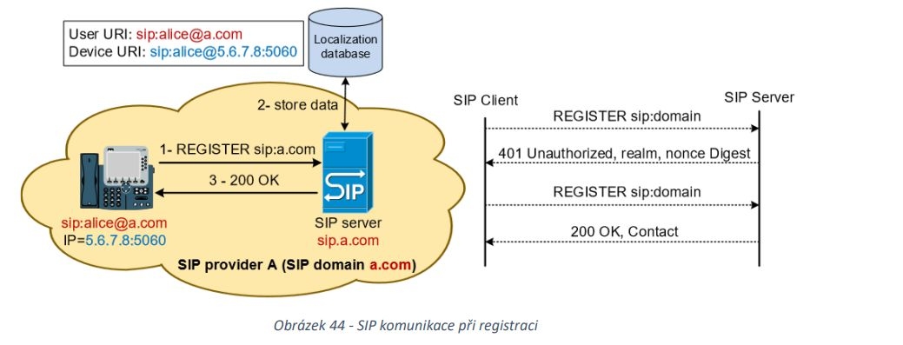
(7.9 Popište protokol SIP a uveďte základní metody.) Zakreslete komunikaci SIP (b) při navázání spojení.
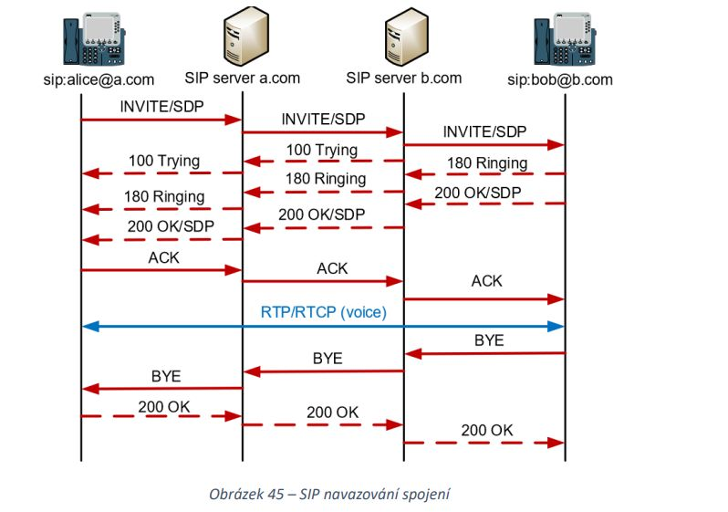
1.1 Popište jednotlivé vrstvy modely TCP/IP, jejich funkci a protokoly, které na
nich komunikují.
TCP/IP Model: L7 - Application Layer - HTTP, DNS, FTP, SSH, DHCP L4 - Transport Layer - TCP, UDP, SCTP, QUIC L3 - Internet Layer - IPv4, IPv6, ICMP, IPSec L2 - Datalink Layer -\ Ethernet, X.25, L1 - Physical Layer -/ Wifi
1.1 Popište jednotlivé vrstvy modely TCP/IP, jejich funkci a protokoly, které na
nich komunikují.
Vrstva L3
(Internetová vrstva) je zodpovědná za přenos paketů po síti. Hlavním protokolem je
IP (V4 i V6). Stará se o směrování paketů v rámci IP adres.
1.1 Popište jednotlivé vrstvy modely TCP/IP, jejich funkci a protokoly, které na
nich komunikují.
Vrstva L4
(Transportní vrstva) zajišťuje přenos dat mezi systémy. Používá protokoly TCP,
UDP… Stará se o segmentaci dat za správné doručení.
1.1 Popište jednotlivé vrstvy modely TCP/IP, jejich funkci a protokoly, které na
nich komunikují.
Vrstva L7
(Aplikační vrstva) poskytuje síťové služby aplikacím. Zahrnuje protokoly, jako HTTP,
SMTP, FTP. Stará se komunikaci mezi jednotlivými síťovými aplikacemi.
1.1 Popište jednotlivé vrstvy modely TCP/IP, jejich funkci a protokoly, které na
nich komunikují.
Vrstva Síťového rozhraní
Vrstva Síťového rozhraní se zabývá fyzickým přenosem dat v síti. Zahrnuje ovladače pro
různé typy hardwaru a používá protokoly jako Ethernet, které umožňují komunikaci na
nejnižší úrovni.
1.10 Popište formát a typy adres IPv6. Vysvětlete způsob přidělování adres
IPv6.
IPv6 adresy jsou 128bitové, což poskytuje mnohem větší adresní prostor než 32bitové adresy
IPv4. IPv6 adresy jsou zapisovány jako osm skupin po čtyřech hexadecimálních číslech
oddělených dvojtečkami, například
2001:0db8:85a3:0000:0000:8a2e:0370:7334. Pro zjednodušení zápisu mohou
být vedoucí nuly ve skupině vynechány a jedna sekvence nul může být zkrácena pomocí
dvojité dvojtečky (::), ale to lze udělat pouze jednou v adrese, aby byla zachována
jednoznačnost.
1.10 Popište formát a typy adres IPv6. Vysvětlete způsob přidělování adres
IPv6.
Přidělení IPv6 adresy
Manuální konfigurace – Podobně jako u IPv4, může být IPv6 adresa přidělena
administrátorem sítě ručně.
Stateless Address Autoconfiguration (SLAAC) – Tento mechanismus umožňuje zařízením
automaticky nakonfigurovat unicast IPv6 adresu bez potřeby serveru. Zařízení generuje svou
vlastní adresu kombinací lokálně unikátního prefixu, který oznámí směrovač, a části
odvozené z MAC adresy rozhraní.
Stateful configuration pomocí DHCPv6 – DHCP server přiděluje IPv6 adresy, podobně jako v
IPv4. Může poskytovat zařízením další konfigurační informace, jako jsou DNS servery.
*Temporary addresses – Tyto adresy jsou podobné SLAAC, ale jsou navíc generovány s
náhodnými identifikátory pro zvýšení soukromí uživatelů.
*Modified EUI-64 format – Tento formát je používán pro generování interface identifikátoru
z MAC adresy pro SLAAC. V tomto případě je 48bitová MAC adresa rozšířena na 64bitů podle
EUI-64 specifikace, což je pak spojeno s lokálním síťovým prefixem
1.10 Popište formát a typy adres IPv6. Vysvětlete způsob přidělování adres
IPv6.
Typy IPv6 adres
Typy IPv6 adres
IPv6 má 3 typy adres:
• Unicastové
• Multicastové
• Anycastové
Unicast adresy – slouží pro identifikaci jednoho rozhraní v síti. Pakety odeslané na unicast
adresu jsou doručeny právě tomu jednomu rozhraní.
Multicast adresy – slouží pro identifikaci skupiny rozhraní, obvykle v různých sítích. Pakety
odeslané na multicast adresu jsou doručeny všem členům skupiny.
Anycast adresy – jsou přiřazeny více než jednomu rozhraní, typicky na různých zařízeních, s
významem, že paket poslaný na anycast adresu je doručen nejbližšímu (v termínech
směrování) rozhraní s touto adresou.
1.11 Vysvětlete, co obsahuje tabulka ARP a k čemu se záznamy používají, kdy a
jakým způsobem se do tabulky ARP záznamy vkládají.
Tabulka ARP (Address Resolution Protocol) je součástí každého zařízení připojeného k síti,
která používá IPv4. Obsahuje záznamy sloužící k mapování IP adres na odpovídající fyzické
(MAC) adresy síťových zařízení na lokální síti (LAN). Tato tabulka je nezbytná pro komunikaci
na linkové vrstvě, protože IP pakety musí být zabaleny do rámce, který je přenášen po síti, a
k tomu je potřeba znát MAC adresu cílového zařízení.
1.11 Vysvětlete, co obsahuje tabulka ARP a k čemu se záznamy používají, kdy a
jakým způsobem se do tabulky ARP záznamy vkládají.
Použití ARP
Záznamy se používají, když je potřeba odeslat nějaký IP paket na jiné zařízení v lokální síti.
Odesílající zařízení použije ARP tabulku k nalezení odpovídající MAC adresy. Pokud je známá
cílová IP adresa, ale ne MAC adresa, pak se vyhledá záznam v tabulce.
1.11 Vysvětlete, co obsahuje tabulka ARP a k čemu se záznamy používají, kdy a
jakým způsobem se do tabulky ARP záznamy vkládají.
Vkládání záznamů do ARP
Neprve se spustí dotaz ARP (ARP Request). Ten se spustí tehdy, když v ARP tabulce není pro
danou IP adresu žádný záznam. Tento dotaz je broadcastován všem zařízením v síti.
Poté zařízení, které má odpovídající adresu, odešle odpověď (ARP Reply), ve které je
obsažena i MAC adresa zařízení. Pokud žádné zařízení s danou IP adresou v síti není, potom
se pošle paket jako broadcast.
Nakonec se tabulka ARP aktualizuje a přidá si záznam s MAC adresou pro danou IP adresu.
1.12 Popište průběh vyhledávání cesty pro odesílaný paket. Jakými prostředky
lze zkontrolovat cestu paketu?
Nejprve je potřeba si určit cílovou IP adresu. Tu lze zjistit pomocí dotazu na záznam v DNS,
překladem doménového jména.
Následně se kontroluje, zda se cílová IP adresa nenachází v lokální síti. Pokud ano, pak se
paket pošle přímo, pokud ne, tak je paket poslán na Gateway (směrovač). Ten následně
rozhodne o nejlepší cestě pro paket a pošle ho na jiný směrovač.
Po dosažení cílové sítě je paket doručen cílovému zařízení buď přímo nebo prostřednictvím
nějakého switche v lokální síti.
1.12 Popište průběh vyhledávání cesty pro odesílaný paket. Jakými prostředky
lze zkontrolovat cestu paketu?
Kontrola cesty paketu
Cestu paketu lze kontrolovat dvěma hlavními způsoby, a to pingem a traceroutem.
1.12 Popište průběh vyhledávání cesty pro odesílaný paket. Jakými prostředky
lze zkontrolovat cestu paketu?
Kontrola cesty paketu - Ping
Ping se používá převážně pro zjištění, jestli je vůbec IP adresa dosažitelná. Používá se jako: ping <localhost> ping <local IP> ping <default gateway IP> ping <remote IP> ping <remote hostname>
1.12 Popište průběh vyhledávání cesty pro odesílaný paket. Jakými prostředky
lze zkontrolovat cestu paketu?
Kontrola cesty paketu - Traceroute
Traceroute vyloženě sleduje cestu paketu. Funguje posíláním paketů s nízkým TTL a čekáním
na TTL exceeded ICMP zprávu. Příkaz si přečte tuto zprávu a zjistí tím adresu prvního
směrovače. Existují ale některé problémy.
• Pokud některé zařízení po cestě zakazuje ICMP zprávy, část cesty bude chybět.
• Pokud existuje více cest do cíle, potom může traceroute zvolit při každém posílání
jinou cestu a výsledek tak nebude reálný.
Usage: tracert|traceroute|tcptraceroute <adress>
1.13 Vysvětlete, jak probíhá překlad adres IPv6 na MAC adresy.
Překlad adres IPv6 na MAC adresy probíhá pomocí protokolu nazývaného Neighbor
Discovery Protocol (NDP), který je součástí protokolu ICMPv6. NDP nahrazuje ARP (Address
Resolution Protocol) používaný v IPv4 pro mapování IP adres na MAC adresy. Hlavním
mechanismem pro tento překlad v rámci NDP je Neighbor Solicitation (NS) a Neighbor
Advertisement (NA) zprávy.
1.13 Vysvětlete, jak probíhá překlad adres IPv6 na MAC adresy.
Neighbor advertisement
Zařízení, které vlastní dotazovanou IPv6 adresu, odpovídá Neighbor Advertisement zprávou.
Tato zpráva je odeslána zpět k původnímu zařízení a obsahuje MAC adresu cílového zařízení.
NA může být poslán buď jako unicast zpět k zařízení, které poslalo NS, nebo jako multicast,
pokud je to vhodné.
Po obdržení NA zprávy aktualizuje odesílající zařízení svou cache NDP. Tato cache udržuje
mapování IPv6 adres na MAC adresy, podobně jako ARP cache v IPv4. Tato informace je pak
použita pro odesílání budoucích paketů na lokální síťové segmenty.
1.13 Vysvětlete, jak probíhá překlad adres IPv6 na MAC adresy.
Neighbor solicitation
Když zařízení potřebuje zjistit MAC adresu pro danou IPv6 adresu, odesílá Neighbor
Solicitation zprávu. Tato zpráva je poslána jako multicast na speciálně vyhrazenou
multicastovou adresu, která odpovídá cílové IPv6 adrese (tzv. Solicited-Node multicast
adresa).
NS zpráva obsahuje IP adresu odesílatele (pokud je k dispozici) a IPv6 adresu, pro kterou se
dotazuje na MAC adresu.
1.15 Jak lze vypsat seznam síťových služeb, které aktuálně běží na počítači?
Jaké informace výpis o spojení obsahuje?
netstat -rn Obsahuje:
• Cíl (destination)
• Bránu (Gateway)
• Masku sítě (Genmask)
• Flags
• MSS (Max Segment Size)
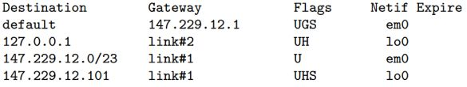
1.16 Jak lze pomocí síťových nástrojů zjistit, zda je daný uzel aktivní a zda na
něm běží daná síťová služba?
telnet <adresa> <port>
Tento příkaz se používá k testování dostupnosti služeb běžících na specifických portech. Když
se pokusíte připojit na port, kde služba běží, telnet by měl být schopen navázat spojení.
1.2 Definujte zapouzdření a popište, jak probíhá. Uveďte. Které síťové prvky,
případně software, provádějí zapouzdření dat na konkrétní síťové vrstvě modelu.
Aplikační vrstva (L7)
V tomto kroku, aplikace (například webový prohlížeč) vytvoří datový
balíček, který obsahuje HTTP požadavek a přidá k němu příslušné hlavičky, jako je například
typ obsahu, přijímané jazyky atd. Zde se o zapouzdření starají aplikace, webové prohlížeče,
e-mail klienti…
1.2 Definujte zapouzdření a popište, jak probíhá. Uveďte. Které síťové prvky,
případně software, provádějí zapouzdření dat na konkrétní síťové vrstvě modelu.
Co je zapouzdření?
Zapouzdření je proces v síťové komunikaci, kdy data z vyšší vrstvy jsou obalena hlavičkou
nižší vrstvy. Tento proces se opakuje na každé vrstvě modelu TCP/IP, když jsou data posílána z
jednoho počítače do druhého. Na každé vrstvě jsou k datům přidány specifické informace
potřebné pro správné doručení a zpracování.
Podstatou je, aby mohly různé typy sítí a protokolů mezi sebou komunikovat a aby byl
poskytnut jednotný způsob, jakým je možné data posílat a přijímat.
1.2 Definujte zapouzdření a popište, jak probíhá. Uveďte. Které síťové prvky,
případně software, provádějí zapouzdření dat na konkrétní síťové vrstvě modelu.
Internetová vrstva (L3)
Na této vrstvě přidává protokol IP další hlavičku, která obsahuje
zdrojovou a cílovou IP adresu a další informace potřebné k určení trasy paketu po síti. O
zapouzdření se stará operační systém nebo směrovače po přidání IP hlaviček.
1.2 Definujte zapouzdření a popište, jak probíhá. Uveďte. Které síťové prvky,
případně software, provádějí zapouzdření dat na konkrétní síťové vrstvě modelu.
Transportní vrstva (L4)
Zde se k datům z aplikace přidá transportní hlavička, typicky TCP
nebo UDP. V případě TCP obsahuje hlavička informace jako jsou zdrojový a cílový port,
sekvence a potvrzovací čísla, která zajišťují správné a spolehlivé doručení. O zapouzdření se
zde stará operační systém.
1.2 Definujte zapouzdření a popište, jak probíhá. Uveďte. Které síťové prvky,
případně software, provádějí zapouzdření dat na konkrétní síťové vrstvě modelu.
Vrstva síťového rozhraní
Zde se k paketu přidávají informace fyzické vrstvy, jako jsou MAC
adresy zdroje a cíle a typ protokolu (např. Ethernet), což umožňuje přenos dat po fyzickém
médiu.
1.3 Definujte adresování. Jak vypadá adresa na jednotlivých vrstvách modelu
TCP/IP a kdo ji přiděluje? Uveďte jednotlivé příklady adres pro jednotlivé vrstvy
modelu TCP/IP.
Vrstva L3
Adresy na této vrstvě jsou IP adresy, které jednoznačně identifikují zařízení na síti. IP adresy
jsou přidělovány buď staticky administrátorem sítě nebo dynamicky pomocí protokolu DHCP
(Dynamic Host Configuration Protocol). IP adresy jsou spravovány IANA a regionálními
internetovými registry (RIR). Příklady by mohly být například 192.168.1.1 (IPv4) nebo
2001:0db8:85a3:0000:0000:8a2e:0370:7334 (IPv6).
1.3 Definujte adresování. Jak vypadá adresa na jednotlivých vrstvách modelu
TCP/IP a kdo ji přiděluje? Uveďte jednotlivé příklady adres pro jednotlivé vrstvy
modelu TCP/IP.
Vrstva L4
Na této vrstvě se používají porty pro identifikaci konkrétních aplikací nebo procesů běžících
na zařízení. Porty jsou čísla přidělována operačním systémem zařízení. Existují "dobře známé
porty" (např. 80 pro HTTP, 443 pro HTTPS), které jsou standardizovány a přiděleny organizací
IANA. Příkladem je třeba port 80 (HTTP) nebo 443 (HTTPS).
1.3 Definujte adresování. Jak vypadá adresa na jednotlivých vrstvách modelu
TCP/IP a kdo ji přiděluje? Uveďte jednotlivé příklady adres pro jednotlivé vrstvy
modelu TCP/IP.
Vrstva L7
Na této vrstvě se většinou používá URL nebo URI pro webové zdroje, emailové adresy a
podobně. Adresy jsou přidělovány a spravovány různými autoritami (IANA). Příkladem je
například https://www.example.com nebo user@example.com.
1.3 Definujte adresování. Jak vypadá adresa na jednotlivých vrstvách modelu
TCP/IP a kdo ji přiděluje? Uveďte jednotlivé příklady adres pro jednotlivé vrstvy
modelu TCP/IP.
Vrstva síťového rozhraní
Zde se používají fyzické adresy, známé jako MAC adresy (Media Access Control). Tyto adresy
jsou unikátní pro každé síťové rozhraní a jsou nastaveny výrobcem síťového zařízení.
Příkladem může být třeba 00:1A:2B:3C:4D:5E.
1.4 Vysvětlete, jak se mění zapouzdření aplikačních dat při přenosu na
počítačové síti.
Průběh zapouzdření
V průběhu přenosu mohou směrovače na cestě paketu odebírat IP hlavičky a přidávat nové,
pokud je to nutné pro přesměrování na další části sítě. Když paket dosáhne cílového
6
systému, proces zapouzdření se obrátí – na každé vrstvě jsou postupně odebírány hlavičky
přidané během zapouzdření, až jsou data dostupná v původní formě pro cílovou aplikaci:
Vrstva síťového rozhraní: Odstraní fyzickou hlavičku a předá data internetové vrstvě.
Internetová vrstva (L3): Odstraní IP hlavičku a předá data transportní vrstvě.
Transportní vrstva (L4): Zpracuje informace z transportní hlavičky, jako je kontrola sekvence
a potvrzení, a předá data aplikační vrstvě.
Aplikační vrstva (L7): Aplikace přijímá data bez síťových hlaviček, pouze s informacemi
potřebnými pro danou aplikaci.
1.4 Vysvětlete, jak se mění zapouzdření aplikačních dat při přenosu na
počítačové síti.
Tvorba dat na aplikační vrstvě
Aplikace vytvoří data, například HTTP požadavek pro webový server. Tato data jsou
zapouzdřena v protokolu aplikace, jako je HTTP, SMTP, FTP atd.
1.4 Vysvětlete, jak se mění zapouzdření aplikačních dat při přenosu na
počítačové síti.
Zapouzdření na internetové vrstvě (L3)
Transportní paket je předán internetové vrstvě, kde je zapouzdřen do IP paketu. IP hlavička
obsahuje zdrojovou a cílovou IP adresu a další informace pro směrování paketu sítí.
1.4 Vysvětlete, jak se mění zapouzdření aplikačních dat při přenosu na
počítačové síti.
Zapouzdření na transportní vrstvě (L4)
Aplikační data jsou předána transportní vrstvě, kde jsou zapouzdřena v transportním
protokolu, jako je TCP nebo UDP. V případě TCP to zahrnuje přidání hlavičky s porty,
sekvencemi čísel, potvrzovacími čísly a dalšími informacemi pro spolehlivou komunikaci.
1.4 Vysvětlete, jak se mění zapouzdření aplikačních dat při přenosu na
počítačové síti.
Zapouzdření na vrstvě síťového rozhraní
IP paket je předán síťovému rozhraní, kde je přidána hlavička a trailer (detekce chyb…) síťové
vrstvy, v případě Ethernetu je to Ethernetová hlavička s MAC adresami a typem protokolu.
Výsledný rámec je poté fyzicky přenesen po síti.
1.5 Definujte směrování. Ukažte, jak funguje směrování na jednotlivých
vrstvách modelu TCP/IP.
Aplikační vrstva (L7)
Na této vrstvě není směrování v tradičním smyslu aplikováno, ale
aplikace může rozhodnout, ke kterému serveru se chce připojit, na základě aplikací
specifických informací jako je URL nebo e-mailová adresa.
1.5 Definujte směrování. Ukažte, jak funguje směrování na jednotlivých
vrstvách modelu TCP/IP.
Internetová vrstva (L3)
Směrování je klíčovou funkcí této vrstvy. IP adresy a směrovací
tabulky se používají ke směrování datových paketů přes síť. Směrovače na této vrstvě
přezkoumávají cílovou IP adresu v hlavičce každého IP paketu a rozhodují o nejlepší cestě pro
přenos dat k cíli. Směrovače udržují směrovací tabulky, které obsahují informace o sítích a
nejlepších cestách k nim.
1.5 Definujte směrování. Ukažte, jak funguje směrování na jednotlivých
vrstvách modelu TCP/IP.
Směrování
Směrování je proces určování cesty, kterou budou síťové pakety následovat, aby dosáhly
svého cílového místa přes jednu nebo více síťových vrstev.
1.5 Definujte směrování. Ukažte, jak funguje směrování na jednotlivých
vrstvách modelu TCP/IP.
Transportní vrstva (L4)
I když na této vrstvě neprobíhá přímé směrování, transportní
protokoly jako TCP a UDP využívají porty k určení cílových služeb na hostitelském systému. To
je formou adresování, která přispívá k doručení dat správné aplikaci na koncovém zařízení
1.5 Definujte směrování. Ukažte, jak funguje směrování na jednotlivých
vrstvách modelu TCP/IP.
Vrstva síťového rozhraní
Ačkoliv se zde neprovádí směrování v pravém slova smyslu, tato
vrstva je odpovědná za přenos dat mezi fyzickým médiem (jako je Ethernet) a IP vrstvou.
Ethernetové switche mohou rozhodnout, na který port poslat rámec na základě MAC adresy,
což lze považovat za formu směrování na datové odkazové vrstvě.
1.6 Popište, jak probíhá směrování u služby DNS, elektronické pošty, IP
telefonie.
DNS
Systém používá 3 hlavní komponenty: • Prostor doménových jmen
• DNS server
• Resolver
1.6 Popište, jak probíhá směrování u služby DNS, elektronické pošty, IP
telefonie.
Elektronická pošta (SMTP)
Organizace poskytne SMTP server, který je potřeba nakonfigurovat do mailového klienta.
Všechna odeslaná pošta putuje na SMTP server, kde následně probíhá překlad MX záznamu a
následná rezoluce A záznamu. Pokud cílový server neexistuje, je odeslaná zpráva o
neúspěšném doručení zprávy zpět odesilateli.
Pro čtení mailů z MTA (Mail Transfer Agent) je potřeba si nastavit protokol (POP3 nebo
IMAP), které následně umožní si stáhnout emaily za schránky.
1.6 Popište, jak probíhá směrování u služby DNS, elektronické pošty, IP
telefonie.
IP telefonie
1. Nakonfiguruji si svoji ústřednu do SIP aplikace nebo VOIP zařízení, které mám v plánu
používat.
2. Registruji se na ústřednu pomocí příkazu REGISTER a dávám tím serveru informaci o
tom, kde se vlastně nacházím (device URI) a také říkám, že jsem dostupný.
3. Pokud chci někomu, zavolat, použiji příkaz INVITE, SIP ústředna směřuje dotaz
pomocí SIP URI tak, že si najde příslušný server pomocí DNS a danou signalizaci pošle.
4. Po INVITE se odešle příkaz RINGING, na který se odpoví příkazem ACK.
5. Mezi volajícím a adresátem se vytvoří RTP spojení a probíhá hovor.
1.6 Popište, jak probíhá směrování u služby DNS, elektronické pošty, IP
telefonie.
Rezoluce
Rezoluce je proces hledání odpovědi v systému DNS. Musí být nastaven alespoň jeden DNS
server, například DNS_A a klient pošle A záznam pro fit.vutbr.cz. DNS_A pravděpodobně není
autoritativní pro danou doménu a děje se tak následovně:
• DNS_A přepošle dotaz na fit.vutbr.cz na root server, který v odpovědi pošle
autoritativní server pro .cz.
• DNS_A pošle stejný dotaz na autoritativní server pro .cz a jako odpoěď dostane
informaci o tom, kdo je autoritativní server pro vutbr.cz.
• Na autoritativní server pro vutbr.cz pošle DNS_A opět ten samý dotaz, odpovědí bude
A záznam pro fit.vutbr.cz (pokud existuje).
• DNS_A přepošle tuto odpověď klientovi.
Top level domains pro .cz bývají hodně vytížené. Servery mu posílají otázky s tím, kam mají
rámec dál poslat (iterativně). Servery totiž odpoví, že A záznam neznají a řeknou, kde se
máme ptát dál.
Rekurzivně to funguje tak, že se DNS_A snaží najít A záznam a až když ho najde, potom ho
teprve pošle klientovi.
1.7 Popište mapování IPv4 a IPv6 adres na MAC adresy. Vysvětlete, kdy a jak
probíhá. Uveďte rozdíl mezi IPv4 a IPv6.
Pro IPv4 se na mapování využívá ARP (Address Resolution Protocol) a na IPv6 se využívá NDP
(Neigbor Discovery Protocol).
1.7 Popište mapování IPv4 a IPv6 adres na MAC adresy. Vysvětlete, kdy a jak
probíhá. Uveďte rozdíl mezi IPv4 a IPv6.
1.7.3 IPv4 vs IPv6
• IPv4 používá 32bitové adresy, což znamená 2^32 adres. IPv6 používá 128 bitů, což
znamená 2^128 adres, což je výrazně více.
• IPv4 adresy jsou zapisovány jako čtveřice desítkových čísel oddělených tečkami (např.
192.168.0.1), zatímco IPv6 adresy jsou reprezentovány jako osm skupin čtyř
šestnáctkových čísel oddělených dvojtečkami (např.
2001:0db8:85a3:0000:0000:8a2e:0370:7334).
• IPv6 má jednodušší a efektivnější formát hlavičky ve srovnání s IPv4, což zlepšuje
zpracování a směrování paketů.
• V IPv6 byl ARP nahrazen NDP a díky obrovskému adresnímu prostoru není typicky
potřeba NAT (Network Address Translation), což je běžné u IPv4.
1.7 Popište mapování IPv4 a IPv6 adres na MAC adresy. Vysvětlete, kdy a jak
probíhá. Uveďte rozdíl mezi IPv4 a IPv6.
IPv4 + ARP
• Když zařízení na lokální síti potřebuje poslat paket na IP adresu, nejdříve musí zjistit,
jaká MAC adresa odpovídá této IP adrese.
• Pokud je cílová IP adresa na stejné lokální síti, zařízení použije ARP pro zjištění MAC
adresy.
• Zařízení odešle ARP request do sítě jako broadcast (na všechna zařízení), který
obsahuje cílovou IPv4 adresu.
• Zařízení s touto IP adresou odpoví ARP reply zprávou, která obsahuje jeho MAC
adresu.
• Odesílající zařízení si uloží tuto odpověď do své ARP tabulky pro budoucí odkazy a
použije MAC adresu pro odeslání Ethernetového rámce.
1.7 Popište mapování IPv4 a IPv6 adres na MAC adresy. Vysvětlete, kdy a jak
probíhá. Uveďte rozdíl mezi IPv4 a IPv6.
IPv6 + NDP
• IPv6 používá Neighbor Discovery Protocol, který je součástí ICMPv6, pro několik
funkcí, včetně zjištění MAC adres (podobně jako ARP ve IPv4).
• Pro zjištění MAC adresy, zařízení v IPv6 síti odešle Neighbor Solicitation zprávu do
sítě, adresovanou na multicastovou IP adresu, která odpovídá cílové IPv6 adrese.
• Zařízení s cílovou IPv6 adresou pošle zpět Neighbor Advertisement, který obsahuje
jeho MAC adresu.
• Podobně jako ARP, zařízení si tuto informaci ukládá do své tabulky pro budoucí
komunikaci.
1.8 Popište formát adres IPv4 a její třídy. Vysvětlete, co je maska sítě a
broadcastová adresa, jak se vypočítají a k čemu slouží.
IPv4 adresy byly původně rozděleny do pěti tříd – A, B, C, D a E, aby podporovaly sítě různých
velikostí.
• Třída A: Podporuje velmi velké sítě s 7bitovou síťovou částí a 24bitovou hostitelskou
částí. Rozsah třídy A je 1.0.0.0 až 127.255.255.255.
• Třída B: Pro středně velké sítě s 14bitovou síťovou částí a 16bitovou hostitelskou
částí. Rozsah třídy B je 128.0.0.0 až 191.255.255.255.
• Třída C: Pro malé sítě s 21bitovou síťovou částí a 8bitovou hostitelskou částí. Rozsah
třídy C je 192.0.0.0 až 223.255.255.255.
• Třída D: Rezervováno pro multicastové skupiny a nepoužívá se pro standardní síťové
adresy. Rozsah je 224.0.0.0 až 239.255.255.255.
• Třída E: Rezervováno pro experimentální účely, jako je výzkum. Rozsah je 240.0.0.0 až
255.255.255.255.
1.8 Popište formát adres IPv4 a její třídy. Vysvětlete, co je maska sítě a
broadcastová adresa, jak se vypočítají a k čemu slouží.
Broadcastová adresa
Broadcastová adresa je speciální adresa v síti, která se používá pro odesílání datových paketů
všem zařízením v dané síti. Je to poslední adresa v síti a vypočítá se nastavením všech
hostitelských bitů na binární hodnotu '1'. Například, pro síť s adresou 192.168.1.0 a
maskou 255.255.255.0, je broadcastová adresa 192.168.1.255.
Používá se k odeslání paketu všem zařízením ve stejné lokální síti bez nutnosti odesílat
individuální pakety každému zařízení.
1.8 Popište formát adres IPv4 a její třídy. Vysvětlete, co je maska sítě a
broadcastová adresa, jak se vypočítají a k čemu slouží.
Maska sítě
Maska sítě je kombinace bitů, která určuje, kolik bitů adresy je věnováno síťové části a kolik
bitů je věnováno hostitelské části. Například, maska 255.255.255.0 pro IPv4 adresu
indikuje, že první tři oktety jsou síťová část a poslední oktet je hostitelská část.
Používá se k určení rozsahu IP adres, které patří do stejné sítě a k rozlišení síťové části od
hostitelské části adresy
1.9 Popište způsob přidělování IPv4 adres. Jak zjistíte, komu daná IP adresa
patří?
IP adresy spravuje organizace IANA, která přiděluje bloky adres jednotlivým registrátorům
(RIPE, ARIN…), které následně přidělují menší bloky adres poskytovatelům, kteří je následně
přidělují jednotlivým zákazníkům na základě jejich potřeb.
IPv4 a IPv6 adresy se přidělují jednotlivým zařízením pomocí DHCP nebo staticky. Pro IPv6 se většinou používá SLAAC (Stateless Address Autoconfiguration). Vlastnictví adresy lze zjistit pomocí příkazu whois.
10.1 Definujte pojmy tok (IP flow) a záznam o toku (flow record). Uveďte klíčové
a statistické položky záznamu o toku. Napište příklad záznamu o toku.
Tok (IP Flow) je posloupnost paketů mající společnost vlastnost a procházející bodem pozorování za určitý časový interval Záznam o toku obsahuje informace o toku. Obsahuje klíčové položky zdrojovou a cílovou IP adresu, zdrojový a cílový port, typ protokolu (případně ještě ToS byte a input logical interface). Za statistické položky můžeme brát např. datum a čas zaznamenání, počet přenesených dat toku (paketů / bajtů).
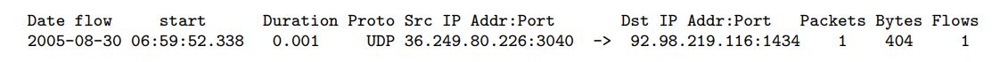
10.10 Ukažte příklady použití NetFlow pro monitorování sítě.
nejaky chatgpt yap, Matousek to nema popsane nikde Detekce a analýza bezpečnostních hrozeb Sledování výkonu a kapacity sítě Optimalizace sítě a plánování Troubleshooting a diagnostika Účtování a reporting
10.11 Uveďte, které informace o síti lze získat pouze pomocí NetFlow a nelze
získat pomocí SNMP.
NetFlow je schopný zjistit konkrétní záznam o toku a tím pádem zjistit detaily probíhající komunikace (z hlaviček paketů)
NetFlow je schopný zjistit počet paketů a objem dat mezi dvěma zařízeními
10.13 Jaká data z NetFlow mohu využít pro detekci bezpečnostních incidentů?
Např. IP adresy a porty (detekce podezřelých IP nebo neobvyklých portů) Paketové informace (detekce neobvyklých vzorů v komunikaci) Časové informace (detekce synchronizovaných útoků, např. DDoS) Analýza objemu dat (velký nebo neobvyklý objem může také naznačovat DoS)
10.14 Jaké informace z NetFlow lze použít pro účtování přenosů uživatelů?
Pravděpodobně počet paketů / bajtů, je-li např. uživatel účtován za objem přenesených dat. Nevím za co jinýho účtovat :D počet paketů na IP pornhub.com
10.15 Jak byste detekovali výpadek služby pomocí NetFlow?
NetFlow narozdíl od SNMP není schopno přímo detekovat výpadek služby. Nepřímo můžeme detekovat výpadek služby např. pomocí časovačů (nastavíme takový pasivní časovač na velmi vytížený tok, kde očekáváme, že bude stále nějaký provoz - pokud vyprší, můžeme předpokládat, že služba vypadla, ale není to detekce výpadku v pravém slova smyslu)
10.2 Popište architekturu systému NetFlow. Vysvětlete funkci základních prvků
systému.
Exportér
Sonda nebo router, který monitoruje data a získává statistiky o tocích. Exportér tato data následně zasílá na kolektor, jako je třeba nprobe nebo Flowmon
Komunikační protokol Netflow
Způsob přenosu dat, co se přenáší se odvíjí od použité verze Netflow (v5, v9, IPFIX aka v10)
Kolektor
zařízení, které vypracuje data o tocích, poslaných exportérem. Na tato data se následně dají použít nástroje jako nfdump, grafana, NfSen, Scrutinizer
Nástroje pro zobrazení dat
grafy, statistiky, atd., např Nfsen
10.3 Popište funkci sondy NetFlow. Vysvětlete, jak probíhá monitorování
síťového provozu a vytváření záznamu o tocích.
Exportér se nachází někde blízko za směrovačem (zařízení nebo SW) a sbírá a vytváří záznamy o tocích. Tyto toky jsou odlišovány pomocí hash funkce, která se vytváří kombinací několika klíčových parametrů, jako je třeba zdrojová a cílová IP adresa, zdrojový a cílový port, protokol, ToS, interface. Pokud se nějaký z parametrů liší, bude pro něj jiný hash a tvoří svůj vlastní tok. Exportér následně data sbalí a posílá je na kolektor, ten je následně agreguje a tvoří záznam. Exportér data zasílá při různých příležitostech:
detekce konce toku, např. ukončení TCP spojení (TCP FIN, TCP RST)
Neaktivita toku - neaktivní timeout (např. 15 sec - default hodnota)
Příliš dlouhý tok - aktivní timeout (např. 30 min)
Zaplnění paměti Netflow cache
Tok je považován za ukončený a vyřazen z paměti NetFlow cache.
10.4 Popište roli aktivního a pasivního časovače u sondy NetFlow
Pasivní časovač časuje, jak je to dlouho od doby, kdy přišel poslední paket. Pokud je hodnota přesáhnuta, data se exportují. Aktivní časovač udává maximální dobu trvání jednoho toku. Při nastavení na 10 min bude tok sledován max. 10 min a poté data exportována.
10.5 Vysvětlete pojem vzorkování dat u NetFlow a kde k němu dochází. Popište
výhody a nevýhody vzorkování.
Vzorkování se využívá tak, že budu sbírat například jenom 5% vzorek probíhající komunikace a ten potom analyzuji. Tedy vzorkování se snaží nějakým způsobem usměrnit množství příchozích dat a poměrně tak zmenšit jejich množství. Toto vzorkování může delat jak exportér, tak kolektor. Vzorkujeme např. podle času, pořadí, velikosti Flow filtr - vzorkování podle provozu, není tak zatížena cache Výhody:
Snížení nároků na hardware, 1:100 vzorkování (ze 100 vzorků vezmeme 1) se sníží nároky přibližně o 75 %
Nevýhody:
Nevidím všechny pakety, lze přehlédnout problémové toky, data nemusí být zcela přesná
10.6 Vysvětlete pojem agregace dat u NetFlow a kde k němu dochází. Na
příkladu záznamů NetFlow demonstrujte agregaci záznamů. Jaké jsou výhody a
nevýhody agregace?
K agregaci dochází na exportéru nebo na kolektoru. Agregujeme podle klíčových položek (srcIP, dstIP, srcPort, dstPort, protokol, interface, ToS) Nové záznamy se ukládají v exportéru do Aggregation Cache
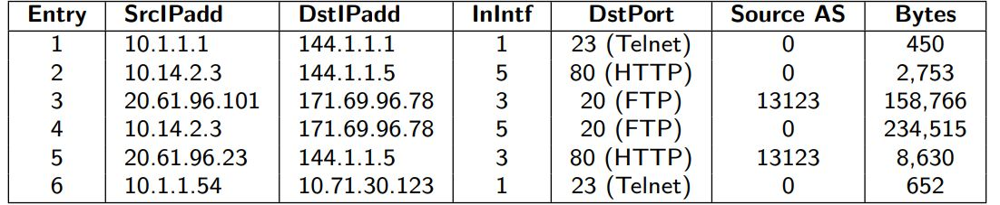
Příklad agregace:
vstupní rozhraní - 1 a 6, 2 a 4, 3 a 5
typ aplikace - 1 a 6, 2 a 5, 3 a 4
autonomní systém - 1,2,4 a 6, 3 a 5
rozsah srcIP - 1 a 6, 2 a 4, 3 a 5
rozsah destIP - 1,2 a 5, 3 a 4, 6
Výhody:
Lepší zhlediska hlubšího zkoumání (například kdo přenesl nejvíce/nejméně dat)
Nevýhody:
Můžeme přijít o nějaké informace (např. při agregaci podle rozsahu zdrojových IP adres nepoznáme, která je konkrétně nejvytíženější)
10.7 Popište protokol NetFlow, jeho formát, použití. Na jaké vrstvě modelu
TCP/IP je přenos definován?
(NEPLÉST SI PROTOKOL NETFLOW A SYSTÉM NETFLOW)
Netflow je síťový protokol vyvinutý firmou Cisco pro sběr informací o síťovém provozu. Poskytuje podrobné informace o toku dat v síti, jako jsou zdrojové a cílové IP adresy, porty, protokoly, typy služeb a množství přenesených dat. Verze protokolu jsou: v5, v9, ipfix (v10) Je to aplikační protokol, přenos je tedy definován na aplikační vrstvě L7, pracuje nad UDP, nemá pevně daný port. Formát se liší od verze. NetFlow v5
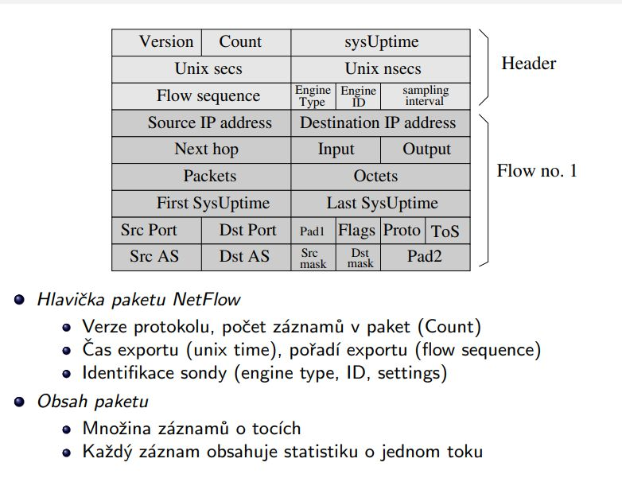
Podporuje pouze sledování IPv4
NetFlow v9
Podporuje sledování IPv4 i IPv6
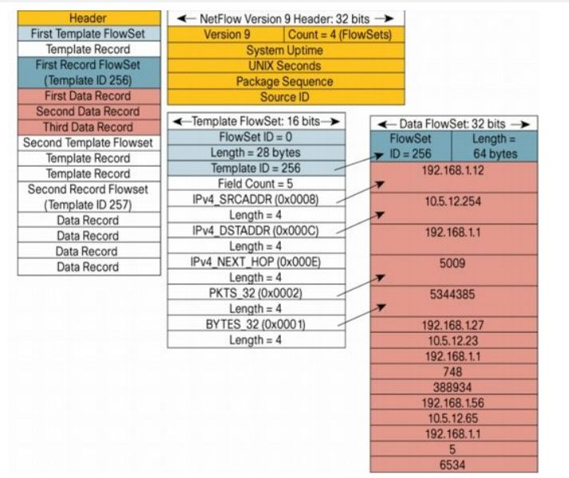
10.8 Popište význam z využití šablon u NetFlow verze 9 (IPFIX).
V šabloně lze nastavit, jaké informace se mají v paketu přenášet a umožňuje nastavit, jaké údaje mají být sledovány. Šablony popisují strukturu záznamů ve flowsetu. Umožňuje tedy flexibilní popis struktury záznamů, možnost vlastních záznamů
10.9 Popište činnost kolektoru. Zapište příklady dotazů na kolektor nfdump pro
vyhledání nejvíce komunikujících uzlů a služeb v síti.
Činnost kolektoru spočívá v :
příjem paketů NetFlow z jednoho či více exportérů
zpracování záznamů o tocích, může agregovat data
ukládání statistik na disk nebo do DB
// soubory bývají ve formátu nfcapd.timestamp
nfdump -R nfcapd.201608261026 -s dstport
nfdump -R nfcapd.201608261026 -s srcport
nfdump -R nfcapd.201608261026 -s srcip
nfdump -R nfcapd.201608261026 -s dstip
11.1 Vysvětlete význam synchronizace času v síti. Co může způsobit chybné
nastavení času na síťových zařízeních?
V sítich je třeba koordinovat události, označovat logy a spouštět skripty v závislosti na systémovém čase Není-li čas synchronizován, tak je obtížně korelovat tyto události Nejlepší praxe je nastavit všem síťovým zařízením čas UTC (lze nakonfigurovat časovou zónu pro zobrazování lokálního času) Význam pro bezpečnost:
key-chains - expirace klíčů
certifikáty - expirace certifikátů
logy - korelace logů z různých zařízení
Co může způsobit chybné nastavení:
Z platných certifikátů může udělat neplatné (a naopak)
Expirace klíčů
11.10n Jaké typy logovacích souborů používá HTTP a jaká data obsahují?
Například HTTP Apache Server tvoří error logy, access logy, PID soubory, Script logy, Rewrite logy Access log Obsahují IP adresu, timestamp, HTTP metodu, URL, HTTP stavový kód, velikost odpovědi a další 192.0.2.1 - - [15/Jan/2025:12:34:56 +0000] "GET /index.html HTTP/1.1" 200 1024 "http://example.com/start" "Mozilla/5.0 (Windows NT 10.0; Win64; x64)" Error log [15/Jan/2025:12:35:00] [error] [client 192.0.2.1] File does not exist: /var/www/html/missing.html Debug log [15/Jan/2025:12:36:00] [debug] Loaded module mod_rewrite.so Performance log Security Log
11.2 Popište princip synchronizace času pomocí NTP. Jaká časová razítka
protokol přenáší? Zakreslete příklad komunikace klienta a serveru NTP.
NTP (Network Time Protocol) je navrženo pro synchronizaci času přes celou síťovou infrastrukturu, včetně serverů, přepínačů, routerů, host zařízení, WPA, UPS atd. NTP běží nad UDP port 123 pro zdroj i cíl NTP používá hierarchii serverů, přesnost každého serveru je definována číslem stratum stratum 0: Referenční hodiny, např. atomové hodiny (cesiovy, rubidiove), GPS hodiny apod. stratum 1:NTP server, jejichž systémový čas je přímo synchronizován s odchylkou pár mikrosekund od příslušného stratum 0 zařízení stratum N: NTP server synchronizován s NTP stratum N-1 serverem (takže stratum 3 server je synchronizován se stratum 2 serverem apod.) NTP se používá 2 způsoby, kterými se vyhýbá synchronizaci času se zařízením, jehož čas nemusí být přesný:
NTP se nikdy nesynchronizuje se zařízením, které samo není synchronizováno
NTP porovnává čas hlášený od několika zařízení a nesynchronizuje se s zařízením, jehož čas se značně liší od ostatních, i když je jeho stratum nižší
Protokol přenáší 4 časová razítka:
T1: Originate timestamp - čas odeslání požadavku klientem
T2: Receive timestamp - čas přijetí požadavku serverem
T3: Transmit timestamp - čas odeslání odpovědi serverem
T4: Destination timestamp - čas přijetí odpovědi klientem
Použitím těchto časových značek je klient schopen odhadnout zpoždění a odchylku:
zpoždění: δ = (T4 – T1) – (T3 – T2)
odchylka: θ = ½ [(T2 – T1) + (T3 – T4)]
Příklad komunikace:
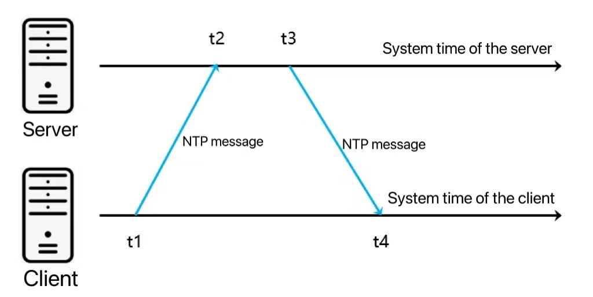
11.3 Ukažte, jak probíhá výpočet zpoždění a posunu hodin při synchronizaci
času NTP.
zpoždění: δ = (T4 – T1) – (T3 – T2) posun: θ = ½ [(T2 – T1) + (T3 – T4)]
11.4 Popište architekturu logování dat Syslog. Ukažte, jaké funkce vykonává
klient (konzole) a server? Uveďte příklad logování zpráv.
Syslog je síťový protokol, který poskytuje komplexní mechanismus hlášení. UDP port 514 Logy jsou zasílány v plaintextu Zprávy mají severity level, který značí důležitost hlášení od 0 (nejzávažnější) po 7 0 - Emergency 1 - Alert 2 - Critical 3 - Error 4 - Warning 5 - Notice 6 - Informational 7 - Debugging Syntaxe zpráv se zkládá z facility (kód skládající se z 2 a více písmen, které indikují původ zprávy), severity, mnemonic (kód, který unikátně identifikuje dané hlášení, není vždy přítomen), text zprávy. Na začátku zprávy bývá obvykle ještě časová značka (kdy nastala událost) Syslog pracuje tak, že syslog démon sleduje lokálně generované události z aplikací a ukládá je do logovacího souboru lokálně nebo na řídící stanici sítě (syslog server). Postupně se systém rozšířil na sledování činnosti procesů na síťových zařízení. Klient si poté v konzoli může vypsat nasbírané hlášení, to může vypadat takto: 2017-12-07T20:45:13+01:00 2017 irf-kn %%10SSH/4/TrapLogin(t): 1.3.6.1.4.1.25506.2.22.1.3.0.3 SSH user login trap information (obecně timestamp, zařízení, trojice facility-severity-mnemonic, zpráva)
11.5 Popište formát protokolu Syslog. Jaké úrovně důležitosti zpráv a typy zařízení znáte? Na
jaké vrstvě modely TCP/IP protokol Syslog pracuje?
Opět důležité rozlišit pojem systém syslog a protokol syslog! Protokol syslog je textový protokol pracující nad UDP na aplikační vrstvě TCP/IP (L7). Formát zprávy obsahuje: Facility (typy zařízení, kód o 2 a více znacích, indikující původ zprávy - IP, OSPF, SYS, IPsec, RSP, IF,...) Severity (8 úrovní, čísla od 0 po 7, postupně Emergency-Alert-Critical-Error-Warning-Notice-Informational-Debugging) Mnemonic (kód, který jednoznačně identifikuje chybovou zprávu - volitelný) Zpráva (text, který popisuje chybu)
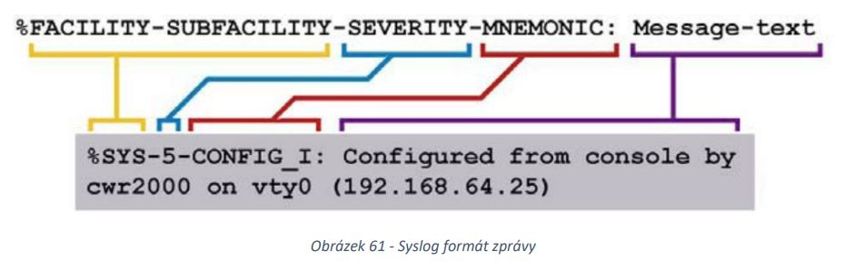
11.6 Uveďte příklady logovacích událostí a jejich použití u následujících
aplikací: SMTP, HTTP, DHCP, SSH, DNS.
SMTP
neúspěšné přihlášení (indikátor pokusu o neoprávněné přístupy)
chyba doručení emailu
HTTP
chyby serveru (záznamy o chybách serveru, jako 500 Internal Server Error apod.)
zprávy o přístupu (neautorizovaný přístup)
Vyžádané webové stránky
DHCP
přidělení adres
SSH
přihlášení uživatele, spouštění vzdálených příkazů, ukončení SSH sezení
DNS
požadavky na překlad jména
chyby překladu
aktualizace zón
11.7 Popište funkci a využití služby TFTP.
TFTP (Trivial File Transfer Protocol) zajišťuje nespojovaný přenos souborů nad UDP. Tento protokol se používá např. při přenosu konfiguračních dat na aktivní síťové prvky či bezdiskové stanice. Také je používán pro bootování ze sítě, stahování/upload firmwaru a někdy je používán pro synchronizaci interních DB switchů/routerů (např. DHCP binding)
11.7n Jaké informace lze vyhledat v logu SMTP?
Základní informace o přenosu e-mailu (timestamp, zdrojová a cílová IP, odesílatel MAIL FROM, příjemce RCPT TO) Údaje o zprávě (ID zprávy, velikost zprávy, předmět zprávy) Stav doručení (kód a zpráva stavu, tříciferné SMTP kódy, např. 250 pro úspěšné přijetí) Chyby a selhání Bezpečnostní informace Sledování toku zpráv
Příklad logu: Feb 18 03:25:06 isa sendmail[8041]: gethostbyaddr(10.10.9.1) failed: 1
Feb 18 03:25:06 isa sm-mta[8038]: u1I2P6dZ008038: from=,
size=1858, class=0, nrcpts=1,msgid=<201602180225.u1I2P65l008017@isa.fit.vutbr.cz>,
proto=ESMTP, aemon=Daemon0, relay=localhost [127.0.0.1] Feb 18 03:25:06 isa sendmail[8017]: u1I2P65l008017: to=root, ctladdr=root (0/0),
delay=00:00:00, xdelay=00:00:00, mailer=relay, pri=31530, relay=[127.0.0.1]
[127.0.0.1], dsn=2.0.0, stat=Sent (u1I2P6dZ008038 Message accepted for delivery)
Feb 18 03:25:06 isa sm-mta[8072]: STARTTLS=client, relay=kazi.fit.vutbr.cz.,
version=TLSv1.2, verify=FAIL, cipher=DHE-RSA-AES256-GCM-SHA384, bits=256/256
Feb 18 03:25:06 isa sm-mta[8072]: u1I2P6dZ008038: to=,
delay=00:00:00, xdelay=00:00:00, mailer=relay, pri=31858, relay=kazi.fit.vutbr.cz.
[147.229.8.12], dsn=2.0.0, stat=Sent (u1I2P6UA076512 Message accepted for delivery) Feb 18 03:25:27 isa sm-mta[8086]: u1I2PRaV008086: from=,
size=2925, class=0, nrcpts=1, msgid=<201602180225.u1I2PRwa008084@isa.fit.vutbr.cz>,proto=ESMTP, daemon=Daemon0, relay=localhost [127.0.0.1]
11.8 Ukažte, které informace o síti lze získat pomocí Syslog a nelze je získat
službami SNMP či NetFlow.
Lze získat informace o výpadku nějaké služby, hlášení o neúspěšném pokusu o přihlášení, informace o závažnosti..
11.8n Jaká data loguje systém DHCP a jak je lze využít k detekci činnosti uživatele v síti.
Časové razítko, MAC adresu klienta, přidelenou IP adresu, jméno hostitele, informace o výpůjčce (doba), typ zprávy (DHCPDISCOVER, DHCPOFFER, DHCPREQUEST, DHCPACK), síťový segment, chybové hlášky Využití k detekci činnosti:
Sledování připojených zařízení
Identifikace neautorizovaných zařízení
Sledování uživatelů v reálném čase
Detekce podezřelé aktivity
Forenzní analýza (spojování logů s dalšími logy, jako firewall, DNS)
Příklad logu:
Jan 15 12:34:56 dhcpd: DHCPACK on 192.168.1.100 to 00:1A:2B:3C:4D:5E (user-laptop) via eth0
11.9 Jakým způsobem je možné zabezpečit službu Syslog?
Může komunikovat například přes TLS (Syslog over TLS)
11.9n Jaké lze využít logovací záznamy SSH pro detekci útoků na tuto službu?
Můžeme odhalit brute force útoky (vysoký počet neúspěšných pokusů o přihlášení z jedné nebo více IP adres) Dictionary útoky (opakované pokusy o přihlášení s různými jmény a hesly, např. "admin", "user", "test") Neoprávněné přístupy Spojení z neznámých lokací Příklad logu: Jan 15 12:34:56 server sshd[12345]: Failed password for invalid user admin from 203.0.113.1 port 22 ssh2 Jan 15 12:35:00 server sshd[12345]: Accepted password for user1 from 192.0.2.1 port 22 ssh2 Jan 15 12:35:10 server sshd[12345]: Connection closed by authenticating user root 192.0.2.2 port 22
12. 1. Definujte pojem SLA (Service Level Agreement). Ukážte, jak lze požadavky SLA zajistit.
Service Level Agreement je smlouva, která obsahuje požadavky na přenos zákaznických dat. (napr. 99% dostupnosť s priepustnosťou 1Gb/s)
Dá se zajistit pomocí:
rozložení provozu - používá se k zmírnění zahlcení tím, že rozprostřou v čase shluky paketů. Rozložení provozu ukládá provoz přesahující povolený limit do paměti. Lze implementovat pomocí modelu Leaky Bucket či modelu Token Bucket.
ořezání provozu - každému přicházejícímu toku je přiřazen profil přenosu dat. Profil definuje rychlostní a přenosové parametry toku. Pokud daný tok překročí tyto parametry, jsou pakety porušující SLA zahozeny nebo označeny nižší třídou přenosu. Ořezání provozu lze implementovat pomocí modelu Leaky Bucket.
12. 10. Popište princip integrovaných služeb (IntServ), výhody a omezení. Jak je lze implementovat?
Integrované služby poskytují společnou službu množině provozních požadavků v určité doméně kde je implementována podpora IntServ.
Úkolem integrovaných služeb je zajistit podporu QoS v sítích nad IP, zejména jak sdílet dostupnou kapacitu síťových zdrojů v době zahlcení
Zajišťují dvě základní funkce:
Rezervaci zdrojů (Reserved resources) – směrovač musí vědět, kolik zdrojů (velikosti paměti, přenosového pásma) je rezervováno pro probíhající komunikaci.
Vytvoření spojení (Call setup) - Relace vyžadující určitou kvalitu služeb musí být nejdříve schopná rezervovat si dostatečné množství zdrojů na každém síťovém směrovači od zdroje až k cíli. Na vytvoření spojení musí spolupracovat každý směrovač po cestě. Musí určit lokální zdroje, které jsou požadovány pro dané spojení a zvážit množství již alokovaných zdrojů.
Výhody:
umožňuje garantovat kvalitu služeb pro konkrétní toky
Nevýhody:
každý tok procházející směrovačem vyžaduje zpracování rezervačního požadavku
malá množina tříd neumožňuje popsat kvalitativní či vztahové požadavky
Jedním z rezervačních protokolů, který je implementací integrovaných služeb je RSVP (resource reservation protocol).
12. 11. Vysvětlete činnost protokolu RSVP při rezervace zdrojů.
Požadavek na rezervaci posílá koncová aplikace prostřednictvím protokolu RSPV nejbližšímu směrovač, který ji přeposílá dále po cestě ke zdroji vysílání. Protokol RSVP poskytuje rezervaci přenosového pásma v multicastových stromech. Pokud dojde ke změně topologie, RSVP přerezervuje potřebné zdroje. Rezervované pásmo je potřeba udržovat prostřednictvím stavových zpráv. Jakmile přestanou docházet stavové zprávy RSVP pro danou rezervaci pásma, relace je ukončena a prostředky uvolněny.
12. 2. Jak lze zajistit kvalitu přenosů v počítačových sítích? Uved’te způsoby implementace.
prioritizácia prevádzky: - značenie a prednostné spracovania IP paketov vo frontách (DiffServ) - zaistenie kvality prenosu vybraných tokov na sieťových prvkov tím, že pro ně rezervuje přenosové pásmo (IntServ, k rezervaci využívá RSVP) - preventívne uvoľňovanie front na sieťových prvkov pri zahlcení (RED, WRED)
???
12. 3. Porovnejte metodu rozložení provozu (traffic shaping) a ořezání provozu (traffic policing).
Hlavní rozdíl je v tom, že rozložení provozu (shaping) ukládá provoz přesahující povolený limit do paměti (buffers). Oproti tomu ořezání provozu (policing) neprovádí ukládání přesahujícího provozu, ale pouze ořezává špičky. Výsledná výstupní rychlost obsahuje výběžky a útlumy rychlosti a využití přenosového pásma není tak efektivní.
12. 4.Vyjmenujte základní typy front pro zajištění QoS. Popište jejich vlastnosti a způsob činnosti.
FIFO (klasická fronta)
první požadavek je obsloužen jako první, poslední příchozí jako poslední.
Implicitně použita.
pokud rychlost linky je R a B je maximalni velikost fronty, pak zpoždění D je ohraničeno D <= B/R
Prioritní fronty
U prioritní fronty dochází ke klasifikaci paketů do jedné nebo více prioritních tříd.
Můžeme prioritizovat na základě ToS nebo i ip address.
existuje více front, kdy se odebírá nejprve z té s nejvyšší prioritou, pak s nižší atd. až k nejnižší.
Nejprve se musí vyprázdnit fronta s nejvyšší prioritou aby se začaly vyprazdňovat jiné což způsobuje hladovění.
Cyklické fronty (round robin)
Stejný počet paketů je cyklicky odebírán z každé fronty. (Každá fronta odpovídá jednomu toku)
Pokud jsou fronty různě velké, jsou upřednostňovány toky s většími pakety.
Pokud je fronta prázdná, pokračuje se obsluhou nejbližší neprázdné fronty.
Pokud je rychlost linky R, tak při počtu n front je minimální rychlost zpracování toku R/n bitů za sekundu.
Jestliže nejsou všechny fronty obsazeny výsledná rychlost bude ještě větší
Váhové fronty WFQ
každý tok (tokem zde myslíme skupinu paketů například se stejným TOS nikoliv netflow tok) má vlastní frontu.
Fronty jsou stejně jako u RR obsluhovány postupně, ale tentokrát se odebírá tolik paketů, jaká je váha dané fronty (takže jedna bere po 4, druhá jenom po jednom).
12. 5.Uvažujte tři fronty WFQ s váhami 40%, 30% a 30%. Předpokládejte, že pakety ve frontě Q1 mají velikost 100 B, v Q2 velikost 150 B a v Q3 velikost 250 B. Jak bude vypadat rozložení paketů na výstupu?
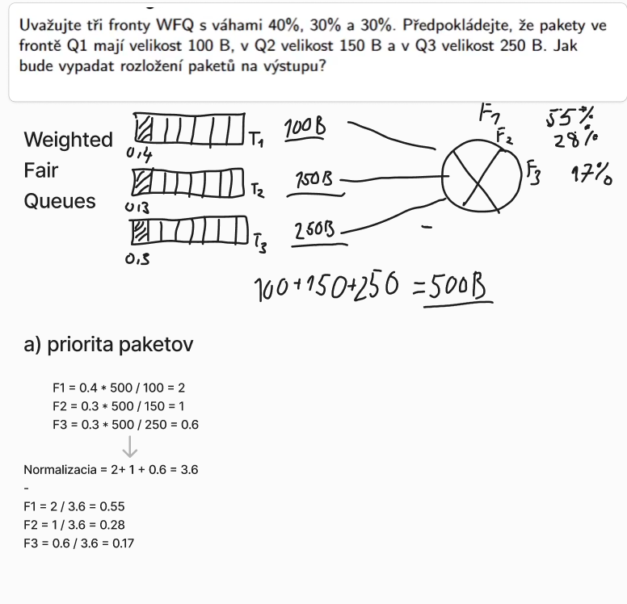
12. 6. Vysvětlete princip modelu tekoucího vědra (leaky bucket). Jak slouží k zajištění QoS?
Představme si vědro s malou dírou na dně. Bez ohledu na to, jakou rychlostí přitéká do vědra voda, rychlost odtékající vody je konstantní a závisí na velikosti díry. Jestliže je vědro plné, tak další přitékající voda se přelije přes okraje a zmizí, tzn. neobjeví se ve výstupním toku u díry na dně vědra.
Mechanismus tekoucího vědra slouží k řízení toku dat, zejména pro rozložení provozu (shaping), a pro ořezání provozu (policing). Poskytuje mechanismus pro vyhlazení vstupního provozu na tok, který má stálý výstup.
12. 8. Popište funkci modelu zásobníku žetonů pro zajištění QoS. Jaké parametry využívá?
Rozšiřuje algoritmus leaky bucket o zásobník žetonů, přičemž každý žeton odpovídá povolení přeposlat jeden byte. Žetony se generují určitou rychlostí a ovlivňují průchod vstupního toku. Umožňuje posílat shluky dat až do velikosti vědra b a to naráz a bez čekání. Krátkodobě může rychlost výstupu přesáhnout požadovanou průměrnou rychlost, velikost povoleného shluku dat je však omezena velikostí vědra. Žetony přesahující kapacitu zásobníku jsou zahazovány.
Parametry:
Průměrná rychlost (CIR) – určuje množství dat, která mohou být odeslána za daný časový interval.
Maximální velikost shluků (CSB) – definuje počet bytů, které mohou být krátkodobě přeneseny přes síť.
Časový interval (T) – definuje dobu trvání shluku.
Rychlost ve špičce (PIR) – definuje maximální počet bitů, které lze přenést během kratší časové periody.
12.12 Popište způsob rezervace přenosového pásma u integrovaných služeb a třídy provozu.
Integrované služby (IntServ)
Integrované služby implementují QoS formou rezervace síťových zdrojů, k čemuž využívají rezervační protokol RSVP. RSVP
RSVP poskytuje rezervaci přenosového pásma v multicastových stromech (to vychází z předpokladu, že většina aplikací, které budou chtít rezervovat pásmo, komunikují přes multicast - např. televizní čí rozhlasové vysílání přes Internet - unicastové vysílání lze zde považovat za speciální typ multicastu).
Žádost o rezervaci provádí přijímací stanice (receiver-oriented).
Příjemce pošle směrem ke zdroji zprávu RESV s žádostí o rezervaci.
Zpráva obsahuje požadavky na kvalitu přenosu FlowSpec: CIR, CBS a PIR
Každý uzel po cestě provede požadovanou rezervaci zdrojů a předá zprávu dál.
Třída provozu - DiffServ
Pakety jsou na hraničních prvcích (koncová zařízení nebo směrovač s podporou DiffServ) označeny buď podle IP precedence nebo podle třídy DSCP (oboje se zapisuje do pole ToS v IP datagramu, případně Priority / Class u IPv6).
Aktivní prvky se dívají do hlaviček příchozích paketů a rozhodují o prioritě a zpracování (prioritnějším paketům se rezervuje více zdrojů, atp.)
Ve zkratce, IntServ rezervuje spíše toky, když si o ně nějaká aplikace zažádá. DiffServ zase funguje na základě předem definovaných úrovní QoS a rezervuje pásmo v závislosti na třídě/prioritě paketů.
12.13 Popište architekturu diferencovaných služeb (DiffServ). Vyjmenujte
základní třídy kvality DiffServ.
Architektura DiffServ tvoří dva typy prvků: Hraniční prvky
např. koncová zařízení nebo nejbližší směrovače, které podporují DiffServ
zde probíhá značení procházejících paketů, konkrétně se nastavuje hodnota DS (Differentiated Services) v hlavičce IP datagramu, u IPv4 se používá pole ToS, u IPv6 pole Priority / Traffic Class, obě 8bitové.
Značení identifikuje třídu provozu, do které paket patří.
Poté, co je paket označen, může být poslan do sítě, vložen do fronty nebo zahozen.
Páteřní prvky
když přijde označený paket na směrovač s podporou DiffServ, je přeposlán na další uzel podle definovaného chování příslušející jeho třídě
na páteřním směrovači se zpracování paketu řídí pouze značením v hlavičce IP
Základní třídy
Běžné (Best Effort) (pakety nemají speciální prioritu a jsou přenášeny s nejnižší prioritou)
Garantované přeposlání (Assured Forwarding, AF) (definuje několik tříd s různými úrovněmi záruky služby)
Prioritní přeposlání (Expedited Forwarding, EF) (nejvyšší priorita pro pakety, které vyžaduje nízké zpoždění a nízkou ztrátu paketů)
CS - Class Selector (8 tříd CS0-CS7, odpovídá IP precedenci, např. CS0 využívá NTP)
12.14 Vysvětlete způsob značení paketů služby DiffServ. Kde probíhá značení
paketů a jak se dále v síti využívá?
Značení paketů DiffServ probíhá na hraničních prvcích, což můžou být koncová zařízení nebo nejbližší směrovače, které podporují diferenciované služby. Nastaví se políčko precedence ToS nebo DSCP (DS) v hlavičce IP. Na základě hodnoty DSCP dojde ke zpracování paketu na aktivních prvcích.
12.15 Popište mechanismus RED. Na čem závisí
pravděpodobnost zahození paketu ve frontě?
RED slouží jako prevence vyhladovění. Pro frontu jsou nastaveny 2 prahy Q_min a Q_max. Při dosažení počtu paketů ve frontě Q_min se náhodně začnou zahazovat nově příchozí pakety. S rostoucím počtem paketů ve frontě se pravděpodobnost zahození zvyšuje až do hodnoty Q_max, kdy je hodnota zahození stoprocentní (každý další příchozí paket je hned zahozen). Dalo by se říct, že má mechanismus RED 3 fáze - stav nezahazování, stav náhodného zahazování a stav úplného zahazování (tzv. tail drop). RED zahazuje pakety bez ohledu na jejich vlastnosti (prioritu apod.) a pravděpodobnost zahození závisi čistě na délce fronty a je popsána lineární funkcí.
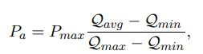
12.16 Mějme vstupní frontu s maximální kapacitou 25 paketů. Pokud fronta
obsahuje pět paketů, začíná se preventivně vyhazovat podle algoritmu RED až
do max. kapacity fronty 1) Jaká je pravděpodobnost, že se zahodí další paket,
pokud fronta obsahuje 11 paketů? 2) Pokud do fronty o délce 12 paketů přijde
shluk šesti paketů a žádný z nich se nezahodí, jaká je pravděpodobnost, že se
zahodí následující paket?
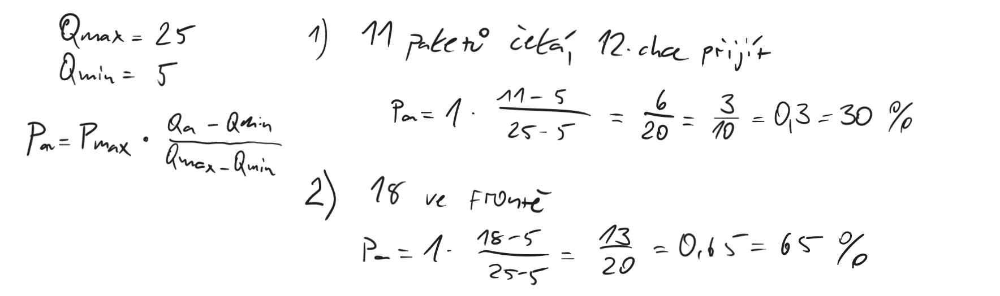
12.17 Vysvětlete problém globální synchronizace TCP a vyhladovění TCP. Jak lze
tyto problémy eliminovat?
Obecně platí, že každá fronta je konečná a lze ji někdy zahltit. Pokud dojde k zaplnění fronty, začnou se zahazovat všechny nově příchozí pakety. Jestliže tyto pakety náleží k toku TCP, mechanismus řízení TCP zmenší přenosové okno a sníží rychlost toku. To způsobí výrazný pokles nároků na přenosové pásmo a následně i uvolnění front. Jakmile se zlepší průchodnost linky, TCP začne zvyšovat rychlost, až dojde opět k zahlcení. Potom se zase sníží rychlost a cyklus se opakuje. Tohle je tzv. problém globální synchronizace TCP
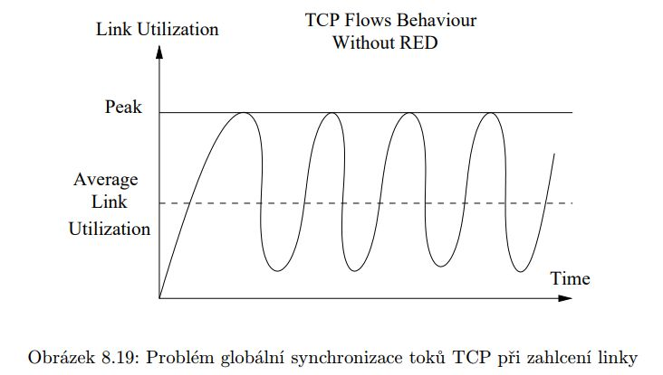
Při zahlcení může nastat také jiný problém, a to ten, že o přenosové pásmo budou soutěžit toky TCP a UDP. UDP nemá mechanismus na řízení rychlosti, takže může donutit TCP toky omezit rychlost tak moc, že je úplně vytěsní. Tento problém se nazývá vyhladovění TCP.
Tyto problémy lze řešit implementací mechanismus pro prevenci zahlcení (RED / WRED), který sleduje nárůst paketů ve všech frontách v systému a jakmile se přesáhne minimální práh Q_min, začnou se náhodně zahazovat přicházející pakety daného toku, kdy pravděpodobnost roste v čase s délkou fronty. Jakmile se dosáhne kritické hodnoty max. prahu [latex] Q_max, dojde ke stoprocentnímu zahazování příchozích paketů.
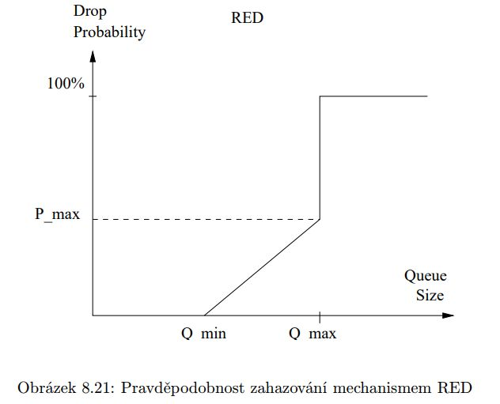
12.18 Porovnejte funkci mechanismů RED a WRED.
Hlavním rozdílem mezi RED a WRED je to, že WRED umožňuje selektivní zahazování paketů na základě jejich priority nebo třídy služby - ToS v IP hlavičce (pravděpodobnost zahození závisí na IP precedenci či DSCP v ToS). RED zahazuje pakety bez ohledu na jejich typ nebo důležitost.
WRED je o něco efektivnější, protože chrání před zahazováním důležitý provoz, což RED neumí;
WRED je ale komplexnější, protože vyžaduje konfigurace prahových hodnot pro různé typy provozu, na což je potřeba složitější správa a plánování
12.7 Uvažujme mechanismus tekoucího vědra o parametrech r = 1,2 Mb/s
(omezení rychlosti) a b = 30 kB (velikost vědra). Vypočítejte, jak dlouho bude trvat poslání paketu o velikosti
1500 B, jaké maximální zpoždění může vzniknout a jak lze zpoždění snížit pod 1
ms?
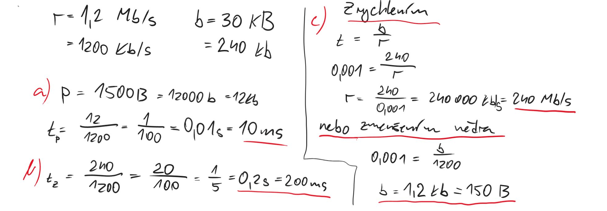
12.9 Uvažujme mechanismus zásobníku žetonů pro omezení provozu na
průměrnou rychlost 2,4 Mb/s, kde mohou shluky dat trvat maximálně 10 ms.
Určete velikost zásobníku CBS, maximální rychlost PIR a dobu přeposlání paketů
o délce 1500 B.
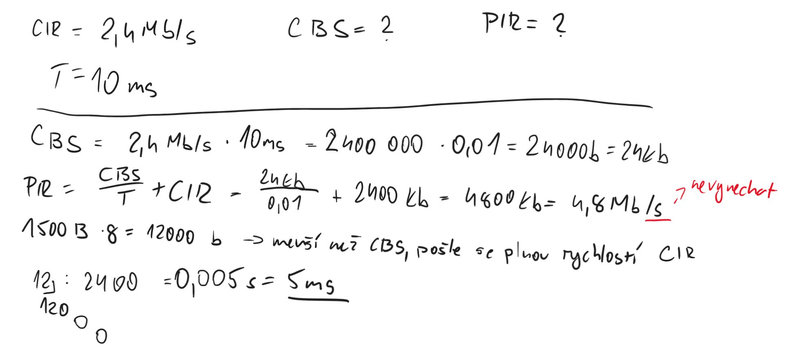
2.1 Definujte protokol. Jakými způsoby lze popsat komunikační protokol?
Je to soubor syntaktických a sémantických pravidel, určujících výměnu dat. Popisuje
vytvoření spojení, adresování, přenos dat, řízení toku, zabezpečení.
Lze ho popsat formálně a neformálně. Formálně například pomocí gramatik, Petriho sítí,
konečných automatů. Neformálně potom třeba RFC popisem.
Konkrétním příkladem je třeba TCP s posloupností zpráv, se kterými se lze setkat v podstatě
skoro kdekoliv na internetu.
2.10 Zapište kostru programu pro vysílání a příjem broadcastu s využitím
schránek BSD.
int clientSocket = socket(IF_NET, SOCK_DGRAM, 0); if(clientSocket == -1) error();
// povoleni prenosu broadcastu int on = 1; setsockopt(clientSocket, SOL_SOCKET, SO_BROADCAST, &on, sizeof(on));
recvfrom(); close(clientSocket);
2.11 Zapište kostru program pro vysílání a příjem multicastu s využitím
schránek BSD.
int clientSocket = socket(AF_INET, SOCK_DGRAM, 0); if(clientSocket == -1) // kontrola vytvoreni socketu exit();
2.12 Vysvětlete, co jsou spojované schránky UDP a jaký je jejich význam.
Ukažte, čím se liší od klasických schránek UDP.
Spojované schránky (connected sockets) v kontextu UDP jsou schránky (sockets), které byly
explicitně "připojeny" k určité vzdálené adrese a portu pomocí funkce connect(). To se
liší od klasických schránek UDP, které nevyužívají connect() a místo toho používají
sendto() a recvfrom() pro každou operaci odesílání a přijímání dat, přičemž specifikují
cílovou adresu a port při každém volání.
2.12 Vysvětlete, co jsou spojované schránky UDP a jaký je jejich význam. Ukažte, čím se liší od klasických schránek UDP.
2.12.1 Význam
Po volání connect() na socket se cílová adresa a port nastaví jednou pro veškerou
budoucí komunikaci. To znamená, že lze používat send() a recv() místo sendto() a
recvfrom(), což zjednodušuje kód. Také je výhoda v tom, že se nemusí neustále
poskytovat adresa.
U spojovaných schránek je také možné dostávat chybové zprávy související s cílovou adresou,
což není u běžných schránek UDP možné, protože protokol UDP sám o sobě neposkytuje
zpětnou vazbu o úspěšnosti doručení.
2.12 Vysvětlete, co jsou spojované schránky UDP a jaký je jejich význam. Ukažte, čím se liší od klasických schránek UDP.
2.12.2 Rozdíl oproti klasickým schránkám
U spojovaných schránek je použita funkce connect() pro nastavení cílové adresy a portu,
zatímco u klasických schránek UDP se cílová adresa a port specifikují při každém volání
sendto() a recvfrom().
Spojované schránky mohou používat send() a recv() pro odesílání a přijímání dat, což
není možné u klasických schránek UDP, kde se používá sendto() a recvfrom().
U spojovaných schránek je možné dostávat specifické chyby související s přenosy, což u
klasických schránek není možné.
Klasické schránky poskytují vyšší flexibilitu v tom, že mohou komunikovat s různými cíli bez
potřeby znovu nastavovat schránku, zatímco spojované schránky jsou omezeny na
komunikaci s jednou cílovou adresou nebo portem.
2.2 Pro konkrétní síťovou službu, například přenos souborů, navrhněte
komunikační protokol. Definujte příkazy a povolené komunikační sekvence.
Navržený protokol formálně popište.
Protokol si nazvěme například Basic File Transfer Protocol (BFTP) a bude používat například
port 4000 (TCP).
Příkazy budou třeba:
• CONNECT : Navázání spojení se serverem.
• LIST: Získání seznamu souborů dostupných na serveru.
• UPLOAD : Odeslání souboru na server.
• DOWNLOAD : Stažení souboru ze serveru.
• DELETE : Smazání souboru na serveru.
• QUIT: Ukončení spojení se serverem.
Komunikační sekvence bude:
1. Navázání spojení:
Klient odešle CONNECT s IP adresou a portem serveru. Server odpovídá potvrzením
spojení (třeba ACK).
2. Autentizace:
Klient by mohl být vyzván k zadání uživatelského jména a hesla.
3. Interakce:
Klient po spojení se serverem posílat příkazy LIST, UPLOAD, DOWNLOAD, DELETE.
Server na tyto zprávy odpovídá výsledkem operace nebo chybovou hláškou.
4. Ukončení spojení:
Klient odešle zprávu QUIT a server zprávu potvrdí ukončením spojení.
Veškerá komunikace by měla probíhat zabezpečeně, tedy třeba pomocí TLS (zastaralé) nebo
pomocí TLS. Pomohlo by také mít možnost klienta nějak autentizovat (jméno + heslo).
2.3 Definujte pojmy klient a server, popište jejich funkci. Pro základní síťové služby (například e-mail, DNS, VoIP, apod.) uveďte příklady klienta a serveru.
Server poslouchá na daném portu a čeká na požadavky od klientů, které následně přijme a
zpracuje. Klient zasílá žádosti o nějakou síťovou službu.
V systému DNS bývá klientem obvykle DNS Resolver a servery jsou primární, sekundární a
záložní servery DNS. DNS poslouchá a odpovídá na žádosti resolverů.
Ve VoIP jsou klienty jednotlivá koncová telefonní zařízení. Tedy třeba IP telefony a serverem
je VoIP ústředna.
U emailu je klientem MUA (Mail User Agent), který posílá zprávy protokolem SMTP na MTA
(Mail Transfer Agent), který je serverem. Ten potom zprávy posílá zprávy na konkrétní MDA
(Mail Delivery Agent), který je také serverem. Klient potom stahuje data pomocí protokolu
POP3 nebo IMAP. Klientem tedy může být třeba Mozilla Thunderbird a serverem třeba
Microsoft Exchange Server.
2.4 Popište způsob přenosu dat mezi dvěma aplikacemi na jednotlivých
vrstvách modelu TCP/IP při použití (i) unicastu, (ii) multicastu a (iii) broadcastu.
Ukažte, jak se vytváří PDU na jednotlivých vrstvách a inicializují hodnoty
adresáta a odesilatele.
Při každém z režimů (unicast, multicast, broadcasr) se data balí do Protokolových Datových
Jednotek (PDU) (Protocol Data Unit) na každé vrstvě modelu TCP/IP.
2.4 Popište způsob přenosu dat mezi dvěma aplikacemi na jednotlivých
vrstvách modelu TCP/IP při použití (i) unicastu, (ii) multicastu a (iii) broadcastu.
Ukažte, jak se vytváří PDU na jednotlivých vrstvách a inicializují hodnoty
adresáta a odesilatele.
2.4.1 Unicast
Unicast je komunikace 1-on-1, kde jdou data odesílána z jedné koncové stanice (odesílatele)
přímo na druhou koncovou stanici (příjemce).
• Aplikační vrstva (L7): Data jsou připravena aplikací. PDU je obvykle nazýváno
"zprávou" nebo "daty".
• Transportní vrstva (L4): Data jsou zapouzdřena do segmentů (TCP) nebo datagramů
(UDP). Zde se nastavují porty odesílatele a příjemce.
• Internetová vrstva (L3): Segment/datagram je zapouzdřen do IP paketu. Nastavují se
zdrojová a cílová IP adresa.
• Vrstva síťového rozhraní (L2): IP paket je zapouzdřen do rámce (např. Ethernet), kde
se přidají MAC adresy odesílatele a příjemce.
2.4 Popište způsob přenosu dat mezi dvěma aplikacemi na jednotlivých vrstvách modelu TCP/IP při použití (i) unicastu, (ii) multicastu a (iii) broadcastu. Ukažte, jak se vytváří PDU na jednotlivých vrstvách a inicializují hodnoty adresáta a odesilatele.
2.4.2 Multicast
Multicast je komunikace 1-to-many, kde data jsou odesílána z jednoho zdroje na mnoho cílů
v síti.
• Aplikační vrstva (L7): Stejně jako u unicastu.
• Transportní vrstva (L4): Stejně jako u unicastu, ale může být použit specifický port
pro multicastové služby.
• Internetová vrstva (L3): IP paket má zdrojovou IP adresu odesílatele a speciální
multicastovou IP adresu jako cílovou.
• Vrstva síťového rozhraní (L2): Používá se multicastová MAC adresa, která odpovídá
multicastové IP adrese.
2.4 Popište způsob přenosu dat mezi dvěma aplikacemi na jednotlivých vrstvách modelu TCP/IP při použití (i) unicastu, (ii) multicastu a (iii) broadcastu. Ukažte, jak se vytváří PDU na jednotlivých vrstvách a inicializují hodnoty adresáta a odesilatele.
2.4.3 Broadcast
Broadcast je komunikace 1-to-all, kde data jsou odesílána z jednoho zdroje na všechna
zařízení v síti.
• Aplikační vrstva (L7): Stejně jako u unicastu.
• Transportní vrstva (L4): Stejně jako u unicastu, ale může být použit specifický port
pro broadcastové služby.
• Internetová vrstva (L3): IP paket má zdrojovou IP adresu odesílatele a broadcastovou
IP adresu jako cílovou (např. 255.255.255.255 pro lokální broadcast).
• Vrstva síťového rozhraní (L2): Používá se broadcastová MAC adresa
(ff:ff:ff:ff:ff:ff).
2.5 Co se stane, když je paket při přenosu zahozen? Porovnejte chování
unicastu, multicastu a broadcastu. Čím se liší detekce chyb u IPv4 a IPv6?
Mimo typu přenosu je také důležité vědět, při jakém použitém protokolu k zahození došlo
(TCP nebo UDP).
2.5 Co se stane, když je paket při přenosu zahozen? Porovnejte chování unicastu, multicastu a broadcastu. Čím se liší detekce chyb u IPv4 a IPv6?
2.5.1 Unicast
TCP (Transmission Control Protocol) je velmi spolehlivý. Pokud TCP zjistí ztrátu paketu
(například na základě chybějících potvrzení), automaticky paket znovu odesílá. Toto je
zajištěno mechanismem potvrzování a kontrolou časových limitů.
UDP (User Datagram Protocol) na rozdíl od TCP tolik spolehlivý není. Pokud je UDP paket
zahozen, odesílatel o tom není informován a paket se neodesílá znovu.
2.5 Co se stane, když je paket při přenosu zahozen? Porovnejte chování unicastu, multicastu a broadcastu. Čím se liší detekce chyb u IPv4 a IPv6?
2.5.2 Multicast a broadcast
TCP se v tomto případě nepoužívá, protože lze nelze jednoznačně specifikovat jeden koncový
bod spojení.
UDP stejně jako u unicastu nemá žádnou záruku o doručení paketu. Pokud se nějaký paket
ztratí, znovu se neposílá. Aplikace, která je zodpovědná za vysílání multicastu nebo
broadcastu obvykle nepřijímá žádnou zpětnou vazbu o úspěšnosti doručení paketů.
2.5 Co se stane, když je paket při přenosu zahozen? Porovnejte chování unicastu, multicastu a broadcastu. Čím se liší detekce chyb u IPv4 a IPv6?
2.5.3 Detekce Chyb v IPv4 vs IPv6
IPv4 používá hlavičku, která obsahuje základní kontrolu chyb prostřednictvím kontrolního
součtu hlavičky. Tento kontrolní součet zajišťuje, že hlavička paketu nebyla poškozena během
přenosu. Pokud je zjištěna chyba v hlavičce, paket je zahozen.
IPv6 odstranilo kontrolní součet z hlavičky IP, což znamená, že kontrola chyb je zcela v režii
vyšších vrstev (např. TCP nebo UDP). Důvodem je snížení zpracovatelské zátěže na síťových
zařízeních a předpoklad, že moderní síťová zařízení jsou méně náchylná k chybám. IPv6 také
zavádí lepší podporu pro volitelné rozšíření hlaviček, které mohou zahrnovat další formy
detekce a opravy chyb.
2.6 Zapište kostru klienta serveru TCP s využitím schránek BSD.
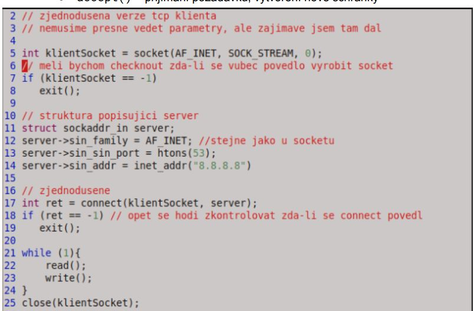
2.7 Ukažte, jak lze implementovat konkurentní server TCP s pomocí funkce
fork().
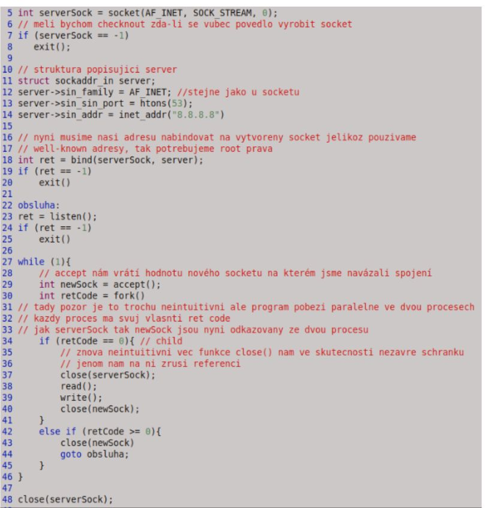
2.8 Zapište kostru klienta a server UDP s využitím schránek BSD.
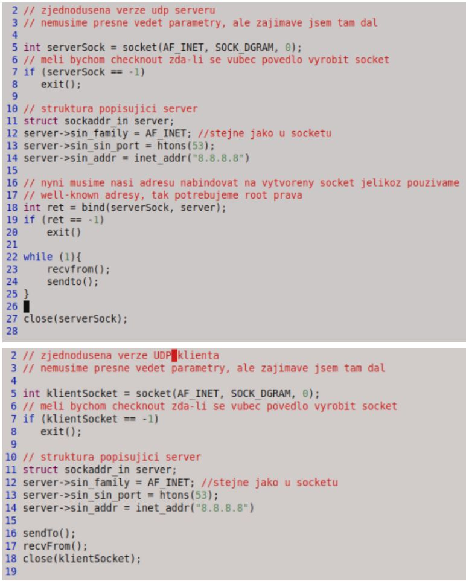
2.9 Ukažte, jak lze implementovat konkurentní server UDP. Popište možné
způsoby řešení.
Bude vypadat prakticky stejně, jako konkurentní TCP server, jenom budou pozměněna jména
některých funkcí.
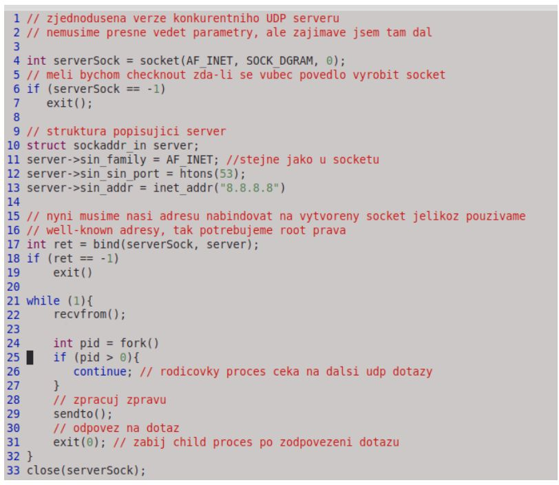
3.1 Definujte multicastové vysílání. Uveďte, jaké adresy se používají na 2. a 3.
vrstvě pro IPv4 a IPv6.
Multicastové vysílání je metoda v síťové komunikaci, která umožňuje vyslat data z jednoho
zdroje na mnoho cílových zařízení současně.
Multicast je velmi užitečný v aplikacích, kde stejná data potřebují být distribuována na
mnoho příjemců, například při streamování videa, konferenčních hovorech, distribuci
softwarových aktualizací a dalších.
3.1 Definujte multicastové vysílání. Uveďte, jaké adresy se používají na 2. a 3.
vrstvě pro IPv4 a IPv6.
3.2 Adresy na L2
IPv4 multicastové vysílání na linkové vrstvě využívá speciální rozsah MAC adres. Tyto adresy
začínají řadou 01-00-5E následovanou 23 bity ze 32-bitové multicastové IP adresy.
Posledních 23 bitů IPv4 adresy je mapováno přímo na MAC adresu, přičemž prvních 9 bitů IP
adresy je ignorováno, protože multicastové MAC adresy mohou reprezentovat pouze 23 bitů.
Pro IPv6 multicast používají MAC adresy rozsah 33-33 následovaný posledními 32 bity
multicastové IPv6 adresy. To umožňuje přímé mapování mezi IPv6 multicastovou adresou a
linkovou vrstvou.
3.1 Definujte multicastové vysílání. Uveďte, jaké adresy se používají na 2. a 3. vrstvě pro IPv4 a IPv6.
3.2.1 Adresy na L3
IPv4 Multicastové IP adresy jsou v rozsahu 224.0.0.0 až 239.255.255.255.
Multicastové adresy v IPv6 začínají prefixem FF00::/8.
3.10 Ukažte, čím se liší multicastový přenos od unicastu a broadcastu.
Unicast je přenos pouze jeden na jednoho. Je nejběžnější formou síťové komunikace. Je
efektivní pro přímou formu komunikace mezi dvěma zařízeními, ale o to méně efektivní je při
posílaní dat na více zařízení.
Broadcast je zase přenos z jednoho na všechna zařízení. Umožňuje tedy posílat data
z jednoho na všechna zařízení v síti. Je efektivní pro rychlé doručení zprávy všem zařízením
ve stejné síti, ale může způsobovat větší síťovou zátěž.
Multicast umožňuje posílat data z jednoho na mnoho zařízení, která si sama vybrala, zda
budou data přijímat nebo ne. Používá specifický rozsah adres. Oproti broadcastu je výrazně efektivnější, protože tolik nezatěžuje síť a zařízení, která si zprávy nepřejí dostávat se ze
skupiny odpojí nebo se do ní nepřipojí.
3.11 Zapište kostru programu pro vysílaní a příjem multicastových dat
s využitím schránek BSD.
int main() { int sockfd; struct sockaddr_in multicast_addr;
// Vytvoření socketu sockfd = socket(AF_INET, SOCK_DGRAM, 0); if (sockfd < 0) { perror("Vytvoření socketu selhalo"); exit(EXIT_FAILURE); }
// Vysílání dat char *message = "Pozdrav z multicastového vysílače!"; if (sendto(sockfd, message, strlen(message), 0, (struct sockaddr*)&multicast_addr, sizeof(multicast_addr)) < 0) { perror("odesílání selhalo"); exit(EXIT_FAILURE); }
printf("Zpráva byla odeslána.\n");
close(sockfd); return 0; }
3.12 Vysvětlete, jaké síťové aplikace využívají přímý přístup k paketům na L2.
Jakými prostředky lze přímý přístup k L2 implementovat?
• Síťové analyzátory (Wireshark, tcpdump, …)
• síťové brány a firewally,
• síťová vizualizace,
• protokolové stacky.
Pro implementaci přímého přístupu k L2 vrstvě lze použít třeba:
• RawSockets,
• Libpcap/WinPcap,
• Data Plane Development Kit
3.13 Zapište kostru programu pro čtení a zpracování dat na L2 s využitím
knihovny Libpcap.
???
3.14 Vysvětlete, co je filtr BPF, jak funguje a k čemu se používá. Uveďte příklady
filtrování pomocí BPF.
Filtr BPF (Berkeley Packet Filter) je mechanismus pro filtraci síťového provozu na úrovni jádra
operačního systému.
BPF umožňuje efektivní zpracování paketů tím, že filtruje síťový provoz již na úrovni jádra. To
znamená, že pouze pakety odpovídající určitým kritériím jsou předány uživatelskému
prostoru aplikace (např. analyzátoru paketů jako je tcpdump nebo Wireshark).
3Využívá jednoduchý virtuální stroj a soubor instrukcí pro popis, jaké pakety mají být
zachyceny. Tyto instrukce určují, jak má být každý paket analyzován a zda má být předán
aplikaci.
Používá se pro:
• Zachytávání paketů,
• selektivní diagnostiku,
• bezpečnostní monitorování.
3.14 Vysvětlete, co je filtr BPF, jak funguje a k čemu se používá. Uveďte příklady filtrování pomocí BPF.
3.14.1 Příklady použití
Zachycení veškerého http provozu:
tcp port 80
Zachycení provozu z určité IP adresy:
src host 192.168.1.1
Kombinovaný filtr pro zachycení specifického provozu:
ip host 10.1.2.3 and tcp portrange 20-22
Zachycení ARP provozu:
arp
3.15 Ukažte, jak lze využít knihovnu Scapy pro čtení a vysílaní dat na L2.
Demonstrujte možnosti knihovny Scapy např. při vytvoření a odeslání paketu
DNS.
from scapy.all import sniff
# Funkce pro zpracování každého paketu def handle_packet(packet): print(packet.summary())
# Sniffing paketů na L2 sniff(prn=handle_packet, count=10)
Scapy získávání dat _____________________________________________
from scapy.all import Ether, IP, UDP, DNS, DNSQR, sendp
# Vytvoření IP vrstvy ip = IP(dst="8.8.8.8") # Cílová adresa Google DNS
# Vytvoření UPD vrstvy upd = UDP(dport=53) # Port pro DNS
# Vytvoření DNS dotazu dns = DNS(rd=1, qd=DNSQR(qname="www.example.com"))
# Kombinace všech vrstev do jednoho paketu packet = eth / ip / udp / dns
# Odesílání paketu sendp(packet)
3.16 Porovnejte rozdíly při použití schránek BSD a knihovny Libpcap pro
implementaci síťové komunikace.
• Schránky BSD jsou vhodné pro implementaci standardní síťové komunikace (např.
webové servery, klienty, chat aplikace), zatímco Libpcap je vhodná pro pasivní
monitorování a analýzu síťového provozu (např. síťové analyzátory, detekce
podezřelého provozu).
• Schránky BSD umožňují vývojářům vytvářet, posílat a přijímat síťová data, zatímco
Libpcap poskytuje nástroje pro zachytávání a analýzu dat procházejících sítí.
• Schránky BSD pracují na vyšší úrovni (L3 a L4), zatímco Libpcap pracuje na nižší úrovni
(L2).
3.3 Popište princip mapování multicastových adres L3 na adresy L2.
Vysvětlete problém překrývání adres a uveďte, jaký vliv má na zpracování
multicastu.
U IPv4 se adresy nacházejí v rozsahu 224.0.0.0 až 239.255.255.255.
Když se IP adresa mapuje na MAC adresu (L2), používá se speciální rozsah MAC adres
začínající 01-00-5E.
Z 32-bitové multicastové IP adresy se převezme pouze dolních 23 bitů a mapují se na dolní
23 bitů multicastové MAC adresy. Horních 9 bitů IP adresy se ignoruje. Tedy 28-bitový rozsah
multicastových IPv4 adres je mapován na 23-bitový rozsah MAC adres.
Multicastové IP adresy v IPv6 začínají prefixem FF00::/8. K mapování na MAC adresy se
používá rozsah 33-33, následovaný posledními 32 bity IPv6 adresy
3.3 Popište princip mapování multicastových adres L3 na adresy L2. Vysvětlete problém překrývání adres a uveďte, jaký vliv má na zpracování multicastu.
3.3.1 Překrývání adres a vliv
Kvůli tomu, že se používá pouze část IP adresy na mapování, může dojít k situaci, kdy různé
adresy budou mapovány na stejnou MAC adresu. Toto se děje především u IPv4.
To může vést k tomu, že síťové zařízení přijímá data určená pro jiné multicastové skupiny,
protože MAC adresa, na kterou naslouchá, odpovídá více než jedné multicastové IP adrese.
To může způsobit neefektivitu v síti, protože síťová zařízení musí zpracovávat více dat, která
pro ně nejsou určena.
3.4 Ukažte, jak lze omezit multicastový přenos.
Dosah se omezuje pouze hodnotou TTL v IP hlavičce. (Nastavime-li hodnotu TTL rovnu 2,
víme že se multicast nedostane dále než přes 2 routery, pak bude TTL 0 a paket se zahodí).
Přijímání paketů se odvíjí od členství ve skupině – stačí se odhlásit z příjmu za pomocí IGMP
(IPv4), případně MLD (IPv6) zprávy.
3.4 Ukažte, jak lze omezit multicastový přenos.
3.4.1 Diskutujte problém autentizace a autorizace multicastového přenosu, tzn. přenos
multicastu pouze oprávněným zařízením.
Bez autentizace může být síť náchylná k útokům, jako je IP spoofing, kdy útočník může
vydávat za legitimní zdroj multicastových zpráv. Také je vhodné nějak spravovat seznam
členů v multicastové skupině seznam si aktualizovat, abychom zprávy mohli posílat
zájemcům a zároveň je neposílat těm zařízením, které o zprávy (už) nemají zájem.
Jedním z možných řešení by bylo šifrování, čímž by se zajistilo, že i kdyby zprávy získalo
neoprávněné zařízení, nemohlo by bez správného klíče zprávy dešifrovat.
Jiným řešením by bylo třeba zprávy podepisovat případně jim dávat certifikáty, aby bylo
možné ověřit identitu zdroje. Tím by se zabránilo IP spoofingu a zajistila by se autentizace
zdroje.
Řešením správy uživatelů je protokol IGMP a MLD, které právě obsahují zprávy, kterými se
zařízení mohou dostat do multicastových skupin. Zároveň zařízení těmito zprávami řeknou
směrovačům, že o komunikaci mají zájem a směrovače ji tak budou posílat pouze tam, kde je
potřeba.
3.5 Popište průběh multicastové komunikace ze strany vysílající i přijímající
stanice.
3.5.1 Připojení do multicastové skupiny
Přijímající stanice (klient) pošle zprávu IGMP Membership Report na IP adresu multicastové
skupiny. L2 přepínač následně předá zprávu na všechny porty nebo jenom na vybrané porty
(IGMP snooping). Vysílající stanice posílá data na multicastovou adresu.
3.5 Popište průběh multicastové komunikace ze strany vysílající i přijímající stanice.
3.5.2 Správa multicastových skupin
Směrovač pravidelně posílá zprávu IGMP Membership Query. Směrovač se dotazuje, kdo je
členem multicastové skupiny. Na to aktivní klienti (přijímající zařízení) odpovídají zprávou
IGMP Membership Report.
3.5 Popište průběh multicastové komunikace ze strany vysílající i přijímající stanice.
3.5.3 Odpojení od multicastové skupiny
Přijímající stanice (klient) pošle zprávu IGMP Leave Group, kterou posílá všem směrovačům.
Směovač následně zprávou IGMP Membership Query zjišťuje, kdo zůstává v dané skupině. L2
přepínač potom přestane posílat multicastová data na port, odkud Leave zpráva přišla.
3.6 Ukažte, jak se pomocí protokolu IGMP připojují či odpojují zařízení do či
z multicastové skupiny.
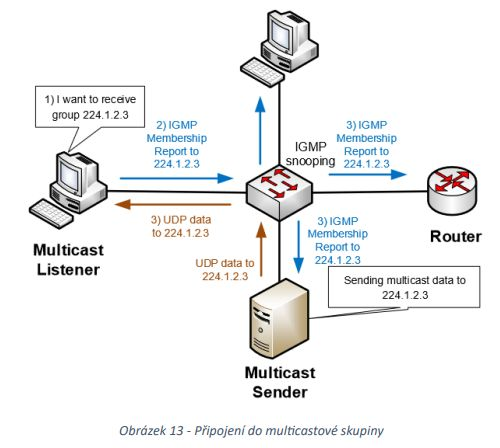
Přijímající zařízení pošle zprávu IGMP Membership Report s IP adresou multicastu.
Přepínače následně tuto zprávu posílají do všech směrů (IGMP snooping), až se zpráva
dostane k vysílací stanici, která následně začne posílat UDP data stanici, která zažádala o
připojení.
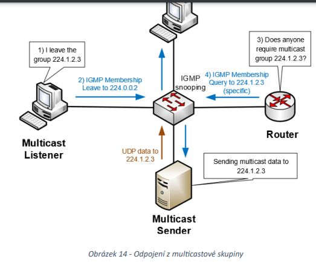
Pro odpojení z multicastové skupiny odesílá klient zprávu IGMP Leave Group všem
směrovačům. Směrovač potom zprávou IGMP Membership Query zjišťuje, kdo má zájem o o
to zůstat ve skupině. Následně Vysílající stanice přestane posílat UDP data na adresy, které
nemají zájem o data vysílající stanice.
3.7 Porovnejte komunikaci MLD a IGMP
Zásadní rozdíl je v tom, že IGMP je pro IPv4 a MLD je pro IPv6.
IGMP je založen na speciálních zprávách, zatímco MLD je zaintegrován do ICMPv6.
Co se týče funkcionality a schopnosti, tak přestože oba protokoly slouží k podobnému účelu,
MLD (případně MLDv2) má vylepšené schopnosti pro práci se zdrojově specifickým
multicastem, což je důležité pro IPv6, které klade více důraz na efektivitu a škálovatelnost.
3.8 Vysvětlete, co je to IMGP/MLD snooping, jak a na jakých zařízeních se
implementuje a k čemu slouží.
Switche s IGMP/MLD snoopingem naslouchají IGMP/MLD komunikaci mezi hosty a
směrovači a zjišťují, která zařízení jsou členy kterých multicastových skupin.
Na základě těchto informací switch "ví", na které porty má doručit konkrétní multicastový
provoz. Multicastový provoz je tak omezen pouze na ty porty, kde jsou připojeni členové
příslušné multicastové skupiny, místo odesílání provozu na všechny porty.
3.8 Vysvětlete, co je to IMGP/MLD snooping, jak a na jakých zařízeních se
implementuje a k čemu slouží.
3.8.1 Jak a kde se implementuje
IGMP a MLD snooping jsou implementovány na síťových switchech, zejména na těch, které
jsou určeny pro použití v multicastově intenzivních prostředích, jako jsou korporátní sítě,
IPTV, a další aplikace.
Implementace zahrnuje analýzu IGMP a MLD zpráv pro zjištění, které porty switchů jsou
spojeny s hosty, kteří se chtějí připojit k multicastovým skupinám.
3.8 Vysvětlete, co je to IMGP/MLD snooping, jak a na jakých zařízeních se implementuje a k čemu slouží.
3.8.2 K čemu slouží
• Pomáhá zabránit zbytečnému šíření multicastového provozu na celou síť. Tím se
snižuje síťová zátěž a zvyšuje efektivita multicastového přenosu.
• Omezením multicastového provozu pouze na porty s oprávněnými příjemci se také
zlepšuje celkový výkon sítě.
• Pomáhá zamezit neautorizovanému přístupu k multicastovému provozu tím, že
zajistí, že multicastové datové toky jsou odesílány pouze na porty, kde jsou připojeny
autorizované zařízení.
3.9 Uveďte příklad síťových služeb, které používají multicast. Co by se stalo,
kdyby LAN nepodporovala multicastové přenosy?
Multicast používají:
• IPTV a Live Streaming služby,
• videokonferenční služby,
• ditribuce softwarových akutalizací,
• finanční aplikace (burzy).
Kdyby LAN nepodporovala multicastové přenosy, musela by se data posílat prostřednictvím
broadcastu, což by silně zatěžovalo síť a její zařízení. To jde ruku v ruce s vyššími nároky na
servery, které by musely zpracovávat výrazně víc dat.
Také by se snížila efektivita, protože by posílání dat bylo pomalejší a navýšilo by se zpoždění.
To by mohlo také značně zhoršit uživatelskou přívětivost, protože videokonference by měly
větší latenci, stejně jako streamy nebo by byla výrazně snížená obrazová a zvuková kvalita.
3DES
Triple Data Encryption Standard
4.1 Vyjmenujte a popište bezpečnostní rizika při provozování počítačové
komunikace. Uveďte příklady útoků a jejich důsledky.
• Odposlech přenášených dat (pasivní odposlech, sniffing) – únik citlivých informací, Man-in-the-Middle, odposlech komunikace.
• Neautorizovaný přístup k zařízení (průnik do systému, prolomení hesel) – krádež dat,
změny konfigurace, sabotáže, těžba kryptoměn.
• Podvržení zpráv (Man-in-the-middle útoky, session hijacking) – získání přístupu k
účtům, krádež identity, DNS spooning.
• Falšování identity (phishing, spoofing) – získání přístupu k účtům, finanční ztráty,
krádež identity, SNMP falšování hlavičky emailu.
• Útok na systém – zahlcení zdrojů (DoS (Denial of Service), DDoS (Distributed Denial
of Service)) – nedostupnost služeb.
• Škodlivý software: viry, trojské koně, vyděračský software – ztráta nebo
poškození dat, zneužití systémových zdrojů, výkupné za dešifrování dat.
4.10 Vysvětlete princip algoritmu Diffie-Hellman. Uveďte, k čemu se používá.
Vyjmenujte síťové aplikace, které tuto techniku využívají při zabezpečení
síťového provozu.
- Asymetrický algoritmus pro vytvoření tajného klíče přes nezabezpečený komunikační kanál - Algoritmus je založený na umocňování čísle, kde platí, že (AB)C = (AC)B - Používá se při IPsec, SSL/TLS, SSH - Nevyžaduje šifrování
- Princip výpočtu: (zb mod m)a mod m = (za mod )b mod m
Příklad výměny klíčů: - Uzly A a B se dohodnou na použitém modulu m = 23 a základu z = 5 - Uzel A si zvolí tajné číslo a = 6 - Uzel A pošle úzlu B hodnotu x = za mod m (x = 56 mod 23 = 8) - Uzel B si zvolí tajné číslo b = 15 - Uzel B pošle uzlu A hdonotu y = zb mod m (x = 515 mod 23 = 19) - Uzel A určí klíč k = ya mod m (k = 196 mod 23 = 2) - Uzel B určí spočítá klíč k = xb mod m (k = 815 mod 23 = 2)
4.11 Popište zabezpečení počítačové komunikace pomocí TLS. Popište fázi
ustanovení spojení a vysvětlete, které informace si strany vyměňují. Jaká jsou
omezení technologie TLS?
- Jedná se o zabezpečení nad transportní vrstvou mezi L4 a L7 - Zabezpečuje přenos dat a protokolů aplikační vrstvy - Zajištuje důvěrnost, integritu dat a autentikaci klienta či serveru
Použití: - HTTPs, SMTPs, POPs, IMAP4s
Zabezpečení: - Šifrování: obě strany si vygenerují tajný klíč (pre-master key), který si vymění pomocí RSA nebo DH - Autentizace: Komunikující strany si vymění certifikáty, které ověří - Integrita dat: šifrované data obsahují hash dat - šifrované data obsahují sekvenční číslo jako prevenci proti přehrání dat - před zašifrováním můžou být data komprimovaná
Přenášení TCP data jsou rozděleny do bloků (records): - Handshake records: Hello Request, Client/Server Hello, Certificate, Server Key Exchange, Server Hello Done, Certifikate Verify, Client Key Exchange, Finished - Change Cipher Spec records - Alert records, application data records
Omezení TLS: - Vyžaduje ověření certifikátů serveru, jinak je možný útok typu MITM - Nezajišťuje autentikaci odesílatele: to musí zajistit vyšší vrstva - Problém s implementací na zařízeních s omezenými prostředky: čidla, senzory, IoT - Problém při správě sítě: monitorovací operace, tunelování přes SSL
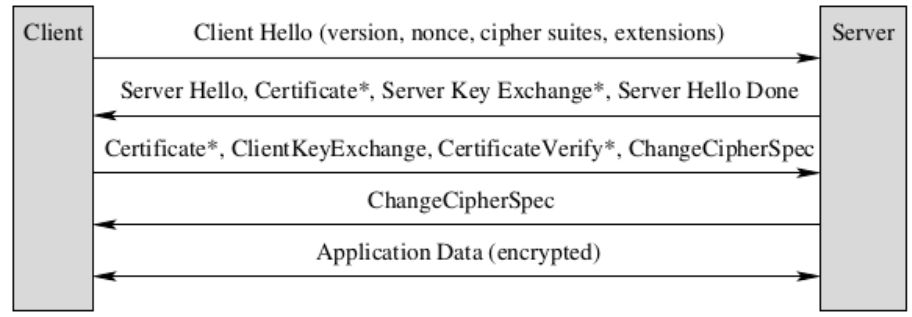
Komunikace mezi klientem a serverem TLS - obě strany se musí dohoudnout na verzi protokolu, šifrovacím algoritmu, autentizačním algoritmu a vyměnit si relační klíče pro šifrování - Autentizace může být jednostranná (jen server) nebo oboustranná - Pro výměnu klíčů se používá asymetrická kryptografie: RSA a DH - Pro šifrování se používá symetrická kryptografie - IANA definuje sady algoritmů pro zabezpečení, tzv. TLS Cipher Suites
4.12 Vysvětlete princip zabezpečení IPSec. Ukažte, na jaké vrstvě modelu
TCP/IP je zabezpečení IPSec definováno a jak pracuje. Vysvětlete různé typy
režimů použití a způsoby zapouzdření.
- IPSec zabezpečuje přenos pro IPv4 a IPv6 - zajištuje autentizaci, šifrování a integritu dat - Využívá AH a ESP protokoly - 2 režimy: Tunelovací a Transportní
AH (Authentication Header) - Chrání datagram IP pomocí kryptografického hashe HMAC-MD či HMAC-SHA - hash se počítá nad položkami hlavičky, které se během cesty nemění - zajištujě autenzitaci, integritu dat a chrání proti přehrání - AH může být použito samostatně či v kombinaci ESP
ESP (Encapsulation Security Payload) - Zapouzdřuje a chrání data IP datagramu - Zajištujě Autentizaci, Důvěrnost a integritu dat, chrání proti přehrání - Nezajišťuje ochranu Vnější IP hlavičky - Pro šifrování používá DES, 3DES, AES - Pro autentizaci a integritu dat využívá HMAC-MD5 a HMAC-SHA
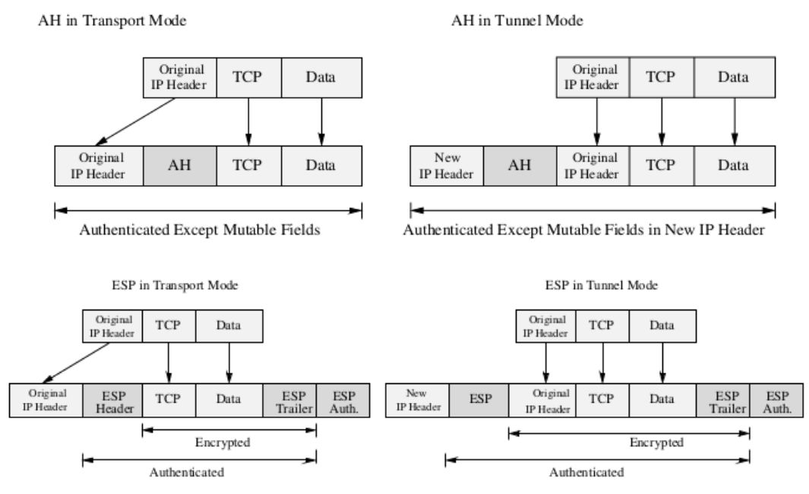
Transportní režim - Je použita původní IP hlavička, mutable fieldy nejsou chráněné Tunelovací režim - Celý IP datagram je zabalený do nového IP datagramu a ten je chráněný AH, tzn. jsou chráněné všechny fieldy původní IP hlavičky, data i immutable fieldy nové vnější hlavičky
4.13 Vysvětlete, co je to bezpečná relace (Security Association, SA) u IPSec, jak
vzniká, co obsahuje a k čemu se používá.
Security Association (SA) v kontextu IPSec je základním konceptem pro správu a udržování
bezpečnostních politik a klíčů v síťové komunikaci. Je to dohoda mezi dvěma nebo více
komunikačními stranami, která určuje, jak bude komunikace zabezpečena.
Vznik
SA je obvykle vytvořena během procesu návrhu a konfigurace sítě, kdy jsou definována
pravidla a parametry pro zabezpečenou komunikaci mezi dvěma koncovými body.
V mnoha případech, zejména při použití protokolu IKE (Internet Key Exchange), dochází k
automatickému vytvoření SA a výměně klíčů mezi zařízeními.
Obsah
• Šifrovací Algoritmy: Určuje, jaké algoritmy se používají pro šifrování a dešifrování dat.
• Algoritmy Autentizace: Specifikuje metody, které se používají pro ověření integrity
dat.
• Klíče: Obsahuje informace o klíčích používaných pro šifrování a dešifrování.
• Režim Šifrování: Určuje, zda se používá tunelový nebo transportní režim.
• Parametry Protokolů AH a ESP: Definuje konkrétní nastavení pro protokoly
Authentication Header (AH) a Encapsulating Security Payload (ESP).
• Životnost SA: Udává dobu platnosti SA, po které je potřeba SA obnovit nebo vytvořit
novou.
Použití
• Správa Bezpečnostních Pravidel: SA slouží jako základ pro aplikaci bezpečnostních
pravidel a postupů v IPSec.
• Zabezpečení Komunikace: SA je používána k zajištění šifrované a autentizované
komunikace mezi dvěma stranami v síti.
44
• Zachování Kontextu Komunikace: Umožňuje systémům udržovat kontext síťové
komunikace, což je nezbytné pro správné šifrování, dešifrování a zpracování paketů v
souladu s definovanými bezpečnostními politikami.
4.14 Vysvětlete princip zabezpečení PGP. Uveďte, k čemu slouží a jaké klíče a
algoritmy využívá. Popište postup zabezpečení a zprávy pomocí PGP a její
ověření.
- Slouží k zabezpečení emailové komunikace - Zabezpečuje šifrování (IDEA), integritu dat (MD5) a autorizaci odesílatele (RSA)
Používá klíče: - Privátní a Veřejný klíč odesílatele k autorizaci - Privátní a Veřejný klíč příjemci k šifrování - Tajný klíč, který je použitý k šifrování zprávy
Odesílatel musí mít přístup k veřejnému klíči příjemce pro zašifrování zprávy. Příjemce musí mít přístup k veřejnému klíči odesílatele pro ověření jeho identity
Princip: - Na zprávu se použije hashovací algoritmus (MD5) a následně privátním klíčem odesílatele se tento hash zašifruje (RSA) -> Digitální podpis - Digitální podpis sa následně přiloží ke zprávě a použije se komprese - Následně se zašifruje tajným klíčem (IDEA) - Když chceme předat tento tajný klíč příjemcovi tak vezmeme jeho veřejný klíč a pomocí něho zašifrujeme tajný klíč (RSA) - Zašifrovaný tajný klíč připojíme k zašifrované zprávě a zakódujeme v base64
4.15 Jaké znáte způsoby bezpečné distribuce klíčů u symetrické kryptografie?
Porovnejte tyto způsoby, uveďte jejich výhody a nevýhody.
1. Fyzické předání klíče - Výhody: výměna klíčů v realném světě, není třeba řešit bezpečnostní internetové protokoly - Nevýhody: Pokud chceme někomu dát klíč a je velmi daleko
2. Pomocí důvěryhodné třetí strany - Výhody: Důvěryhodná třetí strana by nám měla zabezpečit veškerou bezpečnost, kterou nemusíme řešit - Nevýhody: Může se stát, že výměna klíču ve skutečnosti tak bezpečná pomocí asymetrické kryptografie
3. Pomocí Asymetrické Kryptografie - Výhody: tajný klíč zašifrujeme veřejným klíčem a příjemci ho odešleme - Nevýhody: Potřeba zajistit, že máme veřejný klíč, který skutečně patrí příjemci
4.16 Popište způsob zabezpečení směrovacích protokolů. Uveďte, proti čemu
se zabezpečují a jaké prostředky využívají.
?
4.17 Jak souvisí synchronizace času se zabezpečením počítačové komunikace?
Uveďte příklad útoku na bezpečnost počítačové komunikace v souvislosti se
synchronizací hodin na síťových zařízeních.
Čas zařízení se synchronizuje pomocí protokolu NTP. Hlavní souvislost, kteoru má synchronizace času se zabezpečením jsou platnosti certifikátů. Například z platných certifikátů se mohou stát neplatné
4.18 Jaký vliv má autentizace a šifrování na soukromí uživatele síťových služeb?
Z důvodu autentizace musíme předávat svoje údaje dalším autoritám abychom mohli být ověřeni. Zveřejněním veřejného klíče do sítě, dáváme informaci o tom, že vůbec nějaká stanice existuje se kterou se dá komunikovat. Při šifrování je nutné spojit veřejné klíče s dalšími osobními údaji.
4.2 Vyjmenujte základní požadavky na bezpečnost počítačové komunikace.
Ukažte, jak je lze řešit pomocí konkrétních technologií.
• Důvěrnost – Komunikace zůstane jen mezi komunikujícími uživateli (šifrování) HMAC
• Integrita dat - Neměnnost dat, Kryptografické hashovací funkce (např. SHA-256), MD5, HMAC-MD
• Neodmítnutelnost – Autor je skutečně ten, zak kterého se vydává (Digitální podpisy) HMAC
• Dostupnost, kontrola přístupu - Síťové firewally, ACLs (Access Control
Lists)
4.3 Popište princip symetrického a asymetrického šifrování. Vysvětlete
problém výměny klíčů. Uveďte příklady algoritmů pro symetrické a asymetrické
šifrování.
4.3.1 Symetrické šifrování
Symetrické šifrování (s tajným klíčem) - Zabezpečuje důvěrnost dat
Princip: - Původní zpráva se začifuje pomocí tajného sdíleného klíče a následně se odešle příjemci
Příklady: - DES, AES, IDEA
Výhody: - Rychlý výpočet
Nevýhody: - Je potřeba si tajné klíče nějakým způsobem vyměnit
4.3 Popište princip symetrického a asymetrického šifrování. Vysvětlete problém výměny klíčů. Uveďte příklady algoritmů pro symetrické a asymetrické šifrování.
4.3.2 Asymetrické šifrování
Asymetrické šifrování (s veřejným klíčem): - Zabezpečuje důvěrnost a autentizaci
Princip: - Používají se 2 klíče, jeden privátní a jeden veřejný (Nedají se od sebe odvodit, jsou algoritmicky spojené) - Původní zpráva se zašifruje pomocí veřejného klíče příjemce a následně se tak odešle příjemci - Příjemce zprávu dešifruje pomocí svého priváního klíče - Původní zpráva může být zašifrovaná i privátním klíčem, v takovém případě se jedná o elektronický podpis
Příklady: - RSA, DSA, Diffie-Hellman (DH)
Výhody: - Jednoduchá rozšířitelnost
Nevýhody: - složité na výpočet, problémy s ověřením pravosti veřejného klíče
4.4 Vysvětlete, co je soukromý a veřejný klíč, a jak se používají pro šifrování,
zajištění integrity dat a autentizaci.
Soukromý klíč: - Tento klíč může vidět pouze majitel dvojice soukromého klíče a veřejného klíče - Pokud mi někdo pošle zprávu, kterou zašifroval mým veřejným klíčem, jsem schopen tuto zprávu dešifrovat mým privátním klíčem - Pokud někomu posílám zprávu, zašifruji ji pomocí mého privátního klíče, a příjemce ji dešifrují mým veřejným klíčem. (Elektronický podpis)
Veřejný klíč: - Veřejný klíč je možné veřejně sdílet - Pokud chci od někoho dešifrovat zprávu, která byla zašifrovaná jeho privátním klíčem, tak jsem schopen tuto zprávu dešifrovat jeho veřejným klíčem (Tímto způsobem zjistím, že autor zprávy je skutečně ten za kterého se vydává) - Slouží k zašifrování zprávy veřejným klíčem příjemce, který je schopen zprávu dešifrovat pomocí jeho privátního klíče
Používají se k přenosu dat od odesílatele, který zprávu zašifruje veřejným klíčem příjemce, a ten je schopen tuto zprávu dešifrovat pomocí svého privátního klíče -> tím se zajistí důvěrnost
Zajištění integrity dat a autorizace odesílatele zprávy: - Privátním klíčem odesílatele je podepsaný hash zprávy a je připojený ke zprávě a odeslán - Veřejným klíčem odesílatel a příjemce ověří podepsaný hash a ověří jestli odpovídá dané zprávě - Tímto je zaručeno, že zpráva nebyla jakkoliv změněna a odesílatelem je vlastník privátního klíče k veřejnému klíči, kterým se hash ověřoval
4.5 Vysvětlete pojem kryptografický heš. Ukažte, jak vzniká a k čemu slouží.
Uveďte algoritmy pro generování kryptografického heše a příklady použití
v síťových službách.
Hash: - Kryptografický heš označuje matematickou funkci, která převádí libovolnou množinu dat na
pevně stanovenou řadu znaků, tzv. hash. - Tato funkce je navržena tak, aby byla jednosměrná,
což znamená, že není prakticky proveditelné získat původní data z hash hodnoty. - Kromě toho
by jakákoli změna ve vstupních datech, i velmi malá, měla za následek výrazně odlišnou heš
hodnotu.
Kryptografický hash: - je to hash zprávy s přidaným tajným klíčem - zpráva se zašifruje spolu s tajným klíčem a výsledný hash se přidá k plain textu - tato zpráva s heshem je zaslána příjemcovi, který zprávu spojí s klíčem a zaheshuje ji. Následně ji porovná s příchozím hashem - Slouží k zajištění integrity dat - HMAC-MD4, HMAC-MD5, HMAC_SHA1, HMAC-SHA2
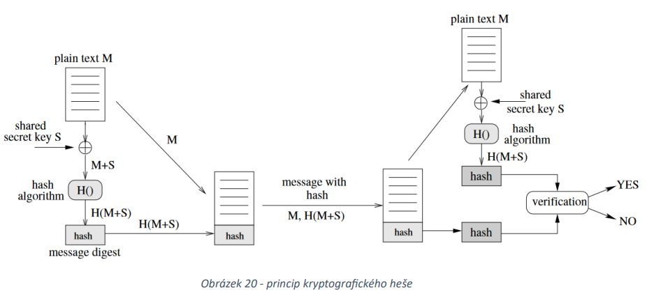
HTTPS: Hashování se používá v protokolu SSL/TLS pro zajištění integrity dat při
přenosu mezi webovým serverem a klientem.
Autentizace uživatelů: V mnoha autentizačních systémech, včetně webových
aplikací, je hash hodnota hesla uložena v databázi, namísto samotného hesla, pro
zvýšení bezpečnosti.
4.6 Čím se liší hešovací funkce a kryptografická hešovací funkce?
- Heshovací funkce dává jako výsledek hash (MD5, SHA1) - HMAC algoritmus slouží na generování kryptografického hashe. - Rozdíl mezí obyčejným hashem a kryptografickým je ten, že kryptografický v sobě obsahuje text zprávy a hash, který byl vytvořen z obsahu zprávy a tajného klíče - Výsledkem HMAC je tedy hash, který je závislý na vstupní zprávě a tajném klíči. - Klíč v obyčejném hashi není, a u kryptografického hashe může docházet k problémům, jak tento tajný klíč přenést.
Distribuce klíčů: - DH algoritmus - Asynchornní šifrování - Osobně nebo přes důvěryhodného zprostředkovatele
4.7 Popište, jak probíhá zabezpečení a distribuce klíčů u symetrické a
asymetrické kryptografie.
4.7.1 Symetrická kryptografie
V symetrické kryptografii je stejný klíč používán pro šifrování i dešifrování. Bezpečnost celého
systému závisí na utajení tohoto klíče.
Klíč musí být sdílen pomocí bezpečného kanálu, což může být problematické, zejména při
komunikaci přes nezabezpečenou síť, jako je internet. Pro bezpečné sdílení klíčů se často
využívá asymetrická kryptografie nebo fyzicky zabezpečené kanály
4.7 Popište, jak probíhá zabezpečení a distribuce klíčů u symetrické a asymetrické kryptografie.
4.7.2 Asymetrická kryptografie
Používá se pár klíčů – veřejný a soukromý. Veřejný klíč je volně sdílen, zatímco soukromý klíč
je držen v tajnosti. Bezpečnost spočívá v matematické složitosti odvození soukromého klíče z
veřejného.
Veřejný klíč může být distribuován otevřeně, protože bez znalosti soukromého klíče nelze
dešifrovat data. Distribuce veřejných klíčů často zahrnuje použití infrastruktury veřejných
klíčů (PKI) a digitálních certifikátů, které slouží k ověření pravosti veřejného klíče.
Digitální certifikáty jsou vydávány důvěryhodnými certifikačními autoritami (CA) a poskytují
důvěryhodné propojení mezi veřejným klíčem a jeho vlastníkem.
4.8 Vysvětlete pojem elektronický podpis. Popište proces generování a
verifikace el. podpisu. Uveďte, jaký typ kryptografie elektronický podpis využívá
a jaké zabezpečení poskytuje. Jaké znáte algoritmy pro vytvoření elektronického
podpisu.
- Elektronický podpis zajištuje neodmítnutelnost podepsané zprávy - Využívá asymetrické kryptografie pro ověření odesílatele pomocí soukromého klíče - ze zprávy je vytvořený hash, který je zašifrovaný pomocí privátního klíče, vzniká Digital Signature (Digitální podpis), který je odeslán spolu se zprávou - Příjemce, nebo ten, kdo chce zprávu ověřit, použije veřejný klíč autora zprávy na to aby dešifroval Digital Signature, ze zprávy vytvoří hash a porovná výsledky - Veřejný klíč autora je možné ověřit v systému certifikačních autorit. - CA generuje, podepisuje, ukládá a ověřuje certifikáty k veřejným klíčům - CA stejně ověřuje identitu uživatelů či aplikací a vytváří vazbu s veřejným klíčem
Algoritmy - RSA, DSA, SHA-1, SHA-2
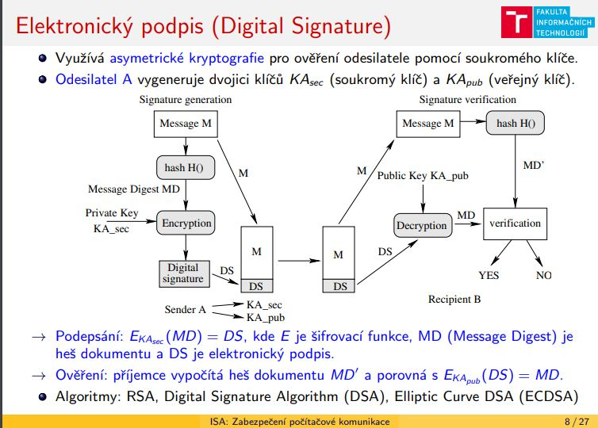
4.9 Definujte pojem certifikát a uveďte, co obsahuje. Popište způsob
ověřování digitálních certifikátů a jejich použití.
- Je to dokument ověřující pravost veřejného klíče a příslušnost k danému uživatelovi - Certifikát vydává a ověřuje certifikační autorita - Pro ověření podpisu CA se používá certifikát kořenové CA
K ověření slouží protokol OCSP Obsahuje: - Sériové číslo certifikátu - identifikaci vydavatelel (distinguished name) - datum platnosti a konec platnosti - identifikaci majitele (distinguished name) - veřejný klíč majitele - účel veřejného klíče - podpis certifikátu podepsaný soukromým klíčem CA - Algoritmus pro vytvoření postupu např. SHA-1 - Otisk certifikátu (HASH) pro zajištění integrity - Algoritmus pro vytvoření hashe - Odkaz na záznam revokovaných certifikátů
Použití: - Bezpečný transport SSL/TLS - Zabezpečení IP komunikace pomocí IPsec - šifrování požadavků HTTPS - Zabezpečení elektronické pošty S/MIME - autentizace uživatelů pomocí 802.1x
5.1 Popište jmenný prostor DNS, jeho strukturu, způsob uložení
dat a přístup k nim.
- Globální adresář doménových jmen a dalších identifikátorů síťových zařízení a služeb. - Jmenný prostor DNS je kořenový strom, jehož kořenem je "" (prázdný řetězec). - doména = podstrom - doménové jméno = cesta - list stromu = koncová zařízení, kterým přiřazujeme nějaké informace - zóna = část doménového stromu, která je uložena na jednom serveru - Přístup k záznamův probíhá pomocí DNS rezoluce
Co je systém doménových jmen (DNS)? - Globální adresář doménových jmen a dalších identifikátorů síťových zařízení a služeb
Co tvoří architekturu systému DNS? - Globální jmenný prostor doménových jmen nebo adres (DNS names, hostnames) + mapování doménových jmen (nejen) na IP adresy - uložení jmenného prostoru DNS + decentralizovaná správa tohoto prostoru - vyhledávání dat v globálním prostoru doménových jmen + přístup k datům
Jak vypadá implementace DNS? - hierarchické rozdělení globálního prostoru doménových adres - delegování správy - Záznamy v zónách DNS uložené na serverech DNS - primární a sekundární - Protokol DNS pro přístup k datům a) vyhledávání (rezoluce) b) přenos zón
5.10 Vysvětlete, co znamená autoritativní odpověd’ DNS a jak ji
lze získat.
- Autoritativní odpověď DNS můžeme označit odpovědi od primárního nebo sekundárního serveru. Odpovědi z těchto serverů jsou považovány za autoritativní nebo primární servery, poskytují vždy přesné odpovědi a sekundární servery si uchovávají svá data a zónové data v pravidelných intervalech a jsou aktualizovány tak, aby se shodovali s daty na primárních serverech.
- Autoritativní odpověď lze tedy získat dotazem na primární nebo sekundární server.
nslookup -type=NS <doména>
5.11 Popište strukturu ukládání dat v DNS. Uved’te obecný
formát záznamu DNS. Vyjmenujte a popište základní typy DNS
záznamů. Uved’te příklady těchto záznamů.
Formát DNS záznamu je [<TLL>] [<class>] <type> <RDATA>
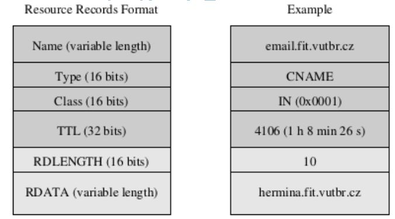
Každý zónový soubor musí obsahovat alespon SOA a NS.
Základní typy záznamů: - SOA, NS, A, AAAA, MX, PTR
5.12 Vysvětlete použití záznamu SOA, MX, PTR, CNAME, SRV, NAPTR a NS. Zapište příklady těchto záznamu
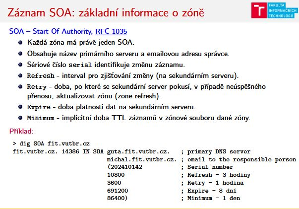
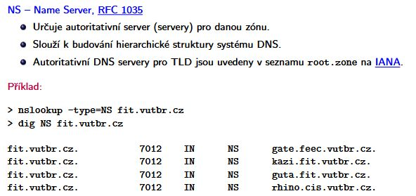
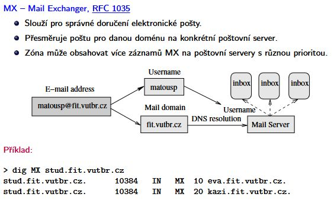
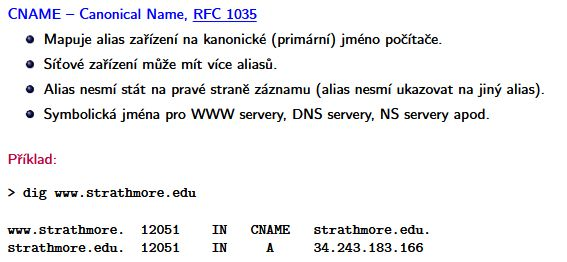
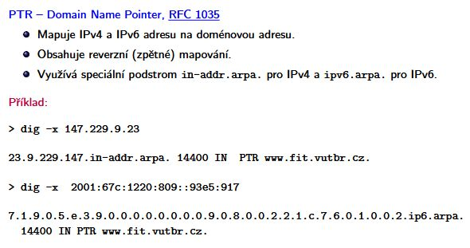
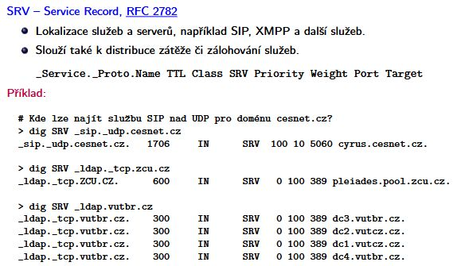
NAPTR (Name Authority Pointer Record) – další záznamy podobné SRV – slouží pro VoIP (internetovou telefonii), mapuje telefonní čísla na další adresy (nějaké URI).
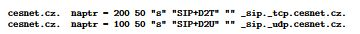
5.13 Jak lze oveřit věrohodnost informací v DNS?
1. TSIG – narozdíl od DNSSEC používá symetrický soukromý klíč, což zanáší problém,
jelikož je exponenciálně náročné zavádět dvojici klíčů pro každého klienta se
serverem.
Podepisování TSIG využívá nový typ záznamu TSIG (250), který obsahuje autorizační kód (hash) celého záznamu DNS
TSIG zajišťuje autentizaci zdroje (serveru DNS) a integritu dat pomocí autentizačního kódu (kryptografického součtu) HMAC - (MD4/5, SHA1,2,3).
Záznam TSIG se vkládá do sekce Additional.
Jakmile se sestaví paket DNS, spočítá se kontrolní součet a vloží záznam TSIG. Po přijetí zprávy příjemcem zkontroluje typ hašovacího algoritmu, název klíče a platnost autentizačního kódu.
Spočítá se autentizační kód záznamu a porovná s hodnotou ve zprávě. Pokud se shodují, je záznam přijat.
Mechanismu TSIG je možné použít i pro resolvery, kteří se dotazují jednoho serveruči několika málo serverů. Stejně tak je tento mechanismus vhodný pro záložní servery, které se odkazují na jeden konkrétní server.
2. DNSSEC – podepisování záznamů DNS pomocí asymetrické kryptografie.
Zjednodušený princip celého DNSSEC: každý záznam podepíšu pomocí privátního ZSK(zone sign key) a uživatel si ho pak ověří pomocí veřejného ZSK.
Je tady však přidán mechanizmus který ověřuje samotné ZSK a to jsou KSK(key sign key)
KSK je klíč, kterým se podepisují ZSK klíče.
DNSSEC klíče:
○ ZSK – zónový klíč (slouží pro vytvoření podpisu každého záznamu)
○ KSK – klíče podepisující klíče (slouží k podpisu ZSK)
Nové DNS Záznamy:
○ RRSIG – podpis konkrétního záznamu vytvořený pomocí ZSK, ověřuje se
přes KSK.
○ DNSKEY –záznam pro uložení veřejné části klíče
○ DS – V nadřazené doméně je zde uložen odkaz na KSK podřazené domény. Slouží k ověření pravosti KSK
Pomocí DS, ZSK a KSK vzniká řetězec důvěry.
Nezjednodušený princip:
Každý záznam ve své zóně podepíšu pomocí privátní části klíče ZSK, který mám uloženy v DNSKEY záznamu. Tyto podpisy uložím do tzv záznamu RRSIG.
V případě, že se někdo bude dotazovat na záznam typu A, tak zároveň dostane podpis RRSIG, který ověří pomocí ZSK uloženého v DNSKEY.
Jelikož by nám takto útočník mohl jednoduše podvrhnout celý záznam i s jeho klíčí,
resp mohl by se vydávat za daný DNS server, tak je zde ještě jeden mechanismus a
to jsou klíče KSK.
KSK i ZSK klíče jsou uloženy v DNSKEY záznamu serveru.
V DS záznamu tohoto nadřazeného serveru je pak uložen odkaz na podřazený klíč
Zabezpečení dat DNS pomocí asymetrické kryptografie (podepisování).
Podepisování záznamů DNS v zónách pomocí ZSK (Zone Signing Key).
Podepisování klíčů pro podepsání záznamů pomocí KSK (Key Signing Key).
DNSSEC definuje nové záznamy pro systém DNS:
DNSKEY: veřejný klíč pro ověření podpisů.
RRSIG: podpis daného záznamu.
NSEC, NSEC3: odkaz na další záznam při dotazu na neexistující doménu.
DS: záznam pro ověření záznamu DNSKEY, uložený v nadřazené doméně.
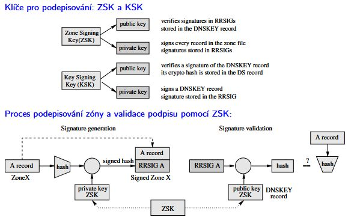
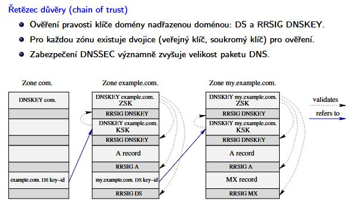
5.18 Vyjmenujte záznamy, které používa DNSSEC. Uveďte jejich použití.
DNSKEY – Je zde uložen ZSK nebo KSK
RRSIG – Podpis záznamu
NSEC, NSEC3 – Slouží pro autoritativní ověření neexistence nějakého záznamu. Je to bezpečnost feature, která měla smysl před DNSSECem
DS – Ukazuje na KSK podřazeného serveru. Odkaz je realizován pomocí hashe. (v podstatě to je podpis)
5.19 Vysvětlete rozdíl mezi zónovým klíčem (ZSK) a klíčem pro podpis klíčů (KSK) u DNSSEC. Kde jsou tyto klíče uloženy?
ZSK (Zone Signing Key) a KSK (Key Signing Key) jsou dvojice soukromých a veřejných klíčů (ZSK je dvojice, KSK další dvojice).
Veřejné jsou dostupné v záznamech DNSKEY. DS v nadřazené doméně pak obsahuje odkaz na KSK podřazené domény.
Soukromé klíče jsou tajné a nesmí se nikde zveřejňovat.
Klíče jsou navzájem závislé – generují se společně a vyšší (KSK) slouží pro ověřování nižšího (ZSK).
ZSK slúži na podpísanie zónových súborov, nachádza sa v zónovom súbore
KSK a jeho veřejný klíč vytvaří SEP
Společně vytváří propojení KSK a ZSK tzv. řetězec důvěry (chain of trust).
5.2 Popište delegaci správy jednotlivých domén v systému DNS.
Ukažte, jak lze najít správce konkrétní domény?
whois <doména> kořenové domény spravuje ICANN TLD spravují akreditovaní registrátoři, spravují uživatelé
5.20 Definujte řetězec důvěry (chain of trust). Vysvětlete, k čemu slouží a jak vzniká.
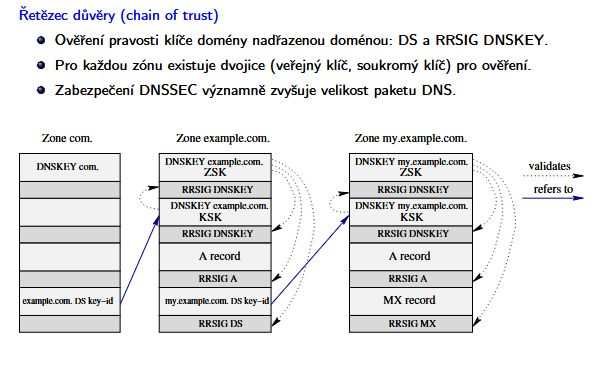
Záznamy DNSKEY a DS vytváří posloupnost podepsaných záznamů navzájem potvrzující pravost podpisů, tzv. řetězec důvěry.
Jedná se o řetězec ZSK a KSK, kdy každá úroveň (nižší než kořenová, ta má jen DS záznam) DNS má záznam DS a DNSKEY, kdy každá vyšší úroveň má DS k nižšímu DNSKEY.
Takto postupně přes zóny vzniká vzájemně ověřovací řetězec důvěry, kdy jeden je schopen ověřit nižšího, toho vyššího zase někdo ještě vyšší atd.
5.21 Diskutujte problém monitorování dotazů DNS versus soukromí uživatele. Jak mohou přenosy DNS narušit soukromí uživatele?
Při každém dotazu uživatel odesílá svou adresu – ta se dá snadno odposlechnouta a na základě geolokace určit dotazujícího.
V každém dotazu je vidět, na co se uživatel ptá – další narušení soukromí (třeba můžeme vidět, že osoba X hledá obsah na example.net)
Při konfiguraci lokálního DNS serveru je nutné předávat nějaké meta informace – další narušení soukromí.
5.22 Popište fungování DNS over HTTPS (DoH). Uveďte výhody a rizika této technologie.
Dotazy a odpovědi se tvoří jako HTTPS zprávy, takže jsou zašifrovaná a není možné nahlédnout do jejich dat. Musí to být implementováno v prohlížeči a server DNS to musí podporovat.
Dotazy se posílají serveru, který je nakonfigurován v prohlížeči (což je na jednu stranu super bezpečné, na druhou stranu to dává neomezené právo sledovat od správce prohlížeče).
Nevýhoda – ubírá se jedna možnost monitorování sítě, což může vést k bezpečnostním riziku formou připojení se na špatné služby atd.
Nedostatek – DNS dotaz sice není přímo dosledovatelný (ve Wiresharku se tváří jako HTTPs), ale ostatní protokoly nemusí být takto zašifrovány, tudíž je to jenom jedno dílčí omezení sledování.
Komunikace je tímto protokolem šifrována jenom při prvním dotazu, nikoliv pak při rekurzivním přístupu do dalších serverů.
5.23 Porovnejte DoT (DNS over TLS) a DoH (DNS over HTTPS). Ukažte, jak probíhá resoluce DNS při použití DoT či DoH.
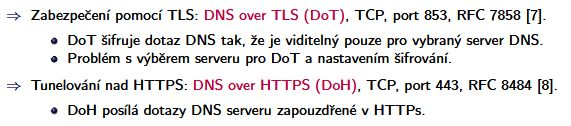
DoT (DNS over TLS)
- je to metóda pri ktorej sa DNS posiela cez TLS
- ako prvé sa musí vykonať TLS handshake, ktorý zabezpečí výmenu cifry a kľúča
- je to mierne nepraktické lebo DNS by malo byť rýchle
- medzi resolverom a DNS serverom sa vytvorí šifrovaná TLS komunikácia, ktorá
zaisťuje integritu dát, neodmietnuteľnosť, autentizáciu a súkromie
- server by musel s každým komunikantom vykonať tento TLS handshake, čo
väčšinou nebýva od serveru povolené, dá sa na to ale použiť napríklad nejaký
vlastný server, kde je to povolené
DoH (DNS over HTTPs)
- nefunguje ako DoT takže nevytvára body medzi resolverom a serverom, ale v
skutočnosti je to technológia, ktorá sa dá zapnúť v prehliadači
- vtedy sa cez HTTPs klient spojí s nejakým konkrétnym bodom a do toho miesta ide
klientova šifrovaná komunikácia a od toho bodu funguje ďalej normálna DNS
resolvancia
Oboje tieto metódy majú oproti DNSSEC alebo TSIG tú výhodu, že šifrujú DNS dotazy,
takže tretia strana nevie zistiť, aké dotazy sú zasielané. Zavádzajú iné problémy ako
napríklad pri DoH, že máme iba spoľah na tretiu stranu, ktorá zabezpečuje našu
komunikáciu a my jej tým pádom dávame prístup k našim dotazom. V praxi sa realne
používa iba DoH. DoT sa nepoužíva, kvôli tomu, že to nefunguje dostatočne rýchlo (keďže
TCP handshake a TLS handshake) a nie každý server by povolil výmenu rôznych tajných
kľúčov medzi každým klientom.
5.24 Pro vlastní doménu vytvořte přímé a reverzní zónové soubory, které obsahují záznamy alespoň pro pět počítačů v doméně, dále poštovní server a webový server. Nezapomeňte uvést povinné záznamy SOA a NS.
IP: 77.93.199.x doména xlogin.cz priamy zónový súbor @ 3600 IN SOA ns.xlogin.cz. mail.xlogin.cz. ( 202301060 ;serial 3600; refresh 3600; retry 86400; expirácia 86400; minimum ) @ 3600 IN NS ns.xlogin.cz ns 3600 IN A 77.93.199.10 mail 3600 IN A 77.93.199.5 @ 3600 IN MX 10 mail.xlogin.cz pc1 3600 IN A 77.93.199.11 pc2 3600 IN A 77.93.199.12 pc3 3600 IN A 77.93.199.13 pc4 3600 IN A 77.93.199.14 pc5 3600 IN A 77.93.199.15 reverzný zónový súbor @ 3600 IN SOA ns.xlogin.cz. mail.xlogin.cz. ( 202301060 ;serial 3600; refresh 3600; retry 86400; expirácia 86400; minimum ) @ 3600 IN NS ns.xlogin.cz 10 3600 IN PTR ns.xlogin.cz 5 3600 IN PTR mail.xlogin.cz 11 3600 IN PTR pc1.xlogin.cz 12 3600 IN PTR pc2.xlogin.cz 13 3600 IN PTR pc3.xlogin.cz 14 3600 IN PTR pc4.xlogin.cz 15 3600 IN PTR pc5.xlogin.cz
PRIPADNE:
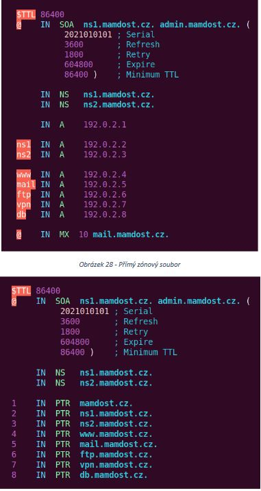
Neviem v čom je lepšie sa vyznať :D ale oba su správne
5.3 Vysvětlete, co je doména prvního řádu (TLD), druhého řádu,
apod. Kdo je spravuje?
Doména prvního řádu, TLD: - top level domain, jsou to generické nebo národní domény - nachází se hned po root doménou - srpavují ji akreditovaní registrátoři - Například .cz, .com
Doména druhého řádu: - tyto nižší domény jsou zpravované vlastníkem domény - Například vutbr.cz
5.4 Jaké znáte typy serverů DNS a čím se liší?
Primární - obsahuje úplné záznamy o doménách, které spravuje. - jsou uloženy lokálně v souboru - server poskytuje autoritativní odpovědi (tj. vždy přesné) - pro každou doménu musí existovat právě jeden primární nameserver
Sekundární - získává data z primárního serveru - soubor, který obsahuje databázi konkrétní domény (nebo subdomény), se nazývá zónový soubor - proces přesunu zónových souborů z primárního serveru na sekundární server se nazývá přenos zón - sekundární server musí zabezpečit pravidelný přenos zónových dat a aktuálnost dat. - je také autoritativním serverem pro danou doménu
Záložní - Pracuje jako proxy server - přijímá dotazy od klientů a přeposílá je dalším DNS serverům. - když záložní server obdrží odpověď na svůj dotaz, uchovává ji a použije ji v v budoucnu - záložní servery poskytují neautoritativní odpovědi, tzn. odpovědi, které mohou být neúplné a neaktuální - ačkoli poskytují neautoritativní odpovědi, urychlují proces řešení rezoluce
5.5 Uveďte, jak probíhá přidělování IP adres. Ukažte, jak je
možné najít vlastníka konkrétní IP adresy.
- IP adresy spravuje organizace IANA. Tyto adresy jsou pronajímány regionálním správcům, kteří je následně pronajímají internetovým poskytovatelům. - U protokolu IPv4 je adresa přidělována pomocí dotazováním protokolem DHCP. - U protokolu IPv6 je unicastová adresa přidělována tak, že horních 64 bitů přidělí internetový poskytovatel a dolní mohou být přidělené: - náhodně - pomocí protokolu DHCPv6 - vložením na spodní bity MAC adresové bity (48 bitů) a zbytek se doplní FFFE
whois <doména>
5.6 Vysvětlete, co jsou reverzní záznamy DNS a k čemu se
používají. Uved’te příklad.
- Jsou to záznamy PTR. - Mapují IPv6 a IPv4 adresu na doménovou adresu (překlad IP -> doménové jméno) - Tento záznam obsahuje reverzní (špatné) mapovéní - Využívá speciální podstrom in-addr.arpa. pro IPv4 a pro ipv6.arpa. chybějící záznamy PTR způsobují problém při autentizaci (Týká se to služeb jako SMTP, FTP, RSH, SSH) - Pokud se počítač pokouší připojit z nějaké IP adresy, server nejprve přeloží IP adresu na doménové jméno dotazem na záznam PTR. Následně zkotroluje, zda se daná doména nenachází v záznamu nebezpečných domén. Pokud je PTR záznam chyba, překlad neproběhne a spojení je odmítnuto
5.7 Definujte rezoluci DNS a popište její princip. Porovnejte
chování rekurzivního a iterativního serveru DNS. Vysvětlete,
kde začíná rezoluce a jak probíhá.
- Rezoluce je proces vyhledávání odpovědi v globálním distributovaném systemu DNS - Rezoluce DNS využívá stromovu strukturu jmen a kořenové DNS servery: - rezoluce začíná od kořenových serverů: - Speciální zóna hint a soubor named.root (záznam kořenových serverů) - 13 kořenových serverů obsahuje kořenovou zónu - Dotazy mohou být rekurzivní a iterativní - Resolver posílá rekurzivní dotaz na lokální DNS server, který přeposílá dotazy na iterativní DNS servery (kořenové, TLD...)
Rekurzivní dotazy - Pokud server nezná odpověd přepošle dotaz dalším serverům - rekurzivní DNS server si ukládá do odpovědi do cache pro další použítí
Iterativní dotazy - Server vrátí nejlepší možnou odpověd - Pokud nezná opověď, pošle odkaz na server, který může znát odpověď
5.8 Vysvětlete, co jsou kořenové servery DNS a k čemu slouží.
Jak lze najít kořenový server?
- Kořenový server, je autoritativní server DNS pro všechny domény nejvyšší úrovně TLD. - Ke každé existující doméně TLD zná adresu autoritativního serveru - Při dotazu na jakékoliv doménové jméno odpoví kořenový DNS server tak, že vrátí adresu serveru DNS, který informaci obsahuje - Je nezastupitelný pro správný běh celého systému DNS - Kořenové adresy jsou ve tvaru [a-m].root-servers.net
nslookup a.root-servers-net
5.9 Popište směrování a adresování dotazů v DNS. Co udělá
klient DNS, když chce vyhledat konkrétní záznam v globálním
jmenném prostoru DNS?
například query eva.fit.vutbr.cz
- Pokud má resolver vlastní cache paměť, pokusí se vyhledat dotaz v ní. Pokud informace nenajde, předá dotaz nejbližšímu lokálnímu DNS serveru.
- Server DNS hledá odpověď ve svých záznamech. Pokud ji nenajde, musí najít autoritativní server pro danou doménu. Pošle tedy dotaz kořenovému serveru. Pokud kořenový server nezná odpověď sám, přepošle odkaz na server, který je autoritativní pro doménu (tedy TLD, .cz). Kořenový server odpoví záznamem NS pro TLD doménu
- Lokální server kontaktuje autoritativní server domény .cz a požádá o překlad doménového jména
- Pokud ani tento autoritativní server nezná odpověď, odešle odkaz na server obsahující doménu vutbr.cz
- lokální server tedy kontaktuje autoritativní server DNS pro doménu vutbr.cz.
- Tento autoritativní server už odpověd pozná a vrátí záznam A obsahující IP adresu pro eva.fit.vutbr.cz
- lokální server přepošle odpověď resolveru, uloží její kopii do lokální paměti cache a uchovává ji tam, dokud nevyprší platnost záznamu
- resolver předá odpověď uživatelskému programu.
použije funkci nslookup -type=TYP ZÁZNAMU <doména>
6.1 Popište architekturu elektronické pošty. Uveďte protokoly a služby potřebné pro její fungování.
Základní architekturu systému el. pošty tvoří 2 entity a protokoly:
Poštovní klienti (MUA, Message User Agent)
Poštovní server (MTA, Message Transfer Agent)
Komunikační protokoly: SMTP, POP3, IMAP
MUA - klientská aplikace sloužící k vytváření, odesílání a čtení el. pošty. Používá protokoly POP3/IMAP pro přístup ke schránce.
MTA - agent pro přenos zpráv, předává zprávy mezi jednotlivými uzly až na místo doručení. Může jím být poštovní server, např. MS Exchange.
SMTP (Simple Mail Transfer Protocol, TCP/25) - textový protokol sloužící k odesílání a přesměrování elektronické pošty mezi poštovními servery v síti, směrování probíhá pomocí DNS MX záznamů.
POP3 (Post Office Protocol verze 3, TCP:110) - protokol určený ke stahování doručených emailových zpráv ze serveru na lokální počítač, umí pracovat pouze s jednou (INBOX) schránkou, změny probíhají lokálně, synchronizuje se se serverem před ukončením spojení.
IMAP (Internet Message Access Protocol, TCP:143) - protokol umožňující vzdálenou správu a organizaci e-mailů přímo na serveru s podporou více schránek, na rozdíl od POP3 umožňuje současnou práci více klientů se schránkami.
6.10 Popište zabezpečení e-mailové komunikace pomocí PGP. Jaké klíče a algoritmy PGP používá?
PGP (Pretty Good Privacy) spočívá v hybridním šifrování, kde se zpráva (případně i příloha) zašifruje symetrickým klíčem, ale samotný symetrický klíč se příjemci pošle zašifrovaný veřejným klíčem. Tím se využijí výhody rychlého šifrování symetrickými algoritmy a zároveň bezpečná výměna klíčů asymetrickou kryptografií. Průběh PGP:
Nejprve si každý uživatel vygeneruje pár klíčů – veřejný a soukromý.
Pro zabezpečení autenticity a integrity zprávy odesílatel vytvoří digitální podpis tím, že zašifruje hash zprávy svým soukromým klíčem a tento podpis přiloží k původní (nešifrované) zprávě. (Takže teď máme původní zprávu + hash zprávy šifrován soukromým klíčem odesílatele, to celé nešifrované)
Proběhne LZ komprese
Vygeneruje se symetrický klíč (tzv. session key).
Zašifrování zprávy (a případných příloh) symetrickým klíčem (používá se IDEA, 3DES, AES nebo jiný podporovaný algoritmus).
Symetrický klíč (session key) se zašifruje veřejným klíčem příjemce (typicky RSA) a připojí se k zašifrované zprávě.
Příjemce následně dešifruje symetrický klíč svým soukromým klíčem, pomocí něj dešifruje obsah zprávy a ověří digitální podpis veřejným klíčem odesílatele, čímž potvrdí autenticitu a neporušení zprávy.
Použité algoritmy a klíče
Asymetrická Kryptografie (Veřejný/Soukromý Klíč)
RSA (Rivest–Shamir–Adleman): Nejrozšířenější algoritmus pro generování veřejných a soukromých klíčů v PGP.
DSA (Digital Signature Algorithm) a ElGamal: Používané v některých implementacích, ale méně běžné než RSA.
Symetrická Kryptografie (Session Key)
AES (Advanced Encryption Standard): Běžně používaný pro jeho bezpečnost a efektivitu.
IDEA (International Data Encryption Algorithm): Historicky používaný v PGP.
Hašovací Funkce
SHA-1, SHA-256, SHA-384, SHA-512: Používané pro vytvoření hashů zprávy pro digitální podepisování.
MD5: Historicky používaný, dnes už se nedoporučuje kvůli zjištěným slabinám.
6.11 Vysvětlete princip zabezpečení SPF (Sender Policy Framework) a DKIM (DomainKeys Identified Mail). Jakým způsobem využívají tyto metody systém DNS?
SPF (Sender Policy Framework)
Doména (např. fit.vutbr.cz) v DNS zveřejní záznam typu TXT, ve kterém definuje, z jakých serverů (IP adres) může legálně odesílat poštu. Když přijde email s odesílatelskou adresou @fit.vutbr.cz, přijímající server si prohlédne TXT SPF záznam a ověří, zda IP adresa odesílajícího serveru odpovídá tomu, co je v TXT definováno.
Využití DNS: SPF záznam se uloží do DNS (např. v=spf1 ip4:192.0.2.1 -all) jako TXT záznam, kde si ho může přijímající server při ověřování stáhnout a zjistit, zda IP adresa odesílatele je povolená.
DKIM (DomainKeys Identified Mail)
Provádí autentizaci příchozích e-mailů pomocí elektronického podpisu. Vlastník poštovní domény vygeneruje veřejný a soukromý klíč, veřejný vloží do TXT záznamu (prefix v=dkim1). Odesílající strana při odesílání emailu vygeneruje ze zprávy elektronický podpis založený na tomto privátním klíči. Tento podpis (v hlavičce DKIM-Signature) se spolu se zprávou odešle příjemci. Příjemce si následně pomocí veřejného klíče, který je publikován v DNS pod doménou odesílatele, ověří, zda podpis sedí a zpráva nebyla po cestě změněna.
Využití DNS: Veřejný klíč k validaci podpisu je uložen opět jako DNS TXT záznam (např. default._domainkey.example.com) a přijímající server ho při příjmu zprávy získá dotazem na DNS.
6.12 Vysvětlete pojem adresářová služba. Uveďte příklad použití.
Adresářová služba je specializovaná síťová služba, která uchovává a zpřístupňuje informace o objektech v síti (např. uživatelích, skupinách, zařízeních, službách). Umožňuje tak jednotnou správu a vyhledávání údajů napříč organizací.
LDAP (Lightweight Directory Access Protocol): Centrální firemní databáze uživatelů (jména, emailové adresy, hesla), ze které čerpají různé aplikace (e-mailové klienty, operační systémy, intranetové portály). Díky tomu se informace o zaměstnancích a přístupové údaje spravují na jednom místě a jsou okamžitě dostupné všem službám v síti.
6.13 Popište spôsob adresovania, ukladania a vyhľadávania dát pri službe LDAP
Ukladanie dát prebieha pomocou stromovej štruktúry DIT (Directory Information Tree) v němž vrcholy reprezentují záznamy. Záznamy ve vyšší části stromu (blíže ke kořeni), reprezentují objekty jako jsou například země či organizace. V nižší části jsou to osoby nebo aplikační procesy. Každý záznam má jednoznační identifikátor DN – distinguished name
Systém LDAP je formálně definován pomocí čtyř modelů, ty nám ukazují 4 rozdílné pohledy
na protokol LDAP:
Informační – popisuje uložení informací v adresáři (jak jsou data uložená)
○ definuje typy dat a základní jednotky pro ulozeni informaci
○ zaznamy obsahuji informace o objektech reálného světa, které jsou uloženy v adresáři
Jmenný – definuje jak jsou data uložená a jak je má uspořádat a odkazovat (jaké jsou vztahy mezi daty)
○ Pracuje tedy pouze se záznamy
○ Vytváří stromový model DIT
○ Tohle je ten strom ffs, nic jineho
Funkční – zabývá se přístupem k datům, popisuje LDAP operace (jak vypadá komunikace, přístup ověření ..)
○ prohledávání, změna dat, řízení přístup k datům
Bezpečnostní – zabývá se zabezpečením v adresáři
○ autentizace pomocí MD5 SASL – nejakej security mod
6.14 Definujte adresářové schéma, popište jeho funkci a obsah. Uveďte příklad
Adresářové schéma (Directory Schema) je množina pravidel, které určují, co bude uloženo v adresářové službě a jak mají klient a server zacházet s informacemi při adresářových operacích, např. při vyhledávání. Každý záznam je před vložením do adresáře zkontrolován, zda vyhovuje pravidlům adresářového schema. Schéma definuje omezení nad uloženými informacemi, např. velikost, rozsah, formát datových hodnot apod. Každý záznam v adresáři obsahuje množinu povinných (required) atributů a množinu volitelných (optional) atributů. Seznam těchto atributů je popsán v adresářovém schematu. Schéma nedefinuje vztahy mezi záznamy, jak je tomu například v relační databázi. Vztahy jsou popsány ve jmenném modelu adresáře.
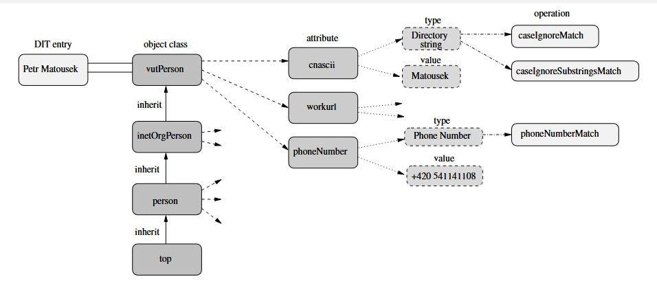
6.15 Co je záznam LDAP, z čeho se skládá a jaké základní atributy používá
Záznamy obsahují informace o objektech reálného světa, které jsou uloženy v adresáři. Záznam je tvořen množinou atributů, které obsahují informaci o objektu, který záznam reprezentuje. Záznam může mít více atributů. Každý atribut má typ a hodnotu. Některé atributy mohou obsahovat více hodnot, jiné pouze jedinou Příkladem záznamem může být záznam o konkrétním uživateli třídy person a může obsa- hovat atributy typu sn (surname, příjmení), cn (commonName, celé jméno) či userPassword (heslo) s hodnotami například sn=”Michálek”, cn=”Martin Michálek”, userPassword=”Patrik06”. Tyto hodnoty mohou tvořit záznam v adresářovém stromu DIT, který je umístěn v uzlu s hodnotou ”uid=michalek, ou=ostrava, dc=kvz, dc=cz”.
6.16 Navrhněte záznam pro třídu objektu student FIT, uveďte vhodné atributy a datové typy.
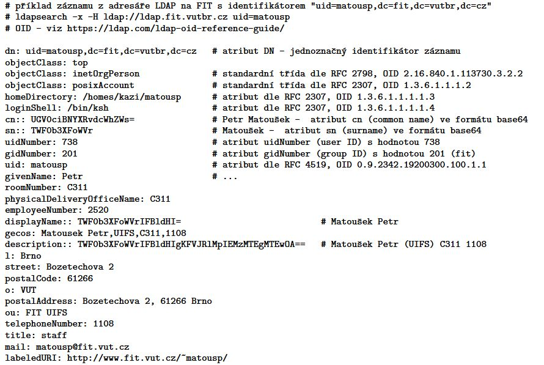
Iba zmeniť možno pár atributov ale toto je priamo od matuška z prezentácie a stačí prvých pár bodov ako napr dn, dc, cn, sn, a všetko čo može študent obsahovať napr.: uid=xlogin00, dc=fit, dc=vutbr, dc=cz, objectClass=person cn=meno sn=priezvisko
6.17 Navrhněte strukturu záznamu pro zaměstnance firmy včetně atributu a datových typu
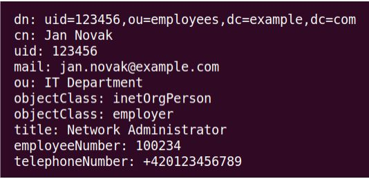
6.18 Popište protokol LDAP. Zakreslete přiklád komunikace při vyhledávaní dat v adresáři LDAP
Lightweight Directory Access Protocol, viz RFC 4511 [11] Aplikační protokol nad TCP, port 389. Navržen jako zjednudušená alternativa systému X.500. Jednodušší implementace, jeden přenosový protokol LDAP. Využívá koncept X.500 pro uspořádání dat: Directory Information Tree (DIT).
Compare – porovnání hodnoty atributů u zadaných záznamů, vrátí true or false
Abandon – zrušení předchozího příkazu
Modify – změna konkrétního záznamu
Add – přidání nového záznamu
Delete – zrušení záznamu v listu
ModifyDN (změna nejlevější komponenty v DN)
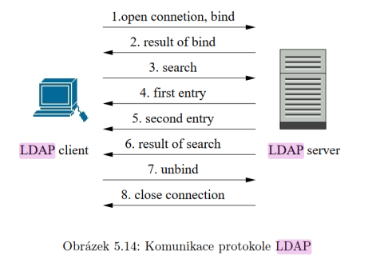
6.19 Ukažte, jak lze lokalizovat službu LDAP pro danou doménu
Vyhledání SRV záznamu pro danou doménu _ldap._tcp.example.com. IN SRV 0 10 389 ldap2.example.com. Např. nslookup -type=SRV _ldap._tcp.example.com dig _ldap._tcp.example.com SRV
6.2 Popište formát zpráv el. pošty. Uveďte základní hlavičky zprávy u SMTP.
Zpráva se skládá ze dvou částí - obálky (envelope) a zprávy (message), která je tvořena hlavičkou (header) a tělem (body) zprávy oddělenými prázdným řádkem. Podle RFC jsou povinná pole zprávy datum a čas napsání zprávy (Date:) a adresa odesílatele (From:). Standardně se při el. zprávě vychází ze 7bitového ASCII kódování podle původního RFC, ale používají se také BASE64 pro netextová binární data a quoted-printable pro osmibitový text s diakritikou. Později byl standard rozšířen o podporu MIME (Multipurpose Internet Mail Extension), aby zprávy mohly obsahovat i netextová data.
Základní hlavičky u SMTP:
Date: - lokální datum a čas odeslání (povinné)
From: - autor zprávy (povinné)
To: - prvotní adresát zprávy
Message-ID: - jednoznačný identifikátor zprávy, generovaný počítačem při odeslání
Subject: - krátký řetězec popisující obsah zprávy
Content-Type: - typ a formát obsahu zprávy
6.20 Jakým zpusobem se kódují data přenašená protokolem LDAP
ASN.1 je pro ukládání dat a přenos se kóduje standardem BER (Basic encoding rules)
6.21 Popište využití služby LDAP u elektronické pošty
Mailový klient se dotáže, jestli nemá záznam pro osobu “Petr Nahodný” a server
odpovídá.
Pokud je odpověď kladná, lze z odpovědi vyčíst e-mailovou adresu a na tu
následně poslat zprávu.
6.22 Ukažte, jak lze využít službu LDAP pro řízení přístupu k webovému obsahu.
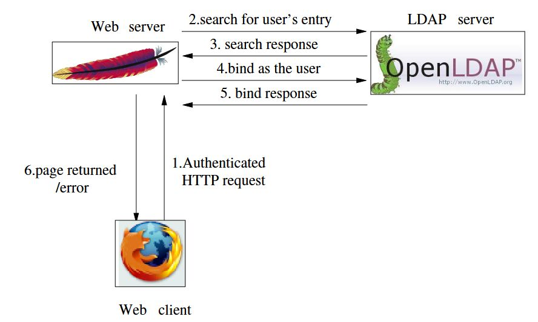
Důležité je vědět, že v rámci LDAP příkazu BIND můžeme poslat uživatelské udaje a heslo resp. hash hesla a to buď v jednoduché podobě (pokud komunikujeme pres bezpecne spojeni (TLS), tak je to nejbezpecnejsi)) nebo pomoci SASL s kontrolním součtem MD5.
Webový klient, který se přihlašuje na server, zadá své autentizační údaje (login a heslo).
Server je ověří vůči LDAP serveru tak, že požádá o připojení (operace bind) se autentizací. Do příkazu zadá uživatelské jméno a heslo. Pokud příkaz bind správně projde, Web server se odpojí a považuje uživatele za korektně autentizovaného. Pokud se operace nezdaří, vrátí chybu autentizace.Stejně to funguje i pro autentizaci uživatelů na unix systémech …. kde si můžeme definovat náš LDAP server.
6.23 Vysvětlete mechanismus přístupu IEEE 802.1x s využitím služeb Radius a LDAP.
Standard IEEE 802.1x definuje ověření zařízení na úrovni linkové vrstvy L2. Při připojení do sítě pošle aktivní prvek (WiFi AP, switch) klientovi žádost o autentizaci do sítě přes EAP (stejný, jak když chcete jít na VUT wifi a musíte se přihlásit). Klientovu žádost o autentizaci přepínač přepošle na server Radius. Tuto autentizaci (EAP) běžně zpracovává server Radius, ten se po přijetí autentizačního požadavku dotazuje serveru LDAP pro vyhledávání uživatele. Po úspěšné autentizaci se klient připojí do sítě LAN.
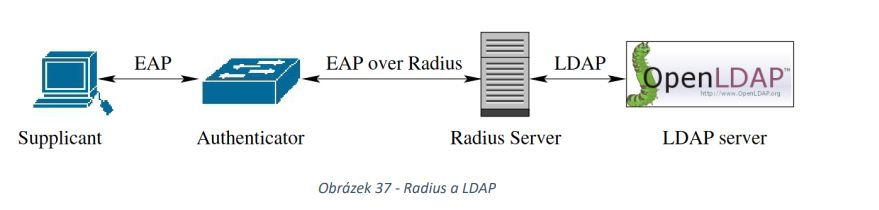
6.3a Popište funkci protokolu SMTP. Uveďte jeho základní příkazy.
SMTP (Simple Mail Transfer Protocol, TCP:25) Slouží k odesílání a přesměrování e‑mailových zpráv mezi poštovními servery a k přenosu zpráv z klienta na poštovní server (odchozí pošta). Pokud zpráva není určena pro lokální systém, SMTP server ji předává dalšímu SMTP serveru pro cílové doručení (jeden server je server, druhý je klient).
AUTH – zahájení autentizace odesílatele pomocí SASL
MAIL FROM – adresa odesílatele
RCPT TO – identifikace adresáta
DATA – 7bitová textová data ukončená <CRLF>.<CRLF>
VRFY –klient otestuje identifikaci adresáta
EXPN – zobrazí seznam adres mailing listu typu alias
HELP – vypíše pomocné informace klientovi
NOOP – prázdný řetězec (test spojení)
QUIT – uzavření spojení
6.3b Popište funkci protokolu POP3. Uveďte jeho základní příkazy.
POP3 (Post Office Protocol v3, TCP:110)
Protokol pro čtení doručené pošty. Jednodušší z hlediska činnosti i implementace než IMAP. Načte data z poštovního serveru a kopíruje je na lokální počítač. Umí pracovat pouze s jednou schránkou na straně serveru (INBOX) - při připojení a autentizaci uživatele umístí POP3 na schránku zámek, aby ji používal pouze jeden klient. Na lokální počítač se kopíruje obsah celé schránky. Více schránek podporují pouze poštovní klienti na lokálním systému (přepíná se mezi nimi).
USER – uživatelské jméno identifikující poštovní schránku
PASS – heslo pro přístup k serveru/schránce
APOP – bezpečné přihlášení ke schránce pomocí MD5
AUTH – zahájení SASL autentizace
STAT – zobrazení počtu zpráv a celkové velikosti v bajtech
LIST – výpis zpráv s jejich velikostí
RETR – server pošle požadovanou zprávu klientovi (stažení zprávy ze serveru)
DELE – označení zprávy na smazání (příznak "deleted")
RSET – zrušení označení zpráv na smazání (odstraní příznak)
QUIT – ukončení spojení a odstranění označených zpráv
TOP – načtení jen hlavičky + zadaného počtu řádků z těla zprávy
6.3c Popište funkci protokolu IMAP. Uveďte jeho základní příkazy.
IMAP (Internet Message Access Protocol, TCP:143)
Protokol pro čtení doručené pošty. Umí pracovat s více schránkami na vzdáleném poštovním serveru, také umožňuje současnou práci více klientů se schránkami. IMAP umí pracovat nejen s celou zprávou, ale s jednotlivými položkami z hlavičky dopisu (vyhledávání, řazení atd.), čtení části zprávy apod. Po připojení k serveru se načtou pouze hlavičky, až když chce uživatel přistoupit ke zprávě, načte se i její tělo. Pro zprávy na serveru si IMAP udržuje soubor atributů: Seen (přečtená zpráva), Answered (odpověď odeslaná), Flagged (nastavení příznaku), Deleted (označení k smazání), Draft (návrh úpravy), Recent (nová zpráva) atd.
CAPABILITY – seznam podporovaných činností serveru
SELECT / EXAMINE – výběr konkrétního složky (např. INBOX)
FETCH – načtení obsahu zprávy nebo části zprávy
STORE – změna příznaků (např. přečtené, smazání atd.)
SEARCH – vyhledávání podle kritérií (odesílatel, datum, předmět...)
COPY – kopírování zpráv do jiné složky
CREATE / DELETE / RENAME – správa složek
SUBSCRIBE / UNSUBSCRIBE – (ne)přihlášení ke složkám
CLOSE / EXPUNGE – definitivní smazání zpráv označených k smazání
LOGOUT – ukončení spojení
6.4 Porovnejte komunikaci protokolů POP3 a IMAP, uveďte jejich výhody a nevýhody
POP3 funguje tak, že při připojení klienta k serveru stáhne zprávy z jediné schránky (INBOX) na lokální počítač. Na schránku se nastaví zámek – pokud si ji stáhne na jeden počítač, na ostatních se k ní už nedostane. Manipulace se zprávami ve schránce neprobíhá online, změny se provedou až při ukončení spojení. Výhody:
Jednodušší a méně náročný na zdroje.
Se zprávami se pracuje lokálně.
Nevýhody:
Umí pracovat jen s jednou schránkou na straně serveru.
K jedné schránce může přistupovat pouze jeden klient.
Pokud během práce dojde ke ztrátě spojení, práce je ztracena. Na schránce může zůstat i zámek, což způsobuje další problémy pro správce.
IMAP pracuje se zprávami přímo na serveru, a to ve více složkách či schránkách. Zprávy se stahují (nebo jen hlavičky) až v okamžiku, kdy je skutečně otevíráte. Změny (označení zprávy, přesun do jiné složky) se zaznamenávají na serveru, takže zůstávají konzistentní pro všechny klienty. Výhody:
Všechny zprávy zůstávají na serveru a jsou synchronizovány napříč více zařízeními.
Umožňuje vytvářet složky, přesouvat do nich zprávy, označovat je příznaky (např. “přečtené”, “smazané”), vyhledávat v nich.
Možnost stahování jen částí zpráv (např. jen hlavička nebo jen těla vybraných mailů), což minimalizuje přenos dat.
Nevýhody:
Vyšší nároky na prostor a zdroje na straně serveru (zprávy se uchovávají dlouhodobě).
Složitější implementace – protokol má více příkazů a podporuje rozsáhlejší operace.
6.5 Popište formát elektronické adresy. Ukažte, jak probíhá směrování el. pošty. Jak se zachová systém SMTP, pokud adresát neexistuje?
Elektronická poštová adresa (e-mail) má tvar adresát@doména. Doména je platné DNS jméno (např. gmail.com, fit.vutbr.cz atd.). Obě jsou 7-bitové ASCII znaky. Před odesláním musí mít MUA nakonfigurovaný odchozí poštovní server (MTA).
Při odesílání zprávy klient (MUA) použije protokol SMTP a odešle zprávu na odchozí poštovní server.
Poštovní server (MTA) přijme zprávu, přidá obálku a dotazuje se na DNS MX záznam, který obsahuje adresu serveru, který zpracovává poštu pro adresovanou doménu (např. fit.vutbr.cz).
Z DNS A záznamu zjistíme ještě IP adresu daného serveru.
Následně MTA odešle zprávu na cílový server (opět pomocí SMTP), kde MTA nejprve rozbalí obálku a potom se zpráva doručí do příslušné poštovní schránky, pokud existuje.
Příjemce si zprávu vyzvedne přes protokol POP3 nebo IMAP.
Pokud cílový poštovní server zjistí, že uživatelská schránka (lokální část adresy) v dané doméně neexistuje, typicky vrátí chybový kód (např. 550 – „User unknown“). Odesílající server následně doručí původnímu odesílateli oznámení o nedoručitelnosti (tzv. „bounce message“), kde uvede důvod (neexistující uživatel).
Pokud neexistuje cílový poštovní server, tak MTA to zjistí již při MX dotazu na DNS server.
6.6 Jaké informace můžeme zjistit z logů poštovního serveru a k čemu se využívají.
Informace o příjezdu a odjezdu zpráv - kdy a odkud byla zpráva přijata (IP adresa odesílatele, použité protokoly), případně kdy a kam byla zpráva odeslána.
Adresy odesílatele a příjemce - umožňují zjistit, kdo zprávu poslal (MAIL FROM) a kdo byl adresát (RCPT TO), poskytují přehled o tom, zda byla zpráva doručena lokálnímu uživateli nebo přeposlána dále.
Stavy a chyby doručení - záznamy o úspěšném doručení, odložení (temporary failure) či odmítnutí (permanent failure), obsahují chybové kódy (např. 4xx, 5xx), které naznačují, proč zpráva nebyla doručena (neznámý uživatel, nedostupný server atd.).
Diagnostické a bezpečnostní informace - informace o autentizaci (pokud je zapnuto přihlašování k SMTP), záznamy o antivirovém a antispamovém skenování (či byla zpráva označena jako spam, případně obsahovala škodlivé soubory) a výsledky kontrol greylistingu, black‑listingu nebo SPF, DKIM, DMARC (pokud jsou implementovány).
atd...
Pomocí těchto logů můžeme diagnostikovat a řešit problémy jak na straně MTA, tak u klientů. Také nám poskytují informace o bezpečnosti a provozu, poskytují přehled o objemu komunikace, odhalují neoprávněné pokusy o přihlášení či rozesílání spamu.
6.7 Vysvětlete pojem MIME. Uveďte, k čemu slouží. Uveďte příklad použití.
MIME (Multipurpose Internet Mail Extensions) je standard rozšiřující původní 7bitový formát emailových zpráv tak, aby dokázal přenášet různé typy netextových či binárních souborů (obrázky, zvuk, video, přílohy). Umožňuje rozdělit zprávu na více částí (např. text v různých formátech, přílohy) a každou část zakódovat vhodným způsobem (base64, quoted-printable apod.). V hlavičce zprávy je uveden typ kódování zprávy a odkaz na první část ve formátu MIME. Každá část obsahuje textový typ, případně podtyp obsahu, pak znakovou sadu a typ kódování, který je pro přenos využit. Typ obsahu ve standardu MIME se uvádí v hlavičce zprávy ve tvaru Content-type: type/sub type. Pokud je zpráva tvořena více typy obsahu, použije se speciální typ Multipart, který rozdělí zprávu na samostatně kódované části. Slouží k přenosu více než 7bitových znaků (např. diakritika, východní jazyky) a přenosu příloh a obsahu různých typů. Při odeslání emailu s přílohou (například soubor “foto.jpg”) se v hlavičce definuje MIME verze (např. MIME-Version: 1.0) a typ obsahu (např. Content-Type: image/jpeg; boundary="XYZ"), tělo zprávy se rozdělí na dvě části – jedna pro text a druhá pro binární přílohu, která je zakódována (typicky base64). Díky MIME může příjemce zprávu dekódovat a soubor “foto.jpg” získat v původní podobě.
6.8 Vysvětlete princip a použití kódování Quoted Printable a Base64 u el. pošty.
Quoted-Printable (QP)
Každý 8‑bitový znak, který nepatří do povoleného rozsahu 7‑bitové ASCII sady nebo má jiný speciální význam v SMTP (např. konec řádku), je zakódován trojznakovou sekvencí: znak „=“ + dvojice hexadecimálních číslic (např. znak „č“ v ISO-8859-2 může být =E8). Využívá se zejména pro textové zprávy (e-mail s diakritikou), kde většina znaků je stále 7‑bitová, ale některé jsou 8‑bitové. Zachovává také čitelnější ASCII znaky v nezměněné podobě. Například slovo “čau” by bylo reprezentováno jako “=E8au”.
Base64
Každé tři bajty (24 bitů) vstupních dat se rozdělí na čtyři 6‑bitové úseky, které se následně mapují na 64 znaků abecedy (A–Z, a–z, 0–9, +, /) pomocí převodové tabulky. Ideální pro binární přílohy (obrázky, archivy, dokumenty) nebo text se silným zastoupením 8‑bitových znaků, které by QP zvětšilo více než base64. Poskytuje totiž stabilní a předvídatelný poměr, obvykle +33 % k původní velikosti souboru (3 bajty vstupu → 4 bajty výstupu).
6.9 Popište, jakými způsoby můžeme zabezpečit přenos el. pošty
Můžeme se zaměřit na dvě hlavní oblasti – ochranu obsahu zpráv (šifrování, podepisování) a ochranu samotného přenosu (šifrované spojení mezi serverem a klientem/servery).
Šifrování obsahu a podepisování (end-to-end)
PGP (Pretty Good Privacy)
Používá asymetrickou kryptografii (veřejný a soukromý klíč).
Umožňuje šifrovat samotné tělo emailu (nikdo bez privátního klíče příjemce ho nedokáže přečíst), využívá se šifrování IDEA nebo AES.
Poskytuje také digitální podpis, který zajišťuje nepopiratelnost, integritu zprávy (MD5) a autentizaci (RSA).
S/MIME (Secure/Multipurpose Internet Mail Extensions)
Pracuje podobně jako PGP, jen s jinou infrastrukturou (X.509 certifikáty).
Umožňuje šifrování a podepisování zpráv jako samostatné MIME části (multipart/signed, multipart/encrypted).
Zabezpečení přenosu (transport-level security)
TLS/SSL (např. SMTPS, IMAPS, POP3S)
Rozšíření pro protokoly (SMTP, POP3, IMAP), při kterém se vytvoří šifrovaný kanál na portu vyhrazeném pro zabezpečenou komunikaci (obvykle 465 pro SMTPS, 993 pro IMAPS, 995 pro POP3S).
Celá komunikace mezi klientem a serverem je šifrovaná, ale zpráva je po dešifrování na straně serveru uložena v „obyčejné“ podobě (samotný email nemusí být end-to-end šifrovaný).
STARTTLS (např. SMTP s rozšířením STARTTLS)
ESMTP rozšíření, které umožňuje přejít z nezašifrovaného spojení na šifrované v rámci toho stejného portu (typicky port 25 nebo 587).
V praxi velmi běžné, pokud server a klient/další server podporují TLS.
SSH tunel/stunnel
Využití nástrojů typu stunnel nebo SSH forwardingu k obalení nezašifrovaného protokolu (SMTP, POP3, IMAP) do šifrovaného tunelu.
Vhodné, pokud není přímo podporováno TLS na daném serveru/klientovi.
Mechanismus pro ověření identity uživatele (např. pomocí hesla, Kerberos) a případnou následnou šifrovanou komunikaci.
Protokol SMTP může vyžadovat příkaz AUTH, kterým klient pošle své přihlašovací údaje (např. CRAM-MD5, PLAIN, GSSAPI a podobně).
SPF, DKIM, DMARC
I když se netýkají samotného šifrování přenosu či obsahu, tyto technologie pomáhají při ověřování pravosti domény a ochraně proti falšování odesílatele (phishing, spam).
7.1 Popište architekturu klasické telefonní sítě, jednotlivé prvky a jejich funkci
Klasická telefonní síť (PSTN) se skládá z několika komponent, ale těmi hlavními jsou:
• Koncová zařízení – komunikace účastníka.
• Ústředny – slouží k přepínání hovorů.
Pro spojení mezi ústřednou a účastníkem se používají lokální smyčky (local loops).
Komunikace mezi ústřednami probíhá po páteřních spojích (trunks).
Telefonní systém tvoří přístroj, který konvertuje zvuk na elektrický signál a zase naopak.
Slouží také k zahájení spojení (vytáčení) a oznamování, že hovor přichází.
Pro přepojování hovorů slouží ústředny, které využívají časový multiplex (TDM) pro
digitalizaci analogového signálu do koncových stanic (telefonů).
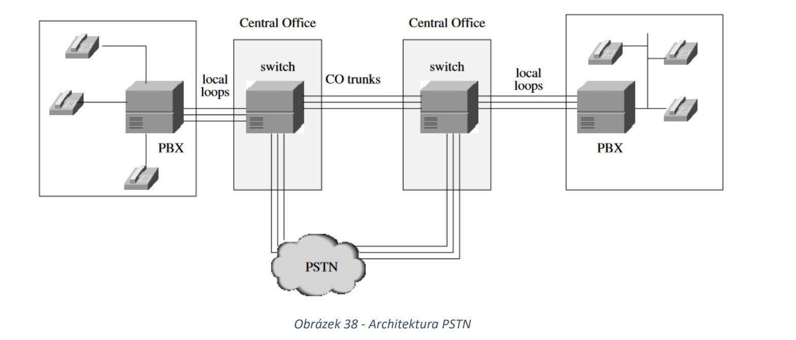
7.10 Vysvětlete, k čemu slouží protokoly RTP a SDP. Uveďte, na jaké vrstvě
modelu TCP/IP tyto služby pracují, jaká data přenášejí a jak souvisí s VoIP.
RTP - Aplikační protokol pracující nad UDP (transportní vrstva L4). Slouží pro přenos multimediálních dat zpracovaných v reálném čase, obsahuje identifikace typu obrazu, sekvenční čísla paketů, časové značky a podporuje monitorování. - Nezaručuje kvalitu přenosu ani celkové zpoždění
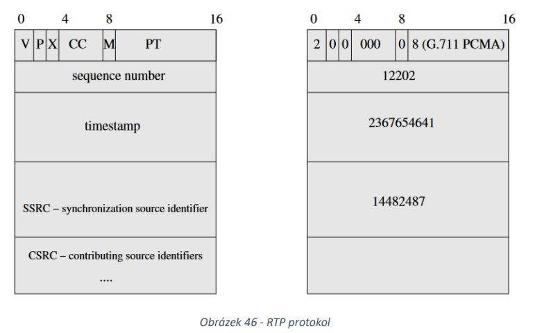
- Standard RTP definuje také kontrolní protokol RTCP (Real-time Transport Control Protocol), který slouží k monitorování kvality distribuce dat a přenosu řídících informací protokolu RTP. Odesílá zprávy každých n vteřin a obsahuje aktuální informace o přenosu (stav, počet přenesených paketů, počet ztracených, doba přenosu). Předává řídící informace RTP. Nezaruřuje spolehlivost a pouze poskytuje informace o toku. - Souvislost s VoIP - po navázání spojení mezi volajícím a volaným se vytvoří kanál RTP. RTP je kritickou částí systému VoIP, protože umožňuje cílovému zařízení přeskládat a upravit hlasové pakety předtím, než jsou přehrány uživatelem.
SDP - aplikační protokol, který má textový formát (aplikační vrstva L7) - Souvislost s VoIP - SDP zasílá informace o typu médií, transportním protokolu, kodeku či přenosovou rychlost. Používá se ve zprávách INVITE či OK SIP protokolu. SDP nám v podstatě slouží k tomu abychom mohli navázat RTP spojení, protože vyjedná jednotlivé kodeky a parametry komunikace.
7.11 Ukažte, jak si volající strany vyměňují parametry spojení. 7.11.1 SIP INVITE s SDP Nabídkou
1. Volající A zahájí hovor odesláním SIP zprávy INVITE volanému B. 2. Zpráva obsahuje tělo SDP s nabídkou, která specifikuje parametry spojení, jako jsou kodeky, IP adresa pro RTP stream a porty. 2a. Nabídka konkrétně obsahuje tyto položky: - Media Description (typ média [audio/video], port, protokol [RTP/AVP], formát [kodeky]) - Connection Information (IP adresa, na které volající A očekává příjem RTP streamu). - Attributes (další atributy jako je rtpmap, který označuje mapování payload typů na konkrétní kodeky, a ptime, označující dobu paketu)
7.11 Ukažte, jak si volající strany vyměňují parametry spojení. 7.11.2 SIP TRYING a RINGING Odpovědi:
Při SIP TRYING a RINGING se nevyměňují žádné parametry spojení mezi volajícími, jsou to signalizační odpovědi pro volajícího, aby věděl, že se ústředny snaží navázat kontakt s volaným a poté, že se vyzvání.
7.11 Ukažte, jak si volající strany vyměňují parametry spojení. 7.11.3 SIP OK s SDP Odpovědí:
Pokud je volaný B ochoten přijmout hovor, odešle zprávu 200 OK, která obsahuje SDP tělo s odpovědí. V této odpovědi B potvrzuje nebo navrhuje změny parametrů spojení poskytnutých volajícím A. SDP Odpověď obsahuje: Potvrzení Media Description (může potvrdit použití stejného média a kodeků nebo navrhnout změny) Potvrzení Connection Information (uvede IP adresu a porty, na které B bude posílat RTP stream)
7.11 Ukažte, jak si volající strany vyměňují parametry spojení. 7.11.4 SIP ACK:
Volající A po obdržení 200 OK odešle potvrzující zprávu ACK, čímž potvrzuje přijetí parametrů spojení od volaného B a následně se utvoří přímé spojení přes protokol RTP mezi volajícími.
7.12 Srovnejte klasickou IP telefonii pomocí SIP s komerčními VoIP systémy
typu Skype, WhatsApp, apod. Popište shodné i rozdílné vlastnosti.
Shodné vlastnosti: - Vytváření uživatelských účtů, registrace uživatelů - Mobilita uživatelů - Adresování a směrování hovorů - Vytváření a udržování spojení - Přenos hlasových dat Rozdílné vlastnosti: - Nestandardní protokoly, často změna koncepce - Decentralizované řešení, peer-to-peer, hybridní architektura - Proprietární (privátní) správa uživatelských účtů - Služba není garantovaná - Omezené možnostni propojení s PSTN, mobilní sítí či systémy SIP/H.323 - Problémy se soukromím (účty i hovory jsou u vlastníka platformy)
7.13 Vysvětlete, jak probíhá přenos hlasu do binární podoby. Popište jednotlivé
fáze převodu.
Digitalizace signálu: - vzorkování analogového signálu - využívá se PAM (pulzní amplitudová modulace), rychlost vzorkování musí být min. 2x vyšší než nejvyšší frekvence analogového signálu (Nyquistův teorém) - kvantifikace vzorků - µ-law (US, Kanada, Japonsko), α-law (ostatnı) - kódování hodnot na binární hodnoty (PCM, ADPCM, CS-ACELP) - komprese (nepovinná) - kodeky Digitalizované vzorky jsou vloženy do paketů RTP, ten používá UDP pro rychlý, ale nespolehlivý transport. Hlavička RTP obsahuje sekvenční čísla a časové razítka pro rekonstrukci signálu.
7.14 Definujte, co je kodek. Uveďte, jak souvisí typ kodeku s požadavky na
přenosové pásmo. Uveďte příklady nejběžnějších kodeků u VoIP.
Kodek je zařízení nebo software, který slouží ke kódování dat, obvykle audia a videa pro potřeby jejich ukládání, vysílání nebo streamování a pro jejich opětovné dekódování. Kodeky mohou obsahovat i funkci komprese a šifrování dat. Každý kodek používá specifický algoritmus pro kódování a dekódování, některé kodeky jsou navrženy pro vysokou míru komprese s cílem snížit velikost dat, což je užitečné pro šetření šířky pásma, ale může to mít dopad na kvalitu. Kodeky s vyšší mírou komprese obvykle vyžadují méně přenosového pásma, což je výhodné pro přetížené sítě nebo připojení s nižší rychlostí. Kodeky s nižší mírou komprese nebo bezztrátové komprese obvykle poskytují lepší kvalitu, ale vyžadují více přenosového pásma.
7.15 Pro zadaný kodek a režii zapouzdření vypočítejte potřebné přenosové
pásmo hovoru u VoIP. Kodek G.711 má vzorkovací frekvenci 8kHz a 8 bitů na vzorek. Telefon posílá hlasové rámce každých 20ms. Ke každému rámci je přidávána režie (58 B).
Vypočítáme vzorkování: 8 (bitů na vzorek) * 8 kHz = 64 kb/s 64 kb/s = 64 000 b/s
Telefon posílá hlasové rámce každých 20ms, za sekundu pošle tedy 50 rámců. Velikost rámce: 64 000 (vzorkovani) / 50 (počet rámců) = 1280 bitů Ke každému rámci připočítáme režii (58 B = 464 bitů) 1280 (rámec) + 464 (režie) = 1744 bitů Za sekundu odešleme 50 rámců, tedy 1744 * 50 = 87 200 b/s Potřebná šířka přenosového pásma je tedy 87 200 b/s.
7.16 Vyjmenujte bezpečnostní rizika u VoIP. Ukažte, jak je lze eliminovat.
Odposlech
Viry
SPIT (SPam over Internet Telephony)
Phishing - vishing (voice phishing), PHIT (Phishing over IP Telephony)
Přerušení služby útokem typu D/DoS (Distributed/Denial of Service)
Neautorizované použití služby
Výpadek napájení
Pro zabezpečení a zajištění spolehlivé VoIP komunikace lze použití následující technologie:
Řízení přístupu k síťovému médiu prostřednictvím 802.1x
Definuje rámec pro autentizace klientských zařízení v lokálních sítích, základem architektury je autentizační prvek (tzv. authenticator), což může být switch nebo Wi-Fi AP, ke kterému se každý uživatel (supplicant) připojit a ověřit svou identitu. Vlastní ověření může být oproti lokální DB uživatelů na straně autentizačního prvku, většinou se používá speciální auth. server Radius či TACACS+. Autentizace a autorizace za pomocí 802.1x umožňuje sledovat všechna síťová zařízení na úrovní portů a řídit jejich přístup do různých částí sítě, například pomocí přidělení VLAN skupiny
Oddělení hlasového a datového provozu pomocí VLAN
Základní bezpečnostní postup doporučený pro provoz VoIP. VLAN umožní logicky oddělit jednotlivé rámce na úrovni Ethernetu a portů přepínače, což je výhoda nejen pro zabezpečení (taky zjednodušení návrhu sítě, správa konfigurace IP telefonie, zajištění dostatečného bandwidthu pomocí QoS na dané VLAN síti pro hlasové přenosy,..)
IPSec (IP Security)
Zajišťuje zabezpeční na úrovni síťové vrstvy pomocí protokolů AH (Authentication Header) a ESP (Encapsulating Security Payload). Pomocí IPSec lze vytvářet virtuální sítě (VPN), které umožňují bezpečný datový přenos přes nezabezpečené (např. veřejné) sítě. Hlavní nevýhodou je velká režie, protože se ke každému RTP paketu přidávají zabezpečovací informace.
Secure RTP (SRTP)
Rozšíření RTP pro zajištění důvěryhodnosti, autentizace a ochraně proti podvržení přenosů RTP a RTCP. Také byl kladen důraz na menší výpočetní náročnost zabezpečení, úsporné přenášení zabezpečovacích informací a nezávislost na transportní, síťové a fyzické vrstvě využíváné protokolem RTP.
Napájení PoE
Power over Ethernet nám může zajistit stabilní napájení do zařízení
7.17 Co tvoří režii přenosu u IP telefonie? (Těch slavných 58 B v příkladech)
Ethernetový rámec - 18 B IP hlavička - 20 B UDP hlavička - 8 B RTP hlavička - 12 B (18 + 20 + 8 + 12 = 58 B) hurá
7.2 Vyjmenujte jednotlivé typy signalizace u klasické telefonní sítě PSTN a
ukažte, jak jsou implementovány u VoIP telefonie pomocí SIP.
Kromě hlasu je jednou z nejdůležitějších částí samotná signalizace hovoru. Na lokální úrovni
(mezi ústřednou a koncovým zařízením) rozlišujeme tři typy signalizací: 1. Kontrolní signalizace Pro komunikaci mezi ústřednou a koncovým zařízením (zavěšeno, zvednuté
sluchátko, vyzvánění).
2. Adresová signalizace Po kontrolní signalizaci (po zvednutí sluchátka). Je to například tónová volba, pulsní
doba…
3. Informační signalizace Informuje o vytváření hovorů a zjišťuje stavy volajících. Signalizacemi jsou například
oznamovací tón, obsazovací tón, tón neprůchodnosti, neznámé číslo…
U VoIP spojování a signalizaci může řešit např. protokol SIP. Ten také signalizuje volající, např. zprávami TRYING (po příkazu INVITE dává ústředna vědět volajícímu, že se snaží lokalizovat volaného), RINGING (po lokalizaci volaného), ale také signalizace zajistí oznámení o ukončení hovory a uvolnění alokovaných zdrojů.
7.2 Vyjmenujte jednotlivé typy signalizace u klasické telefonní sítě PSTN a
ukažte, jak jsou implementovány u VoIP telefonie pomocí SIP. 7.2.1 SIP signalizaceKontrolní signalizace je implementována pomocí SIP zpráv jako INVITE (pro zahájení
hovoru), BYE (pro ukončení hovoru), a RINGING (pro signalizaci, že hovor zvoní na druhém
konci).
Adresová signalizace je provedena pomocí INVITE zprávy, která obsahuje URI (Uniform
Resource Identifier) volané strany, a DTMF tóny jsou posílány buď v rámci RTP (Real-time
Transport Protocol) nebo jako SIP INFO zprávy. Informační signalizace je reprezentována SIP odpověďmi, jako je 486 Busy Here pro
obsazeno, 404 Not Found pro neexistující číslo, nebo 480 Temporarily
Unavailable pro dočasně nedostupný hovor. Různé typy tónů mohou být generovány
softwarově na klientovi.
7.3 Porovnejte vlastnosti telefonní sítě PSTN a IP telefonie.
PSTN (Public Switched Telephone Network)
Garantovaná šířka pásma a spolehlivý přenos. (výhoda)
Dobrá kvalita přenosu u digitálních ústředen (výhoda)
Napájení koncových zařízení z ústředny (výhoda)
Spolehlivost, bezchybnost - dedikované spoje pro telefonné přenos (výhoda)
Zavedené standardy (výhoda)
Další služby (lokalizace účastníka apod.) (výhoda - tísňové volání)
IP telefonie
Mobilita a dostupnost: přenosy nad IP (datovými) sítěmi
Lze kombinovat přenos po datové a telefonní síti, což snižuje náklady na vytvoření, údržbu a rozšiřování sítí
Umožnuje centrální správu systému a další pokročilé služby
Největší předností je snížení nákladů na telefonování (zejména mezi vzdálenými pobočkami)
Problém napájení: PoE (Power over Ethernet), UPS
7.4 Popište architekturu sítě VoIP. Vyjmenujte základní stavební prvky, popište
jejich funkci
IP telefonie přenáší hlas prostřednictvím IP sítě, umožňuje také centrální správu systému a mobilitu uživatelů. Základní komponenty jsou podobné jako u PTSN, tudíž ji tvoří telefony, ústředny (gatekeeper, SIP server) a brány do analogové sítě (gateways). Pro uskutečnění hovoru je potřeba pomocí signalizačního protokolu (např. SIP nebo H.323) navázat spojení s ústřednou a spojit se s volanou stanicí, následně se vytvoří spojení přímo mezi komunikujícími účastníky a probíhá přenos hlasu transportním protokolem RTP (Real-time Transport Protocol). Základní činností IP telefonní sítě je řízení hovorů prostřednictvím signalizačních protokolů. Řízení se skládá z vytvoření spojení, z údržby telefonního kanálu a z ukončení hovoru. Řízení může být distribuované nebo centrální, kdy u centrálního zajušťuje řízení jeden prvek a u distr. více ústředen. Stavební prvky: IP telefon - koncové zařízení, umožňuje uživateli se připojit do IP telefonní sítě a volat, může být buď hardwarový (VoIP telefon) nebo softwarový (SIP klient). Podle typu signalizačního protokolu může IP telefon podporovat signalizaci SIP, H.323, SCCP apod., oproti analogovým telefonům nabízí také rozšířené služby (např. dynamické přidělování profilů podle jména uživatele, interaktivní telefonní seznam, např. s využitím LDAP, možnost komunikace s Internetem přes WWW, apod.) Ústředna (gatekeeper) - síťové zařízení nebo aplikace, která zajišťuje řízení přístupu do IP telefonní sítě včetně registrace uživatele a nastavení jeho konfigurace, dále zajišťuje vyhledávání volaných účastníků, směrování hovorů, přidělování přenosového pásma, překlad adres apod., příkladem může být Asterisk (SIP server), Cisco Call Manager Brána (gateway) - zařízení nebo aplikace, která slouží k propojení IP telefonní sítě s PSTN, PBX (místní pobočková ústředna) či GSM (mobilní síť). Umožňuje také propojovat různé IP telefonní sítě s jinou signalizací (SIP/H.323). Bránu je možno implementovat jako součást ústředny (gatekeeper), například ve formě přídavné HW karty a odpovídajícího SW rozšíření MCU (Multipoint Control Unit) - řídící jednotka pro komunikaci více koncových zařízení a bran, poskytuje prostředky pro vytváření vícebodové konference, skládá se z vícebodového řadiče MC (Multipoint Controller) pro řízení koncových zařízení a vícebodového procesoru (Multipoint Processor), který provádí mixování, přepínání a další zpracování datových toků v MCU Aplikační servery - Další služby pro uživatele, jako hlasová pošta, správa identit, WWW, Instant Messenger
7.5 Jaké požadavky musí splňovat IP telefonie z pohledu uživatele?
Dostatečné přenosové pásmo
Dostatečnou kvalitu
Bezpečnost (odposlech, viry, phishing, SPIT[SPam over Internet Telephony], D/DoS)
Dostupnost (PSTN je dostupná zhruba 99.999 % času, IP telefonie by měla být také)
Integrace do ostatních sítí (třeba PSTN)
Ze zákona musí být dostupná tísňová volání
7.6 Popište adresování a směrování u IP telefonie pomocí protokolu SIP.
Uveďte příklad adresy.
Adresování - Poskytovatel VoIP přidělí uživatelům adresy SIP pro svou doménu SIP. - Formát: speciální identifikátor SIP URI typu sip:user@domain, např. sip:matousp@cesnet.cz (pozn.: nezapomenout na tu předponu sip: ! Jinak 0b) - Adresa by v telefonní síti měla být jedinečná Směrování - Jako klient si musím nakonfigurovat svoji ústřednu do klientské SIP aplikace nebo nějakého VOIP zařízení. Následně se zaregistruji na ústřednu pomocí příkazu REGISTER (odregistruji se stejným příkazem, ale v hlavičce se zašle Expires: 0), čímž dám serveru informace o tom, kde se na IP nacházím (device URI, např. sip:alice@2.3.4.5:5060, 5060 je port pro SIP) a taky, že jsem dostupný.
Pokud chci někomu zavolat, pošlu příkaz INVITE. SIP ústředny potom směrují signalizaci pomocí SIP URI (např. sip:matousp@cesnet.cz) a to tak, že za pomocí DNS najdou příslušný server (zde teda cesnet.cz) za pomocí záznamu NAPTR nebo SRV a tam danou signalizaci pošle. Po úspěšném INVITE se volajícímu vrátí odpověď RINGING (INVITE byl přijat, volanému zvoní telefon) a po přijetí hovoru se ze strany volaného odešle zpráva o přijetí OK - 200, na kterou volající odpoví potvrzující zprávou ACK. Následně se napřímo mezi nimi vytvoří RTP spojení a probíhá hovor. Protokol SIP provádí pouze navázání spojení, registrace, směrování a adresování, samotný hovor už je mimo něj. Příklady adres: SIP URI = sip:user@domain, např. sip:isa19boduF@nedostuduju.cz (jedinečný identifikátor na VoIP síti) DEVICE URI = sip:user@ip, např. sip:isa19boduF@2.3.4.5:5060 (tuto adresu a port, na kterém se nacházíme, si uchovává naše SIP ústředna)
7.7 Popište jednotlivé kroky při navazování a ustanovení spojení pomocí SIP.
1. Jako klient si manuálně nakonfiguruji svoji ústřednu do SIP klientské aplikace nebo VoIP zařízení 2. Registruje se na danou ústřednu příkazem REGISTER a dávám tím serveru informace o tom, kde se reálně na IP nacházím (device uri) a dávám vědět, že jsem dostupný 3. Chci-li někomu volat, pošlu na jeho adresu (SIP uri) příkaz INVITE a tím mu zavolám. SIP ústředny potom směrují signalizaci pomocí SIP URI a to tak, že pomocí DNS NAPTR nebo SRV záznamu lokalizují danou ústřednu (pokud se teda volá na jinou ústřednu, než je ta volajícího) a tam pošlou signalizaci INVITE (mezitím se volajícímu vrací odpovědi od ústředen 100 Trying). 4. Po úspěšném příkazu INVITE se nám vrátí odpověď RINGING (volanému zvoní telefon), poté co přijme hovor dostaneme zprávu OK - 200, na kterou pošleme odpověď ACK, všechna tato komunikace je stále posílána prostřednictvím ústředen. 5. Mezi volajícím a volaným se vytvoří napřímo RTP spojení a probíhá hovor.
7.8 Ukažte, jak probíhá lokalizace volaného účastníka u VoIP.
Pro hledání účastníka se využívá SIP server, který pro hledání účastníka využije DNS server (aby lokalizoval jeho ústřednu za pomocí domény zmíněné v sip uri, SRV / NAPTR) nebo statické cesty (např. pokud je uživatel ze stejné domény). Session Description Protocol (SDP) je v metodě INVITE a OK a obsahuje: - typ kodeku - typ média - transportní protokol - přenosovou rychlost
7.9 Popište protokol SIP a uveďte základní metody.
Protokol SIP je signalizační protokol pro IP telefonii. Jedná se o textový protokol s hlavičkami podobnými HTTP a komuniakce probíhá nad UDP. Hlavním úkolem je: - autentizace a autorizace uživatele - sestavení spojení - řízení hovoru - ukončení spojení Pro adresování používá SIP identifikátor URI sip:user@domain Při vzniku spojení dojednává protokol SIP mezi volajícím a volaným důležité parametry spojení, například kódování. Slouží také k určení IP adresy volaného (dotazem na lokalizační server). Během hovoru řídí přenos hovoru, zapojení více účastníků, případně změnu kódování. Vlastní komunikace se skládá ze dvou základních akcí - registrace klienta a ustanovení spojení. Základními metodami protokolu SIP jsou: - REGISTER (registrace ale i odregistrace) - INVITE, ACK, OK (vytváření spojení) - CANCEL (zrušení vytváření spojení) - BYE (ukončení spojení) - OPTIONS (zjišťování možností přenosu) Mezi další metody patří: • INFO – přenos aplikačních informací.
• MESSAGE – textové zprávy IM (Instant Messaging)
• SUBSCRIBE, NOTIFY – zasílání upozornění na události.
• PUBLISH – zveřejnění stavu událostí (prezence).
8.1 Vysvětlete pojem streamování multimediálních dat. Uveďte možnosti
distribuce multimediálních dat.
Běžne užíváno ve smyslu "jednosměrný přenos multimediálních dat"
Přesněji, streaming je přenos multimediálních dat po počítačové síti v reálném čase rychlostí přehrávání
Je nutné mít vhodný mechanismus pro jednorázové doručení/zobrazení, přijímajícímu stačí malá vyrovnávací paměť, přehrávání začína po načtení několika prvních sekund/snímků
Je možné implementovat jako unicast, multicast, broadcast službu
Typy médií: audio, obraz, text, video, animace, interaktivita
8.10 Vysvětlete pojem MCU (multipoint control unit). Popište využití MCU.
Multipoint control unit (MCU)
umožňuje pořádat vícebodové videokonference, přijímá a přeposílá streamy
přijímá a dekóduje příchozí streamy v různých formátech a vytváří příslušný výstupní stream pro koncové uzly
streamy mohou být zasílaný asymetricky
8.2 Porovnejte živý přenos multimédií (live streaming) s přenosem na
vyžádání (video on demand). Ukažte, čím se liší a jaké protokoly používají pro
přenos.
Živý přenos
Živý přenos znamená, že obsah je vysílán v reálném čase.
Diváci sledují obsah, když je vysílán, podobně jako u tradičního televizního vysílání
Neexistuje možnost pozastavení, přetáčení nebo sledování od začátku během živého vysílání (pokud není explicitně podporováno) - slovy Skokanové: přehrávání nelze řídit
Používá protokol RTP
Přenos na vyžádání (on-demang streaming, video on-demand)
Klientovi je streamem na jeho žádost zasílán předem vytvořený multimediální obsah
Přehrávání lze řídit
YouTube
Používá protokol HTTP Live Streaming (HLS)
8.3 Popište, jak souvisí kvalita multimediálního obsahu s požadavkem na
přenosová pásma. Jaké kodeky se používají pro multimediální přenosy
Vyšší rozlišení videa (HD, 4K) a vyšší kvalita zvuku (např. lossless) vyžadují více datových bitů pro zachycení a přenos informací, takže je třeba větší šířka pásma. Pro efektivní kompresi dat máme kodeky, které umožňují přenášet kvalitní obsah přes omezené šířky pásma. Kompresní algoritmy redukují velikost tím, že odstraní redundantní nebo nepodstatné informace, čímž snižuje potřebu přenosového pásma (ne vždy jsou redundantní nebo nepodstatné, velká komprese může značně ovlivnit kvalitu). Video kodeky:
H.261 (ISDN),
H.263 (videokonference),
H.263+, H.263++,
H.264 (MPEG-4 AVC),
MPEG-1,
MPEG-2,
H.265,...
Audio kodeky:
G.711 64 kb/s (2 x 4 kHz) x 8 bitů/vzorek
G.726r32 32 kb/s (2 x 4 kHz) x 4 bitů/vzorek
G.726r24 24 kb/s (2 x 4 kHz) x 3 bitů/vzorek
G.726r16 16 kb/s (2 x 4 kHz) x 2 bitů/vzorek
G.728 16 kb/s (2 x 4 kHz) x 2 bitů/vzorek
G.729 8 kb/s (2 x 4 kHz) x 2 bitů/vzorek
G.729A 8 kb/s (2 x 4 kHz) x 2 bitů/vzorek
8.4 Vysvětlete pojem MPEG Transport Stream (MPEG TS). Popište jeho formát
a způsob multiplexování dat. Vysvětlete význam tabulek PAT a PMT pro vysílaní
MPEG TS.
Nejde o síťový protokol. Je to standard, který popisuje, jakým způsobem jsou části multimediálního obsahu kombinovány do jednoho datového toku - multiplexing Umožňuje v jednom datovém toku posílat jeden i více multimediálních streamů Vhodné pro přenosy, při nichž je možné, že dojde ke ztrátě paketu nebo poskožení dat v paketu (nebo kde je potřeba posílat více než jeden program současně) Datový tok se skládá z paketů pevné velikosti - obvykle 188 bytů Každý MPEG-TS paket obsahuje 184 bytů dat a 4 bytovou hlavičku První byte hlavičky obsahuje vždy hodnotu 0x47 (sync byte) Klíčovou položkou je 13 bitový Packet Identified (PID), která odpovídá jednotlivým elementárním streamům
Pro přijímaný Transport Stream musí uživatel určit, o které konkrétní pakety má zájem, takže určit PID paketů. Tabulka PAT obsahuje tabulku PID pro mapování programů (seznam všech programů), např. Program 1 = 15, Program 2 = 301 Tabulka PMT obsahuje tabulku PID patřících k danému programu, např. Video = 51, Audio (Eng) = 64, Audio (Czech) = 64, Subtitle = 67
8.5 Popište protokol RTP, jeho formát a jeho použití. Podle čeho poznáme,
jaký typ multimediálních dat je zapouzdřený v RTP?
RTP - Aplikační protokol pracující nad UDP (transportní vrstva L4). Slouží pro přenos multimediálních dat zpracovaných v reálném čase, obsahuje identifikace typu obrazu, sekvenční čísla paketů, časové značky a podporuje monitorování. - Nezaručuje kvalitu přenosu ani celkové zpoždění
- Standard RTP definuje také kontrolní protokol RTCP (Real-time Transport Control Protocol), který slouží k monitorování kvality distribuce dat a přenosu řídících informací protokolu RTP. Odesílá zprávy každých n vteřin a obsahuje aktuální informace o přenosu (stav, počet přenesených paketů, počet ztracených, doba přenosu). Předává řídící informace RTP. Nezaruřuje spolehlivost a pouze poskytuje informace o toku. - Typ zapouzdřených multimediálních dat v RTP je možné rozpoznat podle Payload Type v hlavičce RTP - Různé typy payloadů (např. různé audio a video kodeky) mají přiřazené různé číselné hodnoty payload type. - Pro správnou interpretaci payload type musí obě komunikující strany používat stejnou sadu definic Payload Type, což je obvykle dohodnuto během nastavování sezení pomocí protokolu SIP, který přenáší informace o kodecích v SDP zprávách.
8.6 Vysvětlete, k čemu slouží protokol RTSP. Popište základní operace RTSP.
Zakreslete příklad komunikace RTSP.
- Je to signalizační protokol, slouží k navázání a ukončení přenosu a řízení časově synchronizovaných média streamů. - Protokol je textový a syntaxe je podobná HTTP - Standardně využívá port TCP/554 - Je to statový protokol, udržuje si informace o svém stavu a sám neposílá data (tzv. out-of-band protokol), ale pouze pracuje s protokoly, které je zasílají (RTP, MPEG-TS) - Jeho základní operace jsou DESCRIBE, ANNOUNCE, SETUP, PLAY, PAUSE, TEARDOWN, OPTION
DESCRIBE žádost o zaslání popisu médií příslušných k URL (popsáno SDP) SETUP požadavek na konkrétní objekt (média stream), odpověď obsahuje seznam parametrů nutných pro přenos PLAY příkaz pro server aby začal zasílat data specifikovaná zprávami SETUP PAUSE dočasně zastaví zasílaní konkrétního streamu TEARDOWN zastaví zasílaní konkrétního streamu OPTION používáno pro nestandardní žádosti klienta
8.7 Vysvětlete rozdíl mezi videokonferencí a streamováním. Porovnejte oba
systémy z pohledu funkcionality, použitých přenosových protokolů i požadavků
na přenos.
Videokonference Slouží ke komunikaci, jedná se o obousměrný přenos Zpoždění je zde méně tolerovatelné než u streamingu (nechceme s někym volat a mít sekundové zpozdění). Má tedy vyšší nároky na přenos, ale není potřeba tak vysoká kvalita videa Používá protokoly H.323, SIP Streaming Jednosměrný přenos (živě, VoD) Přenos dat po počítačové síti v reálném čase rychlostí přehrávání, vhodný mechanismus pro jednorázové doručení/zobrazení Neklade se zde takový důraz na zpoždění, které je zde tolerovatelné Použivá protokoly H.323, MPEG, RTP
8.8 Vyjmenujte základní prvky systému H.323 pro videokonference a jejich
vlastnosti.
H.323 je standard pro přenos média na IP a popisuje způsob přenosu audio a video dat nad různými komunikačními technologiemi. Samotný se skládá z více standardů (H.245, H.225,...). Jedná se o doporučení ITU-T (International Telecommunication Union - Telecommunication Standardization Sector) popisující terminály a další součásti, které poskytují služby pro multimediální komunikaci v paketově orientovaných sítích v nichž nemusí být garantovaná kvalita služeb (QoS). Specifikuje součásti vzájemně spolupracující v H.323 prostředí. Architektura: Terminal
koncové zařízení
zajišťuje obousměrnou komunikaci v reálném čase s jiným koncovým zařízením, bránou (gateway) nebo MCU
mezi komponenty patří videokamera, zobrazovací plocha, mikrofon, reproduktory, kodek, uživatelské rozhraní Gateway
Gateway
koncové zařízení v síti, které obvykle umožňuje obousměrnou komunikaci v reálném čase mezi H.323 terminály na paktově orientované síti a jinými ITU terminály na síti s přepínáním okruhů
Gatekeeper
volitelná součást H.323 architektury
poskytuje služby pro
- Address translation (překlad čísel E.164 koncových uzlů na IP adresy)
- Bandwidth control (řízení velikosti datových toků)
- Admission control (řízení přístupu)
- Zone management (komunikace s ostatními gatekeepry v síti)
Multipoint control unit (MCU)
umožňuje pořádat vícebodové videokonference, přijímá a přeposílá streamy
přijímá a dekóduje příchozí streamy v různých formátech a vytváří příslušný výstupní stream pro koncové uzly
streamy mohou být zasílaný asymetricky
8.9 Vyjmenujte a popište základní části videokonferenčního terminálu dle
standardu H.323
Terminal
koncové zařízení
zajišťuje obousměrnou komunikaci v reálném čase s jiným koncovým zařízením, bránou (gateway) nebo MCU
mezi komponenty patří videokamera, zobrazovací plocha, mikrofon, reproduktory, kodek, uživatelské rozhraní Gateway
9.1 Popište, co je cílem správy sítě a jaké úkoly řeší. Vyjmenujte prostředky
pro správu sítí.
Cíle:
Monitorování zařízení uživatelů, správa nastavení a systémů
Autorizace přístupu k zařízením a službám, účtování
Sledování zatížení, plánování zdrojů, řešení výpadků a chyb
Bezpečnostní monitorování: detekce útoků a nedovoleného chování
Zálohování a obnova zddrojů na síti
Standardy pro správu sítí:
X.700 Management Framework for OSI for CCITT Applications
Internet Management using SNMP (Popis monitorovaných objektů, správa objektů v MIB, protokol SNMP)
9.10 Vysvětlete princip kódování BER. Kde a proč se dané kódování používá?
Každý datový prvek v BER je kódován pomocí trojice "typ, délka, hodnota" (TLV)
Typ identifikuje datovou strukturu (např. INTEGER, STRING).
Délka specifikuje délku hodnoty v bytech
Hodnota jsou vlastní data.
BER může kódovat různé typy dat, včetně primitivních (INTEGER, STRING) a složených (SEQUENCE).
BER je široce používán v mnoha síťových protokolech a aplikacích, které potřebují spolehlivý způsob kódování složitých datových struktur pro přenos mezi systémy. Příklady zahrnují LDAP (Lightweight Directory Access Protocol), SNMP (Simple Network Management Protocol)
Používá se, protože poskytuje standardizovaný způsob kódování datových struktur, který je nezávislý na platformě. Potom obsahuje více možností kódování stejných dat, což aplikacím umožňuje si vybrat formát podle jejich potřeby. Také umožňuje různým systémům komunikovat mezi sebou bez ohledu na vnitřní reprezentaci dat.
9.11 Popište protokol SNMP. Vyjmenujte základní příkazy SNMP a popište jejich
funkci.
SNMP popisuje protokol pro práci s monitorovanými objekty. Funguje přes UDP a jeho hlavní úlohou je komunikace mezi řídící stanicí a agentem na monitorovaném zařízení. Komunikace je typu request-response, proto se využívá UDP. Jedná se o nestavový protokol (každá výměna dat je nezávislá a nepotvrzená). Komunikace probíhá tak, že řídící jednotka pošle dotaz agentovi SNMP, ten načte, vykoná akci a pošle výsledek operace. Pro každý objekt musím posílat zvlášť get dotaz, což může být velká zátěž na síť, proto existuje zpráva bulk, která shlukuje více dotazů do jednoho. Základní příkazy SNMP:
get - řídící stanice is vyžádá hodnoty nějakého objektu
set - řídící stanice nastaví hodnotu daného objektu
trap - agent pomocí příkazu trap oznamuje řídící stanici, že nastala nějaká důležitá událost
9.12 Ukažte, jak lze zabezpečit přenos SNMP.
SNMPv1 a SNMPv2 používají jednoduchou autentizaci pomocí community stringu (heslo se dalo během komunikace odchytit) SNMPv3 už používá pokročilejší zabezpečení, definuje bezpečnostní mechanismus a zajišťovací autentizaci odesílatele a integritu dat pomocí algoritmu HMAC-MD5 a HMAC-SHA, podporuje šifrování dat (ale to musí podporovat zařízení, na kterém běží), např. CBC-DES, CFB-AES, 3DES
9.13 Diskutujte výhody a nevýhody nasazení systému SNMP v praxi.
Výhody
SNMP je podporováno většinou síťových zařízení, což z něj činí univerzální nástroj pro správu a monitorování sítě
Protokol je relativně jednoduchý na pochopení a implementaci, což usnadňuje správu sítě
Umožňuje efektivní sběr dat a monitorování výkonnosti, dostupnosti a životnosti síťových zařízení - umožňuje sledovat stav zařízení (narozdíl např. od Netflow)
Je flexibilní a škálovatelný, což umožňuje spravovat malé i velké sítě
Nevýhody
Není vhodné pro sledování rozsáhle sítě (velký počet monitorovaných agentů)
Neumožňuje spouštět příkazy na monitorovaném zařízení
Je přenášené přes UDP => nejde o spolehlivý přenos (problém s traps, můžou se ztratit důležité zprávy)
Starší verze SNMP (v1 a v2c) mají omezenou bezpečnost a jejich heslo jde odchytit, SNMPv3 je ale zase složitější na konfiguraci a nemusí ho podporovat každé síťové zařízení
Omezeno na vrstvy L1-L4
Monitoruje stav jednotlivých zařízení, chybí ale celkový pohled na síť
9.14 Ukažte, jak lze zajistit viditelnost dat v síti. Uveďte příklady pasivního a
aktivního monitorování.
Pasivní
Sledujeme probíhající komunikaci na síti a sbíráme z ní informace. Pasivní monitorování využívá především logovací informace aplikací a služeb.
Může napomoct třeba syslog, NetFlow, SNMP traps, sběr pcapu
Aktivní
U aktivního monitorování nečeká administrátor pouze na zprávy, ale sám se dotazuje na dostupnost zařízení nebo služeb
SNMP, ICMP zprávy, Telnet
9.15 Srovnejte použití SNMP a NetFlow pro správu sítě. Čím se liší architektury
těchto systémů?
SNMP
Protokol navržený pro monitorování a správu síťových zařízení (routery, switche, servery, pracovní stanice atd.)
Umožňuje shromážďovat metriky, jako jsou využití šírky pásma, využití paměti, stav zařízení...
Z řídící stanice se administrátor dotazuje agentů na informace o monitorovaných zařízení.
Architektura představuje systém, kdy se řídící stanice (administrátor) dotazuje na informace monitorovaných zařízení (od agentů). Správce je schopen pomocí get, set aktivně monitorovat a spravovat síť.
Všechny monitorované objekty jsou uloženy v databázi MIB, přenos zpráv mezi zařízeními zabezpečuje protokol SNMP
Netflow
Síťový protokol pro sběr informací o síťovém provozu
Poskytuje podrobné informace o toku dat v síti, jako jsou zdrojové a cílové IP adresy, porty, protokoly, typy služeb a množství přenesených dat
Tok - posloupnost paketů mající společnost vlastnost a procházející bodem pozorování za určitý časový interval
Záznam o toku obsahuje informace o toku. Typicky obsahuje srcIP, destIP, srcPort, dstPort, typ protokolu, datum a čas zaznamenání, počet přenesených dat toku
Architektura představuje exportér (sonda/router pro získávání statistik o tocích, např. nprobe, Flowmon), komunikační protokol Netflow, kolektor (zařízení pro ukládání záznamu o tocích, např. Nfdump), nástroje pro zobrazení dat (grafy, statistiky, apod., např. NfSen)
Záznamy o tocích se exportují podle nastavení exportéru
Kolektor může sbírat data od více exportérů, data ukládá a zobrazuje
Použití - monitorování sítě, plánování sítě, bezpečnostní analýza, sledování aplikací, uživatelů, účtování, dlouhodobé ukládání informací o přenesených datech
9.16 Ukažte, jaké informace o síti je možné získat pomocí SNMP a nelze získat
pomocí NetFlow.
Systémové informace o monitorovaných zařízení (výkon, hardware[stav CPU], OS, apod., zatížení)
Problémy na zařízeních pomocí traps
Je-li nějaké zařízení nedostupné (to z NetFlow nezjistíme)
9.17 Uveďte příklad monitorovacích dat, které lze získat pomocí NetFlow a
nelze pomocí SNMP.
Detailní informace o síťovém toku (ip adresy, porty, protokol)
Objem přenesených dat (počet bajtů / paketů v toku)
Doba trvání toků (umožní analyzovat délku trvání síťových spojení)
Typ služby (ToS) a QoS (Quality of Service) (klíčové pro analýzu prioritizace a výkonu síťového provozu)
9.18 Srovnejte systémy SNMP a Syslog. Ukažte, jaké informace lze získat
pomocí Syslogu a nelze pomocí SNMP.
SNMP
Protokol navržený pro monitorování a správu síťových zařízení (routery, switche, servery, pracovní stanice atd.)
Umožňuje shromážďovat metriky, jako jsou využití šírky pásma, využití paměti, stav zařízení...
Z řídící stanice se administrátor dotazuje agentů na informace o monitorovaných zařízení.
Architektura představuje systém, kdy se řídící stanice (administrátor) dotazuje na informace monitorovaných zařízení (od agentů). Správce je schopen pomocí get, set aktivně monitorovat a spravovat síť.
Všechny monitorované objekty jsou uloženy v databázi MIB, přenos zpráv mezi zařízeními zabezpečuje protokol SNMP
Syslog
Standard pro zasílání a logování zpráv o událostech z různých síťových zařízení a aplikací
Pracuje nad UDP, port 514
Zprávy mají tzv. severity level (0 - Emergency, 1 - Alert až 7 - Debugging)
Je to primárně diagnostický nástroj
Syslog servery přijímají a konsolidují logovací zprávy od různých zařízení a aplikací v síti
Poskytuje textové zprávy, které popisují události, chyby, varování a další diagnostické informace
např. zpráva "2017-12-07T20:45:13+01:00 2017 irf-kn %%10SSH/4/TrapLogin(t): 1.3.6.1.4.1.25506.2.22.1.3.0.3 SSH user login trap information"
Syntaxe je obecně : timestamp, device-id, facilitycode-severityLevel-messageNumber, Message Text
Co lze získat ze Syslog a z SNMP ne:
Podrobné zprávy o událostech (syslog poskytuje detailní popisné zprávy o událostech - chybové stavy, varování, bezpečnostní upozornění, záznamy o transakcích)
Auditové záznamy a bezpečnostní upozornění (syslog může zachytit pokusy o přístup, bezpečnostní porušení a další)
Diagnostické informace (zprávy, které mohou pomoci při diagnostice problémů a při řešení chyb v síti nebo na zařízeních
9.2 Popište model správy sítě FCAPS. Ukažte příklad implementace
jednotlivých oblastí FCAPS.
FCAPS - Fault, Configuration, Accounting, Performance, Security
Správa poruch (Fault Management) zajišťuje detekci, izolaci a opravu poruch pokud nastala porucha, tak je třeba ji lokalizovat, izolovat, poté rekonfigurovat síť a opravit nebo nahradit chybné zařízení Účtování (Accounting) zajišťuje správu uživatelských účtů a poplatky za služby Configuration umožňuje správci sítě sledovat, které monitorované objekty jsou připojené k síti a jaká je jejich konfigurace Performance monitoruje chování sítě, sbírá informace o stavu monitorovaných objektů a potom je analyzuje a vyhodnocuje má také řadící funkce, které slouží k zlepšení výkonnosti sítě na základě získaných hodnot Security zaměřuje se na řízení přístupu k síťovým zdrojům podle specifikované bezpečnostní politiky
9.3 Ukažte, jak je možné sbírat monitorovací data pro správu sítě. Uveďte
příklady nástrojů a formát dat.
Aktivní monitorování
administrátor sítě se sám dotazuje na dostupnost služeb a zařízení
SNMP, ICMP zprávy, Telnet
Pasivní monitorování
sleduje probíhající komunikaci na síti a sbírá z ní informace
využívá především logovací informace služeb a aplikací
SNMP trap, Netflow, Syslog
Logové soubory obsaují chronologické záznamy o událostech a aktivitách systému nebo aplikace
Data ve formátech jako Netflow poskytují podrobné informace o síťovém provozu, jako jsou srcIP, destIP, porty, protokoly a množství přenesených dat
9.4 Popište funkci protokolu ICMP pro správu sítě. Uveďte příklady nástrojů a
formát dat. Diskutujte bezpečnostní rizika
ICMP je povinnou součástí implementace IP v modelu TCP/IP ICMP slouží k detekci chyb při doručování IP datagramů.
Základní typy zpráv ICMP
3 - Destination Unreachable (cílová síť je nedostupná)
11 - Time Exceeded Message (TTL dosáhlo 0)
12 - Parameter Problem Message (chyba při zpracování IP hlavičky)
5 - Redirect Message (informace o přesměrování datagramu)
9.5 Vysvětlete význam protokolu ICMPv6. které zprávy ICMPv6 jsou nezbytné
pro fungování sítě.
Poskytuje stejnou funkcionalitu jako ICMPv4 (monitorování sítě na úrovni L3), ale také nahrazuje funkcionalitu ARP - zprávy NS (Neighbour Solicitation) a NA (Neighbour Advertisment) dokážou zjistit MAC adresu zařízení Zprávy jsou rozděleny na chybové (0-127) a informační (128-255) Chybové: 1 - Destination Unreachable 2 - Packet Too Big (router neumí přeposlat tak velký paket) 3 - Time Exceeded (hop limit dosáhl hodnoty 0) 4 - Parameter Problem (uzel neumí zpracovat položku ve hlavičce) Informační: 128, 129 - Echo, Echo Reply 130-132 - Multicast Listener Discovery (MLD) - IPv6 multicast 133,134 - Router Solicitation/Advertisment - výzva/ohlášení směrovače 135,136 - Neighbor Solicitation/Advertisment - výzva/ohlášení sousedovi 141,142 - Inverse Neighbor Discovery (IND) - inverzní objevování sousedů
9.6 Popište architekturu SNMP. Vysvětlete funkci jednotlivých prvků SNMP.
Řídící stanice
jedná se o serverovou aplikaci, kterou tvoří nástroje pro sběr a analýzu monitorovaných dat, ukládání statistik a prezentaci stavu sítě
Agent na monitorovaném zařízení
jedná se o aktivní proces, který běží na monitorovaném zařízení a sbírá provozní informace (server, switch, sonda). Agent beží na síťovém prvku a odpovídá na SNMP dotazy a zasílá vyžádané objekty (obsahující monitorované údaje) nebo může sám posílat asynchronní zprávy typu trap.
Objekty SNMP, které agent spravuje, mohou být read-only, ale i read-write
Databáze monitorovaných objektu MIB
Databáze MIB je soubor všech objektů na monitorovaném zařízení Objekt je v podstatě datová struktura, která reprezentuje sledované informace
Objekt je v podstatě datová struktura, která reprezentuje sledované informace (např. počet příchozích IP paketů jako celočíselná proměnná)
Řídící stanice monitoruje síť tak, že si načítá vybrané objekty ze sledovaných zařízení a některé může i měnit (zapisovat novou hodnotu, restartovat čítač apod.)
Přenosový protokol SNMP
slouží k předávání zpráv o sledovaných objektech mezi řídící stanicí a agentem
obsahuje tři základní typy příkazů:
get: řídící stanice si vyžádá hodnoty daného objektu od agenta
set: řídící stanice nastaví hodnotu daného objektu na agentovi
trap: agent pomocí tohoto příkazu oznamuje stanici, že nastala nějaká důležitá událost na monitorovaném zařízení
9.7 Definujte pojem objekt SNMP (MIB)? Popište formát, způsob identifikace
a uložení objektů. Uveďte příklady objektů SNMP a jejich hodnot.
Objekt je v podstatě
datová struktura, která reprezentuje sledované informace (například ukládá počet příchozích IP paketů jako celočíselnou proměnnou). Struktura a identifikace objektů je vyjádřena pomocí jazyka SMI (Structure Management Information). SMI definuje pravidla, jak vytvářet objekty SNMP popsané notací ASN.1 (Abstract Syntax Notation) Objekty jsou tvořeny jednoznačným identifikátorem OID, pro přenos po síti se používá kódování BER (Basic Encoding Rules). Popis objektu tvoří: jméno objektu
jednoznačný identifikátor objektu OID
syntax
abstraktní datový typ spojený s objektem (ASN.1 Data Types - INTEGER, OCTET STRING,...)
kódování pro přenos po síti
používá se BER (Basic Encoding Rules)
Příklad jednoduchého objektu ipInDelivery:
9.8 Vysvětlete pojem MIB. Vyjmenujte základní skupiny objektů MIB-2.
Uveďte konkrétní objekty.
MIB (Management Information Base) je databáze jednotlivých monitorovaných objektů a skupin. Je strukturovaná hierarchicky ve formě stromu, kde listy jsou konkrétní monitorované objekty, které jsou identifikovány pomocí OID.
Základní skupiny objektů MIB-2:
9.9 Vyjmenujte základní datové typy jazyka SMI. Zapište příklad objektu SNMP
v jazyce SMI.
INTEGER - např. počet odeslaných paketů OID - např. 1.3.6.1.2.1.1 UTF8string - Linux IPaddress - síťový formát IP adresy (například přeložená 10.10.10.10) OCTET STRING Counter32 Counter64 Integer32 Příklad objektu v SMI: -- IP adresa zařízení deviceIpAddress OBJECT-TYPE SYNTAX IpAddress MAX-ACCESS read-only STATUS current DESCRIPTION "IP adresa tohoto zařízení." ::= { 1.3.6.1.2.1.1.4 }
OBJECT-TYPE představuje jedinečný objekt v rámci MIB a je identifikován pomocí OID Syntax specifikuje datový typ objektu MAX-ACCESS specifikuje, zda lze hodnotu objektu jen číst, nebo lze i zapisovat (read-only) STATUS udává, zda je objekt stále platný (current), zastaralý nebo experimentální DESCRIPTION poskytuje lidsky čitelný popis objektu
AES
Advanced Encryption Standard
AH
Authentication Header
ARP
Address Resolution Protocol
ASN.1 (u LDAP)
Abstract Syntax Notation One
BER (u LDAP)
Basic Encoding Rules
BGP
Border Gateway Protocol
BOOTP
Bootstrap Protocol
BPF
Berkeley Packet Filter
CA
Certificate Authority
CBC
Cipher Block Chaining
CBS
Commited Burst Size
CIR
Committed Information Rate
DES
Data Encryption Standard
DH
Diffie-Hellman
DHCP
Dynamic Host Configuration Protocol
DKIM
Domain Keys Identified Mail
DMARC
Domain-based Message Authentication, Reporting, and Conformance
DN (u LDAP)
Distinguished Name
DNS
Domain Name System
DNSSEC
Domain Name System Security Extensions
DS
Delegetion Signer
EAP
Extensible Authentication Protocol
ECB
Electronic Codebook
ECC
Elliptic Curve Cryptography
ECDSA
Elliptic Curve Digital Signature Algorithm
ESP
Encapsulating Security Payload
EUI-64
Extended Unique Identifier 64
FDDI
Fiber Distributed Data Interface
FTP
File Transfer Protocol
HMAC
Hash-based Message Authentication Code
HTTP
Hypertext Transfer Protocol
HTTPS
Hypertext Transfer Protocol Secure
IANA
Internet Assigned Numbers Authority
ICANN
The Internet Corporation for Assigned Names and Numbers